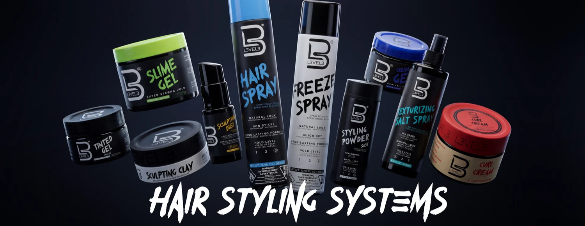
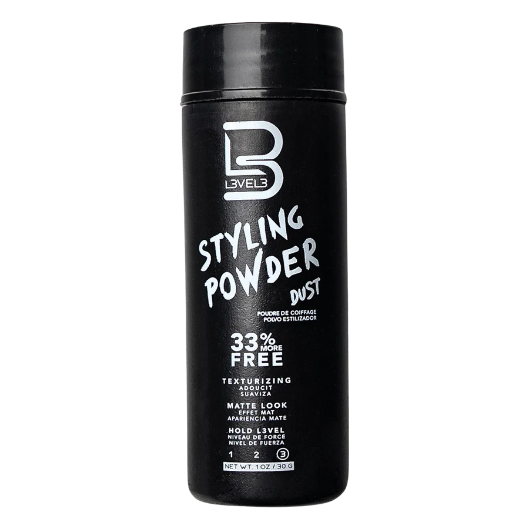
עיצוב שיער
אבקת נפח
נפח חזק, אחיזה נבנית וגימור מאט בלתי נראה
ברקוד: E850016995155מחיר צרכן: ₪99גודל: 30 גרם
לצפייה ורכישה באתר
מדריך מקצועי מלא
אבקת נפח
נפח חזק, אחיזה נבנית וגימור מאט בלתי נראה
- רמת אחיזה: חזקה, ניתנת לבנייה.
- גימור: מאט ובלתי נראה.
- יוצרת נפח והרמה מיידית בשורש.
- סופחת עודפי שומן ומעניקה תחושה נקייה ורעננה.
- מוסיפה גריפ וטקסטורה לתסרוקות שצריכות להחזיק נגד כוח הכובד.
- מתאימה לכל סוגי השיער, ובמיוחד לשיער חלק ודק שצריך גובה.
- המראה נשאר טבעי לחלוטין, ללא ברק וללא שאריות נראות לעין.
- מבוססת על רכיבים סופחי שומן שמוסיפים נפח בצורה נקייה.
- מעניקה אחיזה בלתי נראית בלי תחושת כימיקלים כבדה.
אופן שימוש
- להשתמש על שיער יבש ומעוצב, רצוי אחרי פן לתוצאה גבוהה יותר.
- לפזר כמות קטנה על קצות האצבעות או ישירות באזור השורש.
- לעבוד עם האצבעות לתוך השורשים ולהרים את השיער כלפי מעלה.
- לבנות בהדרגה. מעט חומר מספיק להרבה תוצאה.
- להוסיף נקודתית באזורים שצריכים הרמה נוספת.
טיפים מקצועיים
- בקבוק פיזור לאבקה יכול לעזור ביישום מדויק ואחיד יותר.
- אפשר להניח מתחת לספריי שיער לקיבוע לאורך כל היום בלי לאבד מראה טבעי.
- שילוב עם מוצר מאט בקצוות יוצר טקסטורה חתוכה ומראה מלא יותר.
- מעולה לרענון תסרוקת ביום שאחרי ולספיחת שומן בין חפיפות.
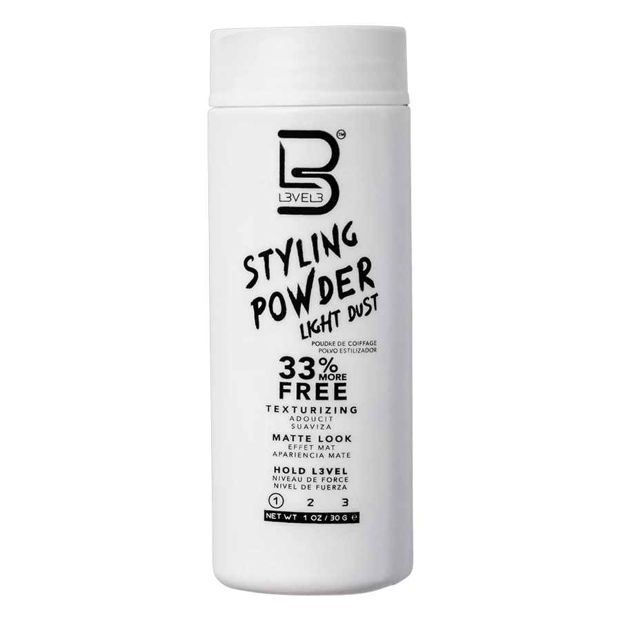
עיצוב שיער
אבקת נפח לייט
נפח קליל, תנועה טבעית וטקסטורה ללא קשיחות
ברקוד: E850036570936מחיר צרכן: ₪99גודל: 30 גרם
לצפייה ורכישה באתר
מדריך מקצועי מלא
אבקת נפח לייט
נפח קליל, תנועה טבעית וטקסטורה ללא קשיחות
- רמת אחיזה: קלה וגמישה.
- גימור: מאט טבעי.
- מוסיפה נפח עדין וטקסטורה בלי קשיחות.
- מתאימה למראה טבעי, פתוח ולא מתאמץ.
- מצוינת לשיער דק או בינוני ולרענון בין חפיפות.
- מתאימה ללקוחות שרוצים תחושת מוצר מינימלית ומראה חי.
- מוסיפה גוף קל בלי הצטברות חומר ובלי מוצר שנראה לעין.
- מתאימה במיוחד למראה יומיומי, חי וטבעי.
אופן שימוש
- להניח על שיער יבש באזור השורש.
- לעבוד בעדינות עם קצות האצבעות לפיזור אחיד.
- לנער ולעצב לקבלת תנועה טבעית ולא מתאמצת.
- להוסיף במהלך היום לפי הצורך לרענון נפח וטקסטורה.
טיפים מקצועיים
- הגודל הקטן מתאים למכירה ללקוחות שרוצים טאצ׳-אפ במהלך היום.
- אפשר לשלב עם קרם עיצוב ונפח לקבלת מראה גמיש וטקסטורלי.
- מתאימה במיוחד לוילונות, שיער שאגי ותסרוקות עם תנועה טבעית.
- מתאימה למכירה חוזרת כי הלקוח מרגיש תוצאה מהירה וברורה.
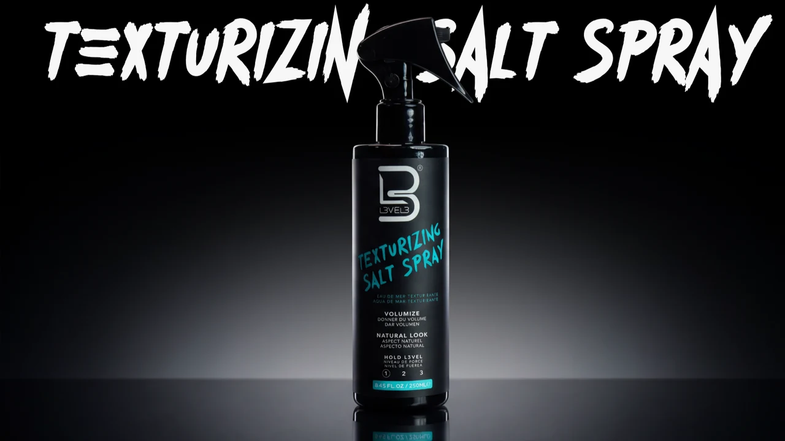
עיצוב שיער
ספריי מלח
גלים טבעיים, גריפ קל ומראה חוף נקי
ברקוד: E810119065131מחיר צרכן: ₪49גודל: 100 מ"לברקוד: E850018251907מחיר צרכן: ₪99גודל: 250 מ"ל
לצפייה ורכישה באתר
מדריך מקצועי מלא
ספריי מלח
גלים טבעיים, גריפ קל ומראה חוף נקי
- רמת אחיזה: קלה עד בינונית וגמישה.
- גימור: טבעי, מאט ובעל טקסטורה עדינה.
- יוצר גלים טבעיים וטקסטורה של אחרי ים בלי תחושת חול או כבדות.
- מוסיף גריפ וגוף לשיער דק, שטוח או חסר נפח.
- מינרלי מלח ים מעניקים אחיזה טבעית ללא תחושת קשיחות.
- מדגיש דפוסי גל ותלתול טבעיים ומוסיף תנועה חופשית.
- ויטמין אי ממקור צמחי מסייע בהגנה על השיער מנזקי שמש.
אופן שימוש
- לנער היטב לפני כל שימוש.
- לרסס על שיער לח או יבש ממרחק של כ-15 ס״מ.
- לכווץ את השיער בידיים כדי לעודד היווצרות גלים.
- לייבש באוויר למראה טבעי או עם דיפיוזר לגלים מוגדרים יותר.
- להוסיף שכבות ריסוס לקבלת טקסטורה חזקה יותר.
טיפים מקצועיים
- מתאים כהכנה לפני פן לקבלת גוף ואחיזה.
- אפשר לשלב עם קרם תלתלים לקבלת גלים מוגדרים ולחים יותר.
- מוצר הכנה מצוין לפני צמות או תסרוקות אסופות.
- אפשר להשתמש על שיער יבש לרענון טקסטורה בין עיצובים.
- בחירה טובה ללקוח שרוצה מראה טבעי ולא “מעוצב מדי”.
התאמה לסוגי שיער התאמה מיטבית: שיער חלק וגלי. מתאים גם לשיער מתולתל.
התאמה לסוגי שיער
- התאמה מיטבית: שיער חלק וגלי.
- מתאים גם לשיער מתולתל.
למה זה עובד
ספריי מלח מגביר תנועה טבעית ודפוסי גל, מוסיף גריפ קל וטקסטורה, ויוצר מראה חופשי בסגנון חוף. הוא נותן לשיער תחושת גוף ותנועה בלי להקשיח אותו ובלי להעמיס חומר.
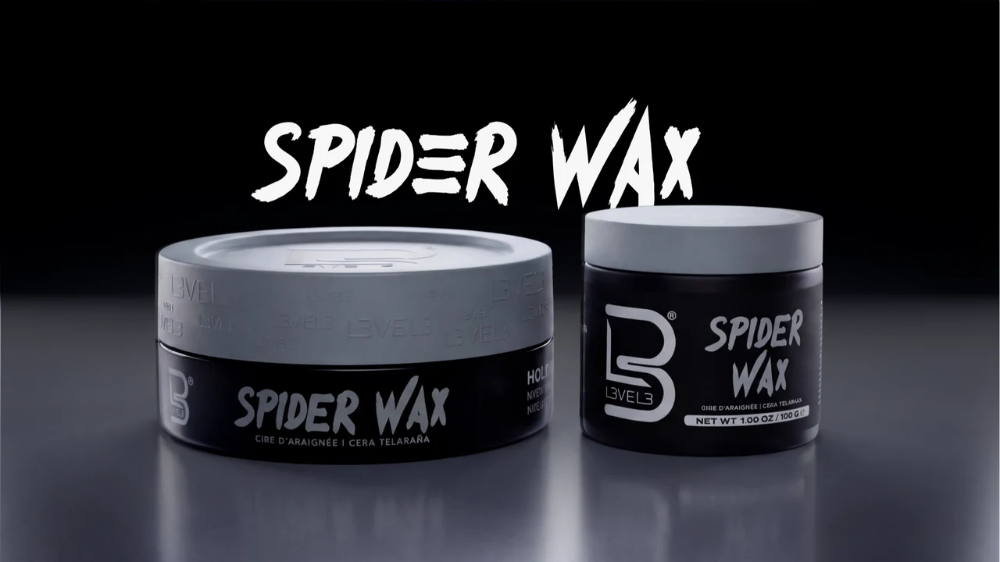
עיצוב שיער
ספיידר ווקס
מרקם סיבי, הפרדה גמישה ושליטה בטקסטורה
ברקוד: E850018251037מחיר צרכן: ₪89גודל: 150 מ"ל
לצפייה ורכישה באתר
מדריך מקצועי מלא
ספיידר ווקס
מרקם סיבי, הפרדה גמישה ושליטה בטקסטורה
- רמת אחיזה: בינונית עד חזקה וגמישה.
- גימור: מאט עד ברק טבעי עדין.
- פורמולה סיבית נמתחת לפיזור קל ואחיד.
- יוצר הפרדה, הגדרה וטקסטורה ללא קשיחות.
- מתאים לקוצים מבולגנים, תספורות טקסטורליות וסגנונות מודרניים.
- האחיזה נשארת גמישה ומאפשרת עיצוב מחדש במהלך היום.
- שעוות דבורים מעניקה אחיזה טבעית ושומרת על תחושת שיער רכה.
- שמן קיק מוסיף לחות בזמן העיצוב ומפחית תחושה יבשה.
אופן שימוש
- לקחת כמות קטנה בגודל אפונה בקצות האצבעות.
- לשפשף בין כפות הידיים עד שהמרקם הסיבי נפתח.
- למרוח על שיער יבש או מעט לח, מאמצע האורך ועד הקצוות.
- למשוך ולסובב קווצות לקבלת הפרדה וטקסטורה.
- לעדן את הצורה עם מסרק או אצבעות.
טיפים מקצועיים
- המרקם הסיבי מקל על פיזור אחיד גם בכמות קטנה.
- אפשר לעבד מחדש במהלך היום עם כמות קטנה נוספת.
- שילוב טוב מעל אבקת נפח לשורש מורם וקצוות טקסטורליים.
- מתאים ללקוח שרוצה מראה טבעי אבל בשליטה.
- מצוין למראה “לא מתאמץ” שעדיין שומר על מבנה ברור.
התאמה לסוגי שיער התאמה מיטבית: שיער חלק וגלי. מתאים גם לשיער מתולתל.
התאמה לסוגי שיער
- התאמה מיטבית: שיער חלק וגלי.
- מתאים גם לשיער מתולתל.
למה זה עובד
המרקם הסיבי יוצר הפרדה גמישה והגדרה בלי קשיחות. הוא מאפשר לשלוט בקצוות ובאזורים טקסטורליים, לשמור על תנועה טבעית, ולרענן את הצורה במהלך היום בלי להתחיל מחדש.
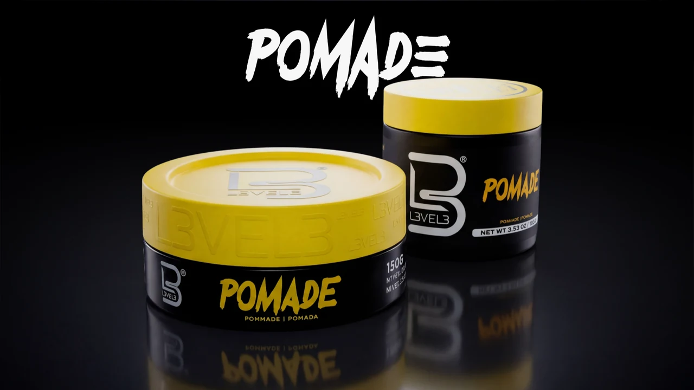
עיצוב שיער
פומייד
אחיזה חזקה, ברק גבוה ומראה מסורק מלוטש
ברקוד: E850018251006מחיר צרכן: ₪89גודל: 150 מ"ל
לצפייה ורכישה באתר
מדריך מקצועי מלא
פומייד הוא מוצר מפתח למראה ברברשופ קלאסי. הפורמולה המסיסה במים מעניקה ברק גבוה ואחיזה חזקה, שומרת על שיער מסודר ומלוטש, ומתאימה במיוחד למראות וינטג׳, אירועים רשמיים וסגנונות מוקפדים.
פומייד
אחיזה חזקה, ברק גבוה ומראה מסורק מלוטש
- רמת אחיזה: חזקה עד קיצונית.
- גימור: ברק גבוה.
- יוצר מראה חלק, מסודר ומבריק שמחזיק לאורך היום.
- מתאים לסליק-בק, פומפדור, שביל צד וסגנונות וינטג׳.
- פורמולה מסיסה במים לשטיפה קלה ונוחה.
- לנולין מעניק לחות עמוקה וברק נקי.
- ויטמין אי ממקור צמחי מסייע בהגנה על השיער בשימוש יומיומי.
אופן שימוש
- לקחת כמות קטנה בקצות האצבעות.
- לחמם ולרכך בין כפות הידיים עד לפיזור אחיד.
- למרוח על שיער לח או יבש מהשורש ועד הקצוות.
- להשתמש במסרק למראה מלוטש או באצבעות למראה רגוע יותר.
- לעצב ולפסל לצורה הרצויה.
- לסיום עמיד במיוחד, ניתן לקבע עם ספריי פריז.
טיפים מקצועיים
- להברקה ואחיזה מקסימלית, למרוח על שיער מעט לח.
- אפשר לשלב עם ג׳ל שיער כבסיס לפומפדור באחיזה קיצונית.
- בחירה קלאסית לאירועים רשמיים, מראות וינטג׳ וצילומי אופנה.
התאמה לסוגי שיער התאמה מיטבית: שיער חלק וגלי. מתאים גם לשיער מתולתל.
התאמה לסוגי שיער
- התאמה מיטבית: שיער חלק וגלי.
- מתאים גם לשיער מתולתל.
למה זה עובד
פומייד מחליק ושולט בשיער תוך יצירת מבנה קלאסי, מבריק ומסודר. הוא מתאים ללקוחות שרוצים מראה נקי, אלגנטי וברור שנשאר במקום.
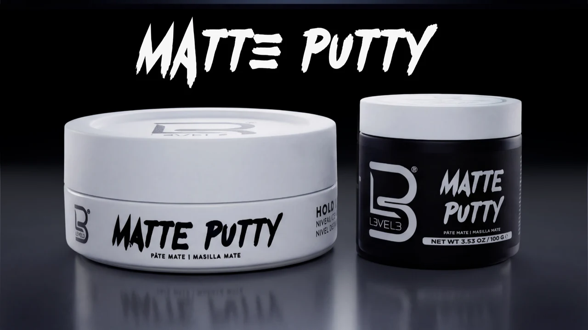
עיצוב שיער
קרם חימר
גימור מאט, טקסטורה חזקה ומראה טבעי ללא ברק
ברקוד: E810119061744מחיר צרכן: ₪99גודל: 150 מ"ל
לצפייה ורכישה באתר
מדריך מקצועי מלא
קרם חימר מיועד למראה טבעי ולא מתאמץ עם טקסטורה ואחיזה אמיתית. הוא נשאר כמעט בלתי נראה: בלי ברק, בלי שאריות ובלי תחושת מוצר כבדה. זה פתרון מודרני ללקוחות שרוצים שליטה בלי לוותר על מראה טבעי.
קרם חימר
גימור מאט, טקסטורה חזקה ומראה טבעי ללא ברק
- רמת אחיזה: בינונית עד חזקה.
- גימור: מאט אמיתי, ללא ברק.
- מעניק טקסטורה והגדרה עם מראה נקי וטבעי.
- מתאים לקרופים טקסטורליים, סגנונות מבולגנים ותספורות מודרניות.
- עובד על כל סוגי השיער, ובמיוחד טוב לשיער עבה.
- חימר קאולין טבעי סופח שמן למראה ללא מוצר.
- שעוות דבורים מעניקה אחיזה שניתן לעבד מחדש לאורך היום.
אופן שימוש
- לקחת כמות קטנה בקצות האצבעות.
- לחמם היטב בין כפות הידיים עד לפיזור אחיד.
- למרוח על שיער יבש, בעיקר באמצע האורך ובקצוות.
- לעצב באצבעות לקבלת טקסטורה, הפרדה והגדרה.
- לרענן ולעצב מחדש לפי הצורך במהלך היום.
טיפים מקצועיים
- מתאים ללקוחות שלא אוהבים להיראות כאילו השתמשו במוצר.
- אפשר להניח אבקת נפח בשורש ואז קרם חימר בקצוות.
- חשוב לחמם היטב בכפות הידיים לפיזור קל ואחיד יותר.
- מעולה למראה “קמתי ככה” אבל עם אחיזה אמיתית.
התאמה לסוגי שיער התאמה מיטבית: שיער חלק וגלי. מתאים גם לשיער מתולתל.
התאמה לסוגי שיער
- התאמה מיטבית: שיער חלק וגלי.
- מתאים גם לשיער מתולתל.
למה זה עובד
קרם חימר מוסיף טקסטורה ושליטה חזקה בלי ברק. הוא שומר על מראה טבעי ומודרני, ומאפשר ליצור תסרוקת שנראית חופשית אבל נשארת בשליטה.
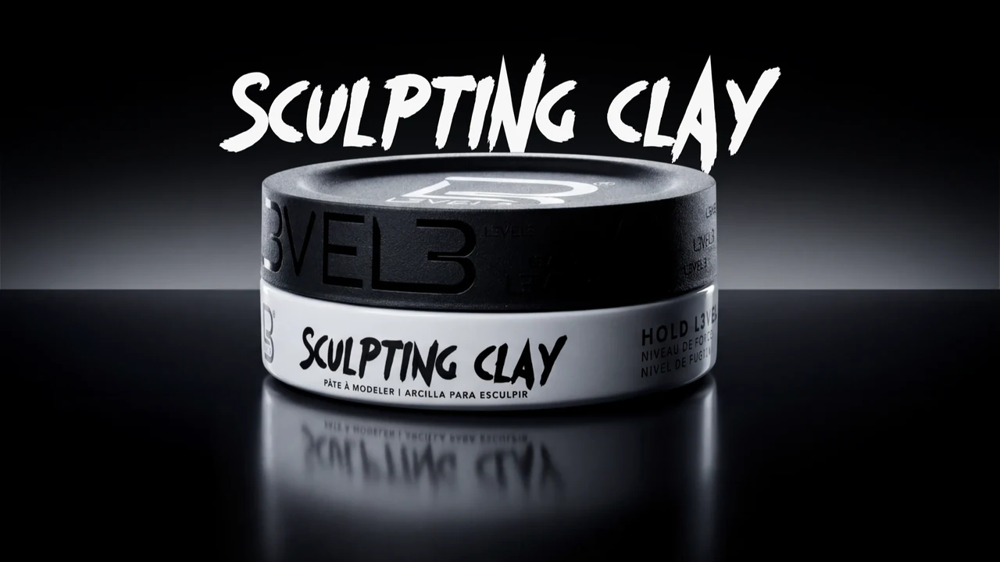
עיצוב שיער
חימר
אחיזה חזקה, מבנה מדויק וגימור מאט נקי
ברקוד: E810119061737מחיר צרכן: ₪99גודל: 150 מ"ל
לצפייה ורכישה באתר
מדריך מקצועי מלא
חימר מיועד למבנה ושליטה. הפורמולה הדחוסה והמאטית מעניקה אחיזה חזקה ומבוקרת לסגנונות חדים ומוגדרים שצריכים להישאר במקום. בסיס החימר מסייע בספיחת שומן, מוסיף עובי וטקסטורה ומתאים במיוחד לתספורות קצרות ומדויקות.
חימר
אחיזה חזקה, מבנה מדויק וגימור מאט נקי
- רמת אחיזה: חזקה.
- גימור: מאט.
- פורמולה דחוסה מבוססת חימר לאחיזה רצינית.
- מתאים לסגנונות מובנים, אדריכליים ומדויקים.
- סופח שומן ומוסיף נפח וטקסטורה.
- מעניק אחיזה חזקה עם אפס ברק.
- מוסיף טקסטורה נקייה בלי לייבש את המראה.
אופן שימוש
- לקחת כמות קטנה. המוצר מרוכז ולכן מעט מספיק.
- לעבוד בין כפות הידיים עד שהחומר מתרכך ומתפזר.
- למרוח על שיער יבש, בעיקר באזורים שצריכים מבנה.
- לפסל ולעצב לצורה הרצויה.
- אפשר להשתמש בפן על קור כדי לקבע את הסגנון.
טיפים מקצועיים
- מעולה ליצירת צורות חדות בתספורות קצרות.
- הגימור המאט משתלב היטב עם צדדים מדורגים וטופ טקסטורלי.
- אפשר להשתמש כפריסטיילר לפני פן לתוספת גוף ושליטה.
- מתאים כשצריך הפרדה נקייה, אפס ברק ושליטה רצינית.
התאמה לסוגי שיער התאמה מיטבית: שיער חלק וגלי. מתאים גם לשיער מתולתל.
התאמה לסוגי שיער
- התאמה מיטבית: שיער חלק וגלי.
- מתאים גם לשיער מתולתל.
למה זה עובד
חימר מעניק מבנה דחוס ואחיזה ארוכה לסגנונות חדים. הוא יוצר שליטה חזקה וטקסטורה נקייה בלי ברק, ולכן מתאים במיוחד למראה מדויק ומקצועי.
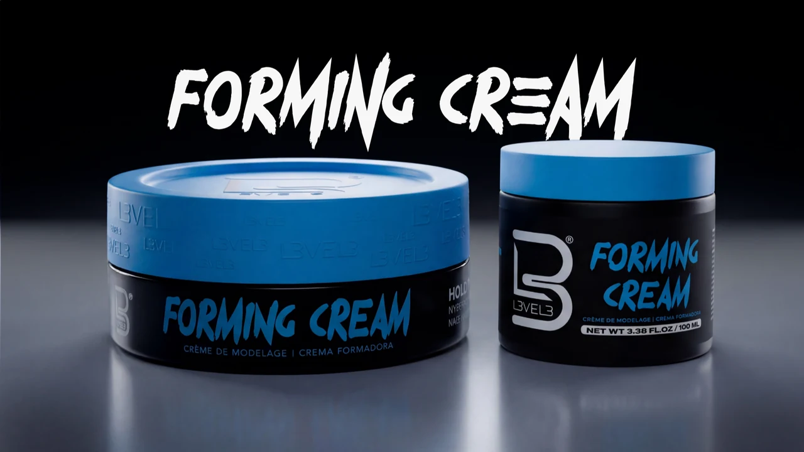
עיצוב שיער
קרם עיצוב ונפח
אחיזה גמישה, ברק טבעי ושליטה ללא כובד
ברקוד: E850018251044מחיר צרכן: ₪89גודל: 150 מ"ל
לצפייה ורכישה באתר
מדריך מקצועי מלא
קרם עיצוב ונפח הוא מוצר רב-שימושי שמאזן בין לחות, שליטה וגמישות. הוא מעניק טקסטורה קלה, ברק טבעי ואחיזה שניתן לעבד מחדש, בלי להכביד על השיער ובלי ליצור מראה קשיח.
קרם עיצוב ונפח
אחיזה גמישה, ברק טבעי ושליטה ללא כובד
- רמת אחיזה: בינונית וגמישה.
- גימור: ברק טבעי ועדין.
- פורמולה קלילה שמעניקה שליטה בלי להכביד.
- מוסיף מראה בריא, טבעי ומטופח לשיער.
- מאפשר תנועה ועיצוב מחדש לאורך היום.
- רכיבים צמחיים מסייעים לשמור על לחות ונוחות בשיער.
- מתאים במיוחד ללקוח שרוצה מוצר ראשון שקל להשתמש בו.
אופן שימוש
- להוציא כמות קטנה בקצות האצבעות.
- לחמם בין כפות הידיים עד שהקרם מתפזר באופן אחיד.
- למרוח על שיער לח או יבש ולעבוד לכל האורך לפי הצורך.
- לעצב באצבעות למראה חופשי או במסרק למראה מסודר יותר.
- לעדכן ולעצב מחדש במהלך היום בלי להעמיס חומר.
טיפים מקצועיים
- אחד המוצרים הוורסטיליים בקו ומתאים כמעט לכל לקוח.
- למרוח על שיער לח לפני פן לקבלת גימור מלוטש ומבוקר.
- אפשר לערבב עם אבקת נפח לתוספת טקסטורה עם ברק טבעי.
- מצוין כלקוח מתחיל שלא רגיל להשתמש במוצרי עיצוב.
התאמה לסוגי שיער התאמה מיטבית: שיער גלי ומתולתל. מתאים גם לשיער חלק.
התאמה לסוגי שיער
- התאמה מיטבית: שיער גלי ומתולתל.
- מתאים גם לשיער חלק.
למה זה עובד
קרם עיצוב ונפח מאזן בין לחות לשליטה. הוא שומר על תנועה טבעית, מעניק גימור רך ומסודר, ומתאים לסגנונות שצריכים להישאר גמישים ולא נוקשים.
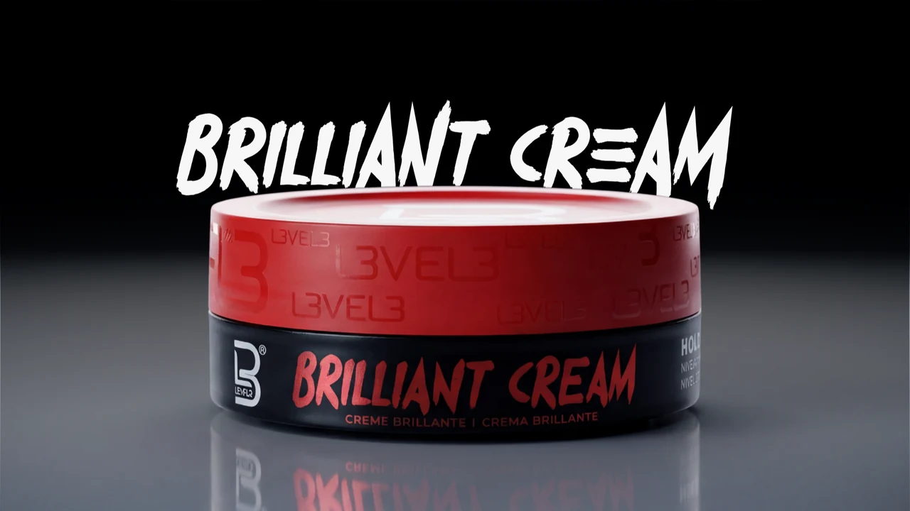
עיצוב שיער
קרם ברק שייפר
ברק מקסימלי, שליטה בפריז ולחות לשיער יבש
ברקוד: E850018251303מחיר צרכן: ₪89גודל: 150 מ"ל
לצפייה ורכישה באתר
מדריך מקצועי מלא
קרם ברק שייפר מיועד להעניק לשיער ברק מיידי, החלקה וריכוך בלי אחיזה כבדה. הוא מתאים כשכבת סיום מעל מוצרי עיצוב אחרים או כטיפול ברק עצמאי לשיער יבש, עמום, גס או מתולתל.
קרם ברק שייפר
ברק מקסימלי, שליטה בפריז ולחות לשיער יבש
- רמת אחיזה: קלה.
- גימור: ברק גבוה ומבריק.
- מעניק ברק מקסימלי ללא אחיזה כבדה.
- מחליק ומרכך את השיער למראה בריא ומטופח.
- מתאים לסגנונות חלקים, מסודרים ומבריקים.
- עובד כמוצר סיום או כטיפול ברק בפני עצמו.
- שמן ארגן מסייע בברק ובשליטה בפריז.
- חמאת שיאה מעניקה לחות עמוקה עם ויטמינים טבעיים.
אופן שימוש
- להוציא כמות קטנה לכפות הידיים.
- לשפשף בין הידיים לפיזור אחיד.
- למרוח על שיער יבש, בעיקר מאמצע האורך ועד הקצוות.
- להחליק לאורך השיער לקבלת ברק מיידי ושליטה בפריז.
- להתחיל בכמות קטנה ולהוסיף בהדרגה לפי הצורך.
טיפים מקצועיים
- מושלם כנגיעה אחרונה לכל תסרוקת שצריכה יותר ברק.
- אפשר להניח מעל מוצרים אחרים כדי להוסיף גלוס בלי לשנות אחיזה.
- מתאים במיוחד ללקוחות עם שיער יבש, עמום, גס או מקורזל.
- מעט חומר עושה הרבה עבודה, לכן חשוב להתחיל בכמות קטנה.
התאמה לסוגי שיער התאמה מיטבית: שיער מתולתל ומקורזל. מתאים גם לשיער גלי.
התאמה לסוגי שיער
- התאמה מיטבית: שיער מתולתל ומקורזל.
- מתאים גם לשיער גלי.
למה זה עובד
קרם ברק שייפר משפר ברק ורכות בזמן שהוא מטפל בתחושת יובש ופריז. הוא מתאים במיוחד לשיער שצריך גימור חלק, זוהר ומטופח בלי להפוך את התסרוקת לכבדה.
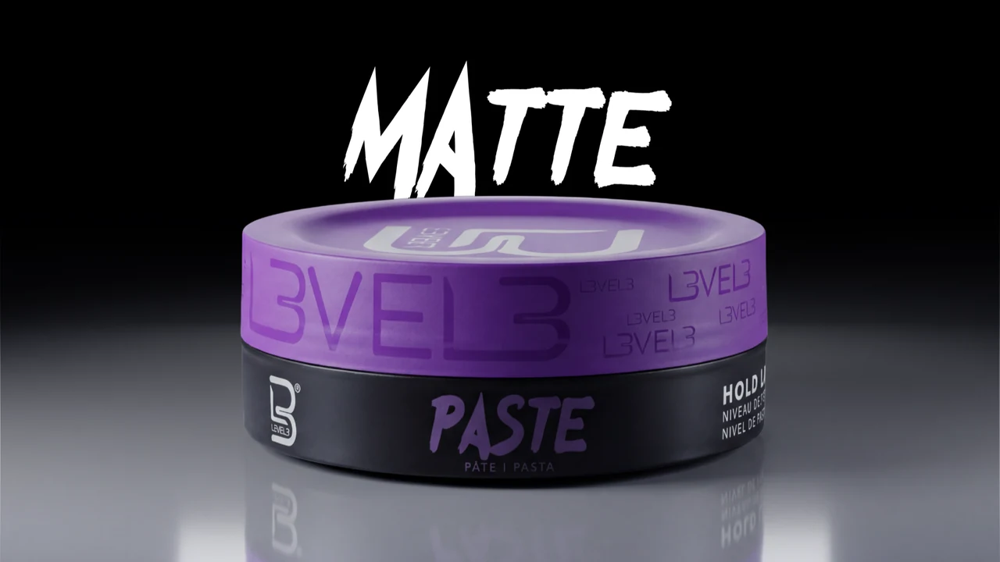
עיצוב שיער
פסטה
טקסטורה מאטית, הגדרה נקייה ואחיזה יומיומית
ברקוד: E850018251020מחיר צרכן: ₪89גודל: 150 מ"ל
לצפייה ורכישה באתר
מדריך מקצועי מלא
פסטה משלבת תחושת מוצר קלאסית עם גימור מאט מודרני. היא מעניקה טקסטורה, הגדרה ושליטה שניתן לעבד מחדש לאורך היום, ומתאימה ללקוחות שרוצים מראה טבעי, מקצועי ונקי ללא ברק.
פסטה
טקסטורה מאטית, הגדרה נקייה ואחיזה יומיומית
- רמת אחיזה: בינונית עד חזקה.
- גימור: מאט.
- פורמולת פסטה מסורתית עם גימור מאט מודרני.
- מספקת טקסטורה והגדרה לשיער קצר ובינוני.
- ניתנת לעיבוד מחדש לאורך היום.
- יוצרת מראה טבעי וללא תחושת מוצר בולטת.
- שעוות דבורים מוסיפה טקסטורה ואחיזה טבעית.
- חימר טבעי מעניק גימור מאט נקי.
אופן שימוש
- להוציא כמות קטנה לכפות הידיים.
- לשפשף היטב בין הידיים עד לפיזור אחיד.
- למרוח על שיער יבש, בעיקר באמצע האורך ובקצוות.
- לעבוד באצבעות לקבלת טקסטורה והפרדה.
- להוסיף מעט חומר לפי הצורך באזורים שצריכים הגדרה.
טיפים מקצועיים
- מוצר בסיסי לכל עמדת עבודה במספרה.
- אפשר לשלב עם ספריי שיער לקיבוע ארוך יותר של טקסטורה מאטית.
- מתאים לתספורות קצרות שצריכות הגדרה ללא ברק.
- עובד טוב על שיער עבה או גס שמוצרים קלים לא מחזיקים בו.
התאמה לסוגי שיער התאמה מיטבית: שיער חלק וגלי. מתאים גם לשיער מתולתל.
התאמה לסוגי שיער
- התאמה מיטבית: שיער חלק וגלי.
- מתאים גם לשיער מתולתל.
למה זה עובד
פסטה מספקת שליטה מאטית אמינה למראה נקי ומקצועי. היא מאפשרת להגדיר את הצורה בלי להבריק ובלי להקשיח מדי את השיער.
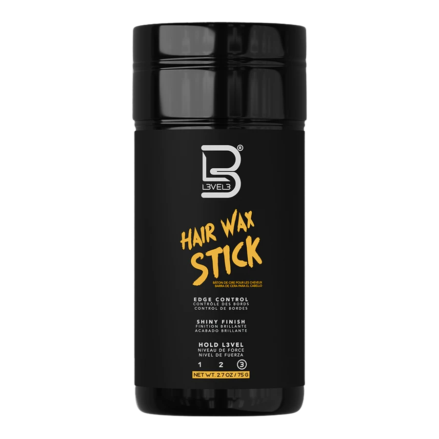
עיצוב שיער
סטיק שעווה לשיער
אחיזה חזקה וגמישה · גימור מבריק · מריחה מדויקת
ברקוד: E810119063304מחיר צרכן: ₪99גודל: 75 גרם
לצפייה ורכישה באתר
מדריך מקצועי מלא
סטיק שעווה בפורמט סובב-נפתח למריחה ישירה ומדויקת על השיער. נותן שליטה חלקה, מאלף קצוות ופורחות, ומוסיף הגדרה וברק — בלי שאריות דביקות. כלי מושלם לתיקוני סטייל מהירים לאורך היום.
סטיק שעווה לשיער
אחיזה חזקה וגמישה · גימור מבריק · מריחה מדויקת
- פורמט סטיק סובב-נפתח למריחה ממוקדת ונקייה.
- אחיזה חזקה שמשאירה גמישות לאורך היום.
- גימור חלק ומבריק למראה מטופח.
- מאלף קצוות, מחליק פורחות ומוסיף הגדרה.
- ללא שאריות דביקות.
- אידיאלי לתספורות קצרות; עובד גם על שיער ארוך לשליטה וברק.
- נוח לנשיאה ולתיקוני סטייל מהירים.
התאמה לסוגי שיער מתאים לכל סוגי השיער. מצוין במיוחד לתספורות קצרות ולשליטה בקצוות.
התאמה לסוגי שיער
- מתאים לכל סוגי השיער.
- מצוין במיוחד לתספורות קצרות ולשליטה בקצוות.
למה זה עובד
הפורמט הממוקד מאפשר למרוח שעווה בדיוק במקום הנכון — קצוות, קווי מתאר ופורחות — לקבלת מראה נקי, מוגדר ומבריק שמחזיק לאורך היום.
אופן שימוש
- לסובב את בסיס הסטיק כדי להוציא מעט מוצר.
- למרוח בעדינות על הקצוות או על האזורים שדורשים הגדרה.
- לעצב ולסדר את השיער לצורה הרצויה לגימור מבריק.
- לבצע תיקוני סטייל מהירים לפי הצורך במהלך היום.
טיפים מקצועיים
- מצוין לסידור קווי מתאר ופאות אחרי תספורת.
- שכבה דקה מספיקה — אפשר להוסיף בהדרגה לשליטה חזקה יותר.
- כלי מכירה נוח: מוצר קומפקטי לנשיאה ולשימוש מהיר בכיסא.
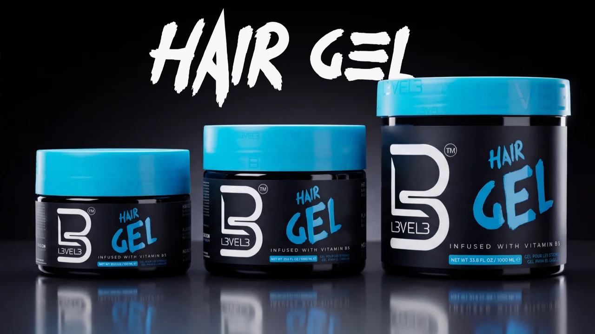
עיצוב שיער
ג'ל שיער חזק במיוחד
אחיזה חזקה עד קיצונית, ברק גבוה ומראה רטוב
ברקוד: E850018251051מחיר צרכן: ₪69גודל: 250 מ"ל
לצפייה ורכישה באתר
מדריך מקצועי מלא
ג׳ל שיער חזק במיוחד מיועד לשליטה מקצועית, ברק גבוה ומבנה ברור. הוא מתאים ממראות רטובים ועד סגנונות מפוסלים, ונותן לספרים וללקוחות מוצר מדויק לתוצאה חזקה שנשארת במקום.
ג'ל שיער חזק במיוחד
אחיזה חזקה עד קיצונית, ברק גבוה ומראה רטוב
- רמת אחיזה: חזקה עד קיצונית.
- גימור: ברק גבוה ומראה רטוב.
- אחיזה מקצועית שמחזיקה לאורך היום.
- גימור מבריק למראה מלוטש ומוקפד.
- מתייבש יציב כאשר משתמשים בו נכון, בלי תחושת שבירה מוגזמת.
- מסיס במים ונשטף בקלות.
- אלוורה מסייעת בלחות ובהרגעת הקרקפת.
- ויטמין בי 5 מסייע בחיזוק מראה סיב השערה.
התאמה לסוגי שיער התאמה מיטבית: שיער מקורזל ומתולתל. מתאים גם לשיער גלי.
התאמה לסוגי שיער
- התאמה מיטבית: שיער מקורזל ומתולתל.
- מתאים גם לשיער גלי.
למה זה עובד
ג׳ל שיער חזק במיוחד יוצר מבנה חזק וברק לסגנונות מפוסלים ומבוססי גלים. הוא מתאים כאשר צריך שליטה ברורה, גימור מבריק ותוצאה שנשארת במקום.
אופן שימוש
- להוציא את המוצר לכפות הידיים.
- לפזר באופן אחיד על שיער לח או רטוב.
- לסרק או להבריש לצורה הרצויה.
- לתת להתייבש באוויר או להשתמש בפן לקיבוע מהיר יותר.
- לתוספת ברק, להוסיף כמות קטנה על תסרוקת יבשה ומוכנה.
טיפים מקצועיים
- גודל גדול מתאים במיוחד למספרות עם נפח עבודה גבוה.
- למראה רטוב קלאסי שנשאר מבריק, למרוח על שיער רטוב מאוד.
- אפשר לשלב עם פומייד לאחיזה חזקה במיוחד במראות פומפדור.
- בסיס טוב לפני נגיעות סיום עם מוצרי עיצוב אחרים.
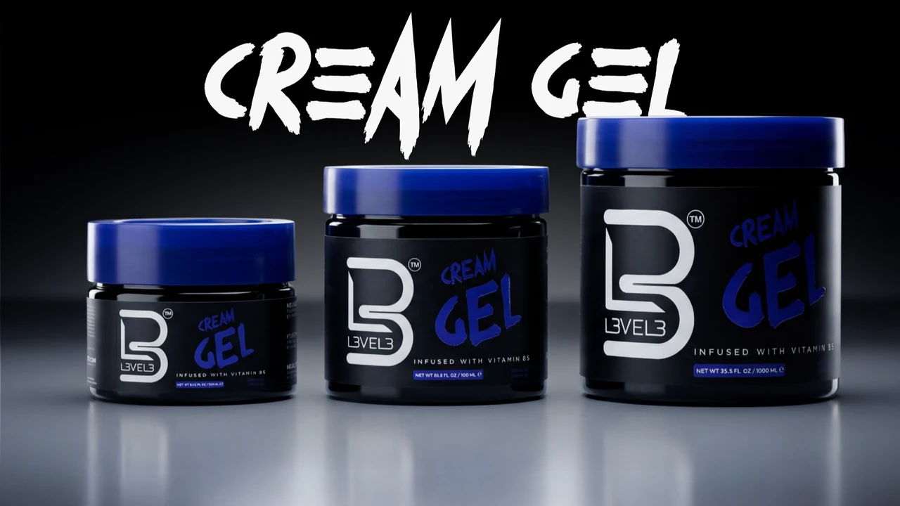
עיצוב שיער
ג'ל-קרם לחות
אחיזה בינונית, גימור טבעי, ברק עדין ותחושת לחות
ברקוד: E850018251747מחיר צרכן: ₪89גודל: 250 מ"ל
לצפייה ורכישה באתר
מדריך מקצועי מלא
קרם ג׳ל הוא מוצר ביניים חכם ללקוח שרוצה שיער מסודר ומטופח, אבל לא אוהב תחושה נוקשה של ג׳ל קלאסי. הפורמולה נותנת שליטה יומיומית, לחות וגמישות, עם גימור טבעי שנראה נקי במספרה ונשאר נוח גם אחרי שהלקוח יוצא ליום עבודה.
ג'ל-קרם לחות
אחיזה בינונית, גימור טבעי, ברק עדין ותחושת לחות
- רמת אחיזה: בינונית.
- גימור: ברק טבעי ועדין.
- פורמולה היברידית שמחברת טיפוח של קרם עם אחיזה של ג׳ל.
- מעניק גימור טבעי שלא נראה מעוצב מדי.
- לא מתפורר ולא משאיר שאריות לבנות.
- מתאים לסגנונות יום-יומיים שצריכים שליטה רכה.
- ויטמין E ממקור צמחי מסייע בהגנה בזמן העיצוב.
- אלוורה מוסיפה לחות צמחית נקייה ללא תחושה אגרסיבית.
- בחירה מצוינת ללקוחות שרוצים מוצר אחד שמטפל, מסדר ומרענן את המראה.
אופן שימוש מקצועי
- למרוח על שיער לח או יבש.
- להתחיל בכמות קטנה בגודל מטבע ולהוסיף לפי צפיפות ואורך השיער.
- לעבוד עם האצבעות לקבלת טקסטורה טבעית ורכה.
- להשתמש במסרק כאשר רוצים קווים ברורים וסגנון מוגדר יותר.
- לעצב לפי הצורך; הסגנון נשאר גמיש ונעים למגע לאורך היום.
- על שיער לח מתקבל גימור נקי ומסודר יותר; על שיער יבש מתקבלת טקסטורה טבעית יותר.
טיפים מקצועיים
- מוצר פתיחה מצוין ללקוחות שחוששים מג׳לים קשיחים מדי.
- רכיב הקרם מוסיף לחות ולכן מתאים במיוחד לשיער יבש.
- מתאים למראות סליק-בק שצריכים תנועה טבעית ולא קסדה.
- משתלב היטב עם ספריי גמר Natural Lock לתוספת אחיזה בלי קשיחות.
- אפשר להציע אותו כמוצר ביתי ללקוחות שמבקשים מראה מסודר לעבודה בלי להרגיש "מוצר בשיער".
התאמה לסוגי שיער התאמה מיטבית: שיער מתולתל וגלי. מתאים גם לשיער חלק.
התאמה לסוגי שיער
- התאמה מיטבית: שיער מתולתל וגלי.
- מתאים גם לשיער חלק.
למה זה עובד
הקרם מוסיף לחות וגמישות, והג׳ל מספק שליטה. השילוב יוצר תוצאה טבעית, נקייה ונעימה למגע, בלי מראה קשיח או שאריות. מבחינה מסחרית זה מוצר שקל להסביר ללקוח: מסדר את השיער, שומר על מראה מטופח ומרגיש קל לאורך היום.
הצעת מכירה
- להציע ללקוחות עם שיער יבש, גלי או מתולתל שרוצים סדר בלי כובד.
- להדגים במספרה כמות קטנה על השיער כדי להראות את ההבדל במגע ובברק.
- להציג כמוצר שימוש יומיומי ולא רק כמוצר לעיצוב ערב.
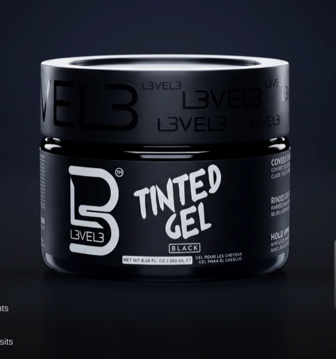
עיצוב שיער
ג'ל שחור צובע
כיסוי זמני לשיבה, אחיזה בינונית וגימור טבעי
ברקוד: E850018251402מחיר צרכן: ₪69גודל: 250 מ"ל
לצפייה ורכישה באתר
מדריך מקצועי מלא
ג׳ל שחור צובע נותן פתרון מהיר ללקוחות שרוצים טשטוש שיער שיבה או חיזוק גוון טבעי בלי התחייבות לצבע קבוע. הוא משלב אחיזה נוחה, גימור טבעי והפקדת צבע זמנית שנשטפת בשמפו.
ג'ל שחור צובע
כיסוי זמני לשיבה, אחיזה בינונית וגימור טבעי
- רמת אחיזה: בינונית.
- גימור: טבעי עם הפקדת צבע.
- מספק אחיזה תוך הוספת צבע זמני.
- מסייע בכיסוי שיער שיבה ובהדגשת הצבע הטבעי.
- נשטף בקלות בשמפו.
- מתאים לתיקוני צבע מהירים בין ביקורים במספרה.
- ויטמין בי 5 ממקור צמחי מסייע במראה שיער חזק יותר בזמן הכיסוי.
- אלוורה מרגיעה את הקרקפת ומאפשרת מריחה חלקה.
אופן שימוש
- למרוח על שיער לח, במיוחד באזורים שדורשים כיסוי.
- לסרק היטב לפיזור אחיד של הצבע.
- לעצב לפי המראה הרצוי.
- הצבע יורד בחפיפה הבאה בשמפו.
טיפים מקצועיים
- שירות תוספת מצוין: להציע טשטוש שיבה בזמן תור רגיל.
- מתאים ללקוחות שלא מוכנים להתחייב לצבע קבוע.
- אפשר להשתמש גם בזקן לטשטוש שיבה בשיער הפנים.
- מוצר ריטייל טוב ללקוחות שרוצים תחזוקת צבע בין ביקורים.
התאמה לסוגי שיער התאמה מיטבית: שיער חלק וגלי. מתאים גם לשיער מתולתל.
התאמה לסוגי שיער
- התאמה מיטבית: שיער חלק וגלי.
- מתאים גם לשיער מתולתל.
למה זה עובד
המוצר מוסיף צבע זמני תוך שמירה על אחיזה נוחה וגימור טבעי. הוא נותן פתרון מסחרי ברור ללקוח שרוצה להיראות מטופח מיד, בלי תהליך צבע מלא.
קולקציית התלתלים — הגדרה, לחות וטקסטורה
סדרת Red Line של L3VEL3 מביאה פתרונות ייעודיים לשיער גלי, מתולתל, מקורזל וקוילי: הגדרת תלתלים, התרת קשרים, אחיזה גמישה וברק — לכל מוצר תפקיד ברור, בלי קשיחות ובלי כובד.
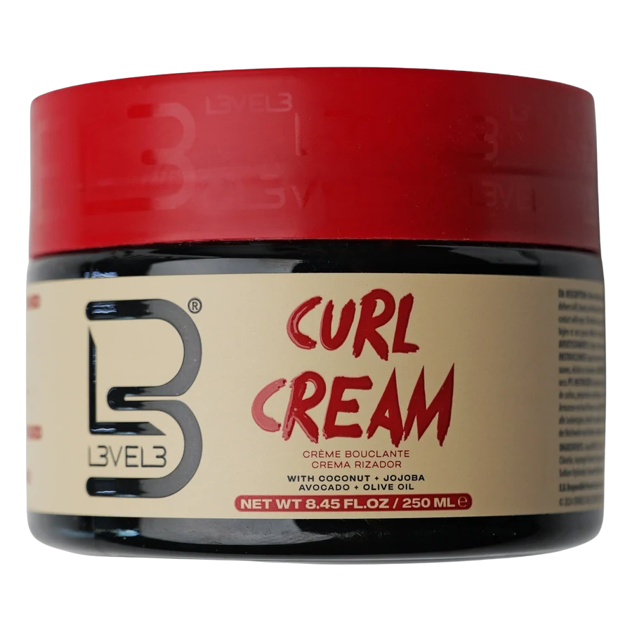
עיצוב שיער
קרם תלתלים
אחיזה קלה–בינונית · גימור טבעי ומוגדר
ברקוד: E810119065087מחיר צרכן: ₪99גודל: 250 מ"ל
לצפייה ורכישה באתר
מדריך מקצועי מלא
קרם תלתלים מסדרת Red Line מגדיר ומחזק תלתלים טבעיים, מפחית קרזול ומעניק לחות עשירה. הפורמולה עם חמאת שיאה ושמן קוקוס מזינה את התלתל ומעודדת יצירת תבנית — למראה מוגדר, רך וטבעי בלי קשיחות.
קרם תלתלים
אחיזה קלה–בינונית · גימור טבעי ומוגדר
- מגדיר ומחזק תלתלים טבעיים.
- מפחית קרזול (פריז) ומוסיף לחות.
- מזין את התלתל ומעודד יצירת תבנית.
- חמאת שיאה — לחות פרימיום לתלתלים.
- שמן קוקוס — לחות בלי משקל.
- מתאים לכל סוגי השיער המתולתל.
התאמה לסוגי שיער מיטבי לשיער גלי, מתולתל, מקורזל וקוילי. מצוין להחזרת טקסטורה טבעית לשיער גלי.
התאמה לסוגי שיער
- מיטבי לשיער גלי, מתולתל, מקורזל וקוילי.
- מצוין להחזרת טקסטורה טבעית לשיער גלי.
למה זה עובד
חמאת השיאה ושמן הקוקוס נועלים לחות ומזינים את סיב השערה, כך שהתלתל מקבל הגדרה, רכות ותבנית טבעית — בלי כובד ובלי קשיחות.
אופן שימוש
- למרוח על שיער נקי ולח.
- לפזר אחיד מהשורש עד הקצוות.
- ללוש (scrunch) אזורים בידיים לעידוד יצירת תבנית.
- לייבש באוויר או עם דיפיוזר להגדרה.
- לא ללוש כשהשיער יבש כדי למנוע קרזול.
טיפים מקצועיים
- מושלם לשיטת ה‑Curly Method.
- אפשר לשלב עם ספריי מלח לטקסטורת חוף.
- ללוש בעדינות על שיער לח לתוצאה הטובה ביותר.
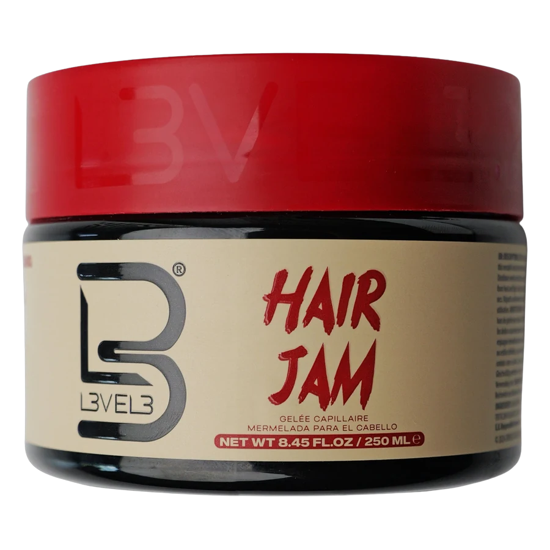
עיצוב שיער
ג'ל תלתלים
אחיזה בינונית–חזקה · ברק גבוה · מרקם 'ריבה'
ברקוד: E810119065094מחיר צרכן: ₪99גודל: 250 מ"ל
לצפייה ורכישה באתר
מדריך מקצועי מלא
ג'ל התלתלים Hair Jam הוא מוצר עיצוב רב‑תכליתי עם מרקם דמוי 'ריבה' ייחודי. נותן אחיזה חזקה וגמישה, ברק גבוה ומראה בריא — כלי בולט שמתאים ליצירת 360 waves, סגנונות מפוסלים ותלתלים מוגדרים.
ג'ל תלתלים (Hair Jam)
אחיזה בינונית–חזקה · ברק גבוה · מרקם 'ריבה'
- מרקם רב‑תכליתי דמוי 'ריבה' לתחושה ייחודית.
- אחיזה חזקה וגמישה שמחזיקה לאורך היום.
- ברק גבוה ומראה שיער בריא.
- גליצרין צמחי — נועל לחות גם תחת אחיזה חזקה.
- ויטמין בי 5 — מחזק ומוסיף גמישות לשיער.
- ורסטילי — מתאים לתלתלים, גלים ועיצוב יומיומי.
התאמה לסוגי שיער מתאים לכל סוגי השיער. מצוין ליצירה ושימור של 360 waves.
התאמה לסוגי שיער
- מתאים לכל סוגי השיער.
- מצוין ליצירה ושימור של 360 waves.
למה זה עובד
המרקם הייחודי מאפשר אחיזה חזקה אך גמישה עם ברק גבוה, כך שאפשר לפסל, להגדיר ולשמור על תנועה — בלי קשיחות ובלי מראה יבש.
אופן שימוש
- לקחת כמות קטנה עם האצבעות.
- למרוח על שיער לח לאחיזה ולברק (או על יבש לעיצוב נקודתי).
- לעבד דרך השיער ולעצב לפי הצורך.
- אפשר לשכב מתחת לפומייד לטקסטורה ואחיזה חזקה.
טיפים מקצועיים
- המרקם הייחודי הופך אותו למוצר בולט בשיחת מכירה.
- מצוין ליצירה ושמירה של 360 waves.
- עובד נהדר כשכבת בסיס מתחת לפומייד.
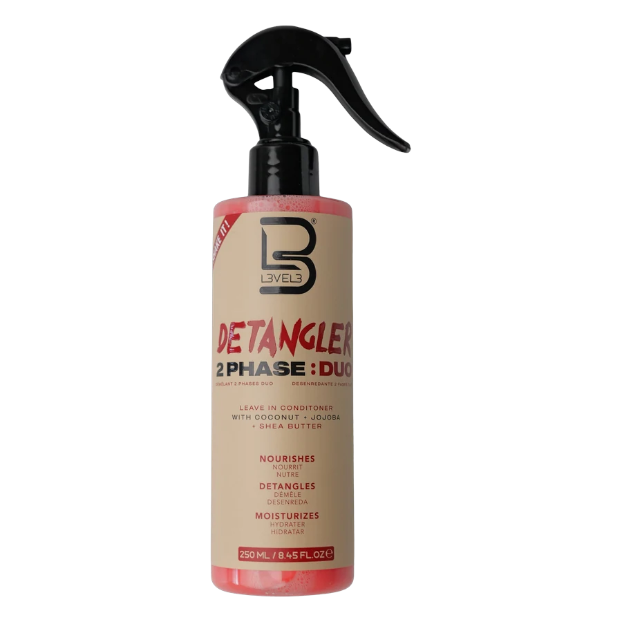
עיצוב שיער
מרכך ללא שטיפה דו‑פאזי
ללא אחיזה (טיפוח) · גימור טבעי · מתיר קשרים
ברקוד: E810119064264מחיר צרכן: ₪99גודל: 250 מ"ל
לצפייה ורכישה באתר
מדריך מקצועי מלא
ספריי דו‑פאזי (2 Phase Duo) מסוג מרכך ללא שטיפה שמתיר קשרים וסבכים באופן מיידי, מפחית שבירה בעת סירוק ומחליק את השיער. קליל, לא מכביד, ומועשר בקוקוס, ג'וג'ובה וחמאת שיאה — חיוני לשיער ארוך, מתולתל ולילדים.
ספריי דו‑פאזי / מרכך ללא שטיפה
ללא אחיזה (טיפוח) · גימור טבעי · מתיר קשרים
- מתיר קשרים וסבכים באופן מיידי.
- מפחית שבירה בעת סירוק.
- מטפח ומחליק את השיער.
- קליל — לא מכביד על השיער.
- מועשר בקוקוס, ג'וג'ובה וחמאת שיאה.
- חיוני לשיער ארוך, מתולתל ולילדים.
התאמה לסוגי שיער מיטבי לשיער ארוך, מתולתל וסבוך. מצוין לילדים ולכל מי שמסתבך בקלות.
התאמה לסוגי שיער
- מיטבי לשיער ארוך, מתולתל וסבוך.
- מצוין לילדים ולכל מי שמסתבך בקלות.
למה זה עובד
הפורמולה הקלילה מצפה ומחליקה את סיב השערה כך שהמסרק עובר בקלות — פחות סבך, פחות שבירה ויותר טיפוח, בלי להעמיס על השיער.
אופן שימוש
- לרסס על שיער לח או יבש.
- להתמקד בקטעים הסבוכים.
- לסרק בעדינות מהקצוות כלפי מעלה.
- לעצב כרצונכם.
טיפים מקצועיים
- כלי עבודה שמזרז כל שירות — כדאי בכל עמדה.
- חיוני ללקוחות עם שיער ארוך או מתולתל.
- מוצר קמעונאי מצוין להורים לילדים.
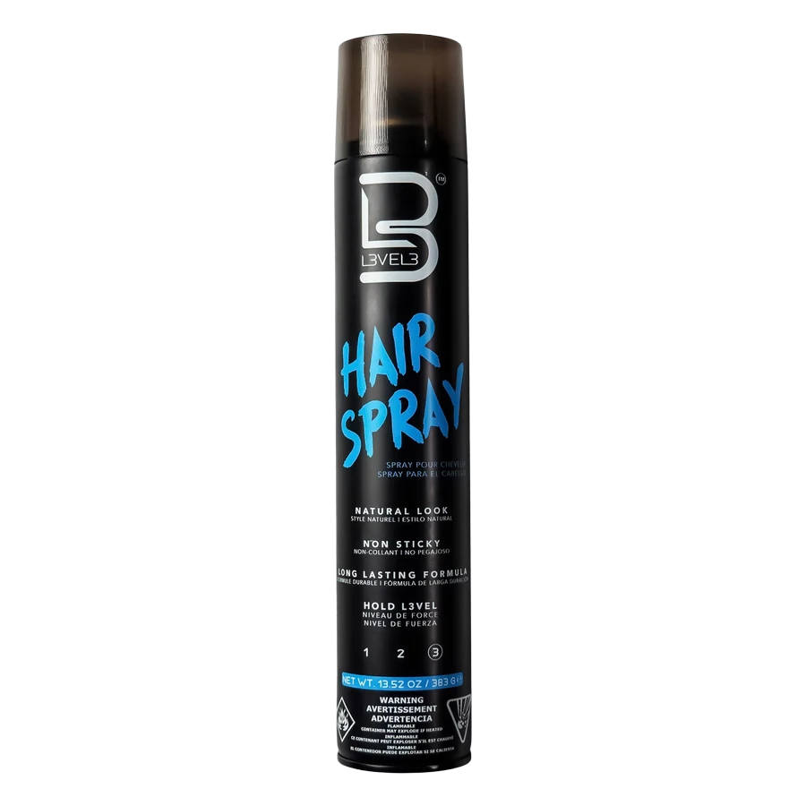
עיצוב שיער
ספריי שיער
אחיזה קלה עד בינונית, גמישה · גימור טבעי
ברקוד: E850018251365מחיר צרכן: ₪99גודל: 383 גרם
לצפייה ורכישה באתר
מדריך מקצועי מלא
ספריי השיער הוא הצעד האחרון שהופך תסרוקת טובה לסגנון שמחזיק. הוא מקבע צורה, שולט בקרזול ומגן מפני לחות — ונותן לספר ולסטייליסט שליטה מלאה על אורך חיי הסגנון, עם גימור טבעי בלי שאריות ובלי קשיחות.
ספריי שיער
אחיזה קלה עד בינונית, גמישה · גימור טבעי
- גימור טבעי בלי שאריות נראות.
- מקבע סגנון בלי קשיחות.
- לחות שעוזרת לסגנון להחזיק בצורה טבעית.
- ויטמין E — הגנה מנזקי שמש וזיהום.
- מסיס במים ונשטף בקלות.
- 383 גרם — מתאים לעבודה מקצועית בנפח גבוה.
התאמה לסוגי שיער מיטבי לשיער ישר וגלי. מתאים גם לשיער מתולתל, קינקי וקולי.
התאמה לסוגי שיער
- מיטבי לשיער ישר וגלי.
- מתאים גם לשיער מתולתל, קינקי וקולי.
למה זה עובד
ספריי השיער מוסיף קיבוע ואחיזה תוך שמירה על גימור הסגנון לאורך היום — שליטה בקרזול והגנה מלחות, בלי מראה קשיח.
אופן שימוש
- להחזיק 20–30 ס"מ מהראש.
- לרסס באופן אחיד על הסגנון המוגמר.
- לבנות שכבות לאחיזה חזקה יותר.
- לאפשר להתייבש לפני נגיעה.
טיפים מקצועיים
- גודל נסיעות 100 מ"ל מצוין למכירה קמעונאית.
- לשכב מעל כל מוצר עיצוב לקיבוע הגימור.
- מושלם ללקוחות ששונאים מראה קשיח.
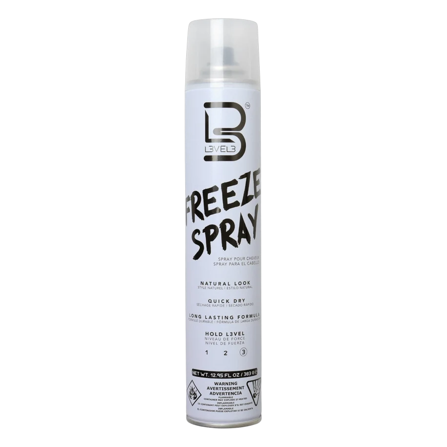
עיצוב שיער
ספריי פריז
אחיזה קיצונית, מקסימלית · גימור ברק גבוה
ברקוד: E810119061751מחיר צרכן: ₪99גודל: 383 גרם
לצפייה ורכישה באתר
מדריך מקצועי מלא
ספריי פריז מספק אחיזה ברמה מקצועית שמקבעת את הסגנון במקום עם ברק גבוה. אידיאלי לסגנונות מובנים, תחרויות וצילומים — וכשהוא מתייבש לחלוטין הסגנון פשוט לא זז. מסיס במים ונשטף בקלות בסוף היום.
ספריי פריז
אחיזה קיצונית, מקסימלית · גימור ברק גבוה
- אחיזה ברמה מקצועית שמקבעת את הסגנון במקום.
- גימור עם ברק גבוה.
- אידיאלי לסגנונות מובנים ולתחרויות.
- מסיס במים — נשטף בקלות.
- ויטמין E — מגן על השיער לאורך כל היום.
- 383 גרם — מתאים לעבודה מקצועית בנפח גבוה.
התאמה לסוגי שיער מיטבי לשיער ישר וגלי. מתאים גם לשיער מתולתל, קינקי וקולי.
התאמה לסוגי שיער
- מיטבי לשיער ישר וגלי.
- מתאים גם לשיער מתולתל, קינקי וקולי.
למה זה עובד
ספריי פריז נועל את הסגנון עם אחיזה קיצונית וברק גבוה — כשהוא מתייבש לחלוטין הסגנון נשאר חד ומקובע לאורך זמן, ועדיין נשטף בקלות במים.
אופן שימוש
- להשלים את הסגנון לפני היישום.
- להחזיק 25–30 ס"מ מהראש.
- לרסס באופן אחיד על הסגנון המוגמר.
- לאפשר להתייבש לחלוטין — הסגנון לא יזוז.
- למגע מקסימלי, ליישם בשכבות.
טיפים מקצועיים
- מצוין לסגנונות מובנים, תחרויות וצילומים.
- לשכב מעל מוצרי עיצוב לקיבוע סופי חזק.
- מסיס במים — נשטף בקלות בסוף היום.
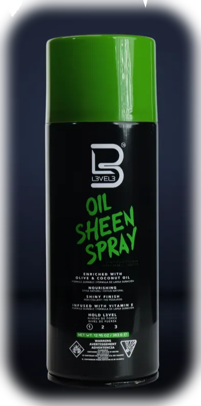
עיצוב שיער
ספריי ברק
גימור גלוס גבוה, רכות והגנה מפני יובש
ברקוד: E850018251815מחיר צרכן: ₪99גודל: 383 גרם
לצפייה ורכישה באתר
מדריך מקצועי מלא
ספריי ברק הוא מוצר סיום וטיפוח שמעניק לשיער זוהר מיידי, רכות ומראה בריא בלי ליצור אחיזה. הוא מתאים במיוחד לצמות, לוקים, טוויסטים ותסרוקות הגנה, וגם לכל סגנון שצריך להחזיר אור, לרכך ולרענן בין ביקורים במספרה.
ספריי ברק
גימור גלוס גבוה, רכות והגנה מפני יובש
- רמת אחיזה: ללא אחיזה, מוצר סיום וטיפוח.
- גימור: ברק גבוה וזוהר.
- מעניק בוסט מיידי של ברק לכל תסרוקת מוכנה.
- מרכך ומטפח את השיער למראה חי ובריא יותר.
- מסייע במניעת יובש ושבירה, במיוחד במרקמים יבשים.
- מתאים במיוחד לצמות, לוקים, טוויסטים ותסרוקות הגנה.
- שמן ארגן מעניק ברק בריא ומיידי.
- שמן קוקוס מוסיף לחות עמוקה ומראה זוהר.
התאמה לסוגי שיער הכי מתאים: שיער מקורזל וקוילי. מתאים גם לשיער חלק, גלי ומתולתל כשצריך תוספת ברק.
התאמה לסוגי שיער
- הכי מתאים: שיער מקורזל וקוילי.
- מתאים גם לשיער חלק, גלי ומתולתל כשצריך תוספת ברק.
אופן שימוש
- להחזיק את הפחית במרחק 25-30 ס״מ מהשיער.
- לרסס שכבה קלה מעל הסגנון המוכן.
- להשתמש בכמות קטנה. מעט ספריי יוצר הרבה ברק.
- להוסיף לפי הצורך לקבלת גלוס מודגש יותר.
טיפים מקצועיים
- חיוני לצמות, לוקים, טוויסטים ותסרוקות הגנה.
- מצוין מעל מוצר מאט כשהלקוח רוצה יותר ברק בסיום.
- מתאים לרענון תסרוקת בין ביקורים במספרה.
- בחירה חזקה לצילומים, אירועים ומראה סופי מלוטש.
טיפוח שיער
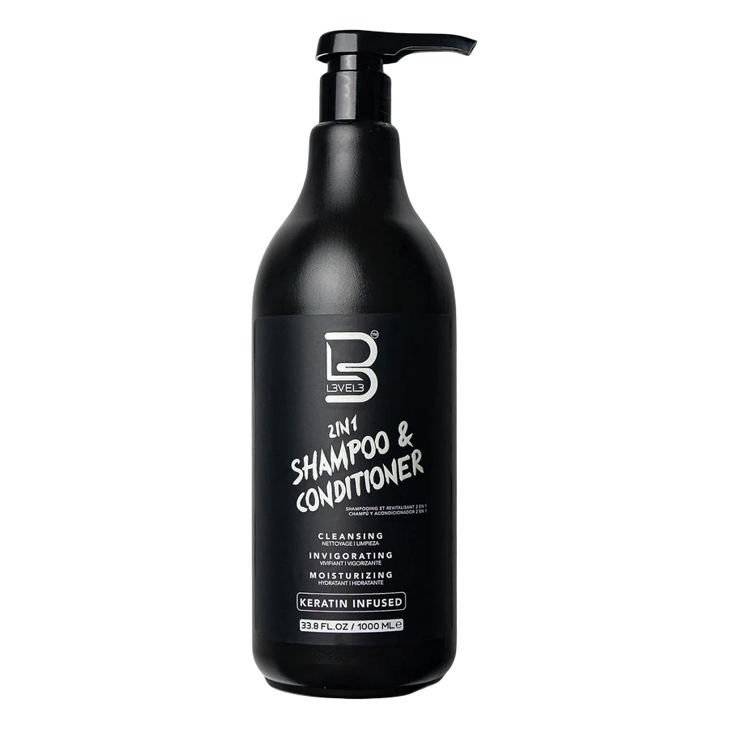
טיפוח שיער
שמפו ומרכך שיער 2 ב 1
ניקוי וריכוך בצעד אחד, יעיל לעבודה בנפח גבוה
ברקוד: E850018251327מחיר צרכן: ₪129גודל: 1000 מ"ל
לצפייה ורכישה באתר
מדריך מקצועי מלא
המשך קו הטיפוח נותן פתרון עבודה יומיומי למספרה ולבית: מוצר חפיפה חסכוני לשימוש גבוה שמנקה ומרכך בצעד אחד, מתאים לעמדת חפיפה פעילה ומשאיר את השיער מוכן לשלב העיצוב.
שמפו ומרכך שיער 2 ב 1
ניקוי וריכוך בצעד אחד, יעיל לעבודה בנפח גבוה
- מנקה ומרכך את השיער בפעולה אחת יעילה.
- גודל 1000 מ״ל מתאים למספרות, עמדות חפיפה ושימוש יומיומי.
- פורמולה עדינה לשימוש תכוף בלי תחושת יובש מוגזמת.
- פתרון חסכוני ונוח לעמדת העבודה האחורית.
- אלוורה מעניקה ניקוי וריכוך בתחושה נקייה ופשוטה.
- ויטמין אי מוסיף רכות והגנה צמחית בשטיפה אחת.
אופן שימוש
- להרטיב היטב את השיער.
- למרוח ולעסות את הקרקפת.
- לעבוד לאורך השיער עד לפיזור מלא.
- לשטוף היטב ולהמשיך לעיצוב לפי הצורך.
התאמה מסחרית
מוצר בסיס ברור שקל להסביר ולמכור
- מתאים לשימוש חוזר לאורך יום עבודה עמוס.
- חוסך שלב עבודה כאשר צריך ניקוי וריכוך מהירים.
- נוח לשימוש לפני תספורת, לפני פן או לפני מוצרי עיצוב.
- גודל 1000 מ״ל מתאים לעבודה מקצועית ולעלות שימוש משתלמת.
- מתאים ללקוחות שמעדיפים שגרת טיפוח פשוטה ומהירה.
- ברור להסבר במכירה: מוצר אחד שמנקה ומרכך יחד.
- נוח למספור, לתמחור ולמיקום במדף לצד מוצרי העיצוב.
- יכול לעבוד גם כמוצר מקצועי במספרה וגם כמוצר המשך לבית.
- מחזק את ההצעה המסחרית של הקטגוריה בלי להעמיס על הלקוח מוצרים לא זמינים.
המלצת תצוגה
להציג כפתרון חפיפה יומיומי גדול, מקצועי ומשתלם, שמתאים גם לעמדת עבודה וגם למכירה ללקוח הביתי.
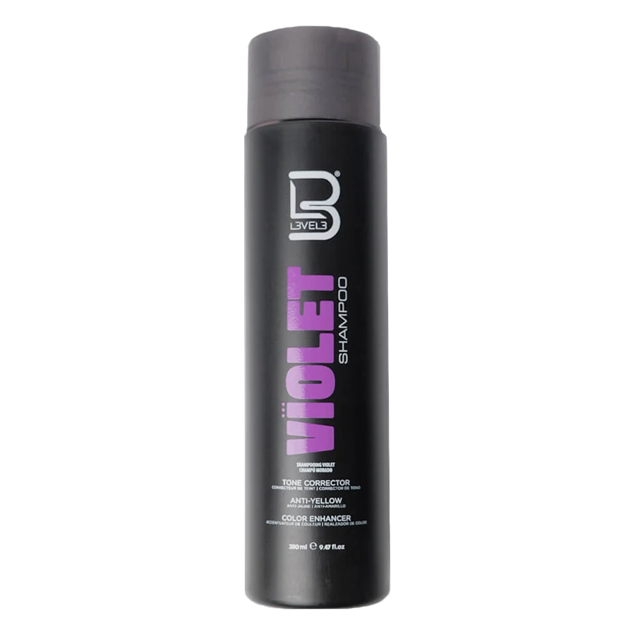
עיצוב שיער
שמפו סילבר
פיגמנט סגול · ניטרול צהוב · גוון קריר ובהיר
ברקוד: E85003657053מחיר צרכן: ₪179גודל: 280 מ"ל
לצפייה ורכישה באתר
מדריך מקצועי מלא
שמפו פיגמנט סגול מקצועי שמנטרל גוונים צהובים ופליז בשיער בלונד ואפור, ומשאיר גוון קריר, נקי ובהיר יותר. מכיל גם חלבון חיטה ואלוורה שמותירים את השיער חלק ורך.
שמפו סילבר
פיגמנט סגול · ניטרול צהוב · גוון קריר ובהיר
- פיגמנטים סגולים מנטרלים גוונים צהובים ופליז.
- מבהיר ושומר על חיוניות צבע בבלונד ובשיער אפור.
- מעניק גוון קריר ופלטינה נקי יותר.
- חלבון חיטה מוסיף חוזק ולחות לשיער.
- אלוורה מרגיעה ומלחחת את הקרקפת והשיער.
- מתאים לשימוש שבועי קבוע לשמירה על הגוון.
- אידיאלי לשיער שהובהר לרמה 9 ומעלה.
התאמה לסוגי שיער מיטבי לשיער בלונד, אפור ושיער שהובהר (רמה 9+). מתאים גם לשיער צבוע שזקוק לרענון גוון קריר.
התאמה לסוגי שיער
- מיטבי לשיער בלונד, אפור ושיער שהובהר (רמה 9+).
- מתאים גם לשיער צבוע שזקוק לרענון גוון קריר.
למה זה עובד
הפיגמנט הסגול יושב על השיער ומנטרל את הגוונים החמים הלא רצויים, ולכן הבלונד והאפור נראים נקיים, קרירים ובהירים יותר — עם טיפוח שמשאיר את השיער רך.
אופן שימוש
- להרטיב היטב את השיער.
- למרוח את השמפו הסגול ולפזר בעיסוי עד לקצף אחיד.
- להשאיר על השיער 5–10 דקות בהתאם לעוצמת תיקון הגוון הרצויה.
- לשטוף ביסודיות. אחרי הבהרה במספרה: לשטוף את חומר ההבהרה, לחפוף בשמפו רגיל, ואז להשתמש בשמפו הסגול.
טיפים מקצועיים
- לשימוש שוטף: פעם-פעמיים בשבוע לשמירה על הגוון הרצוי.
- זמן השהיה ארוך יותר = ניטרול צהוב חזק יותר.
- להיזהר במריחה — המוצר עלול להכתים בגדים ומשטחים; לשטוף התזות מיד.
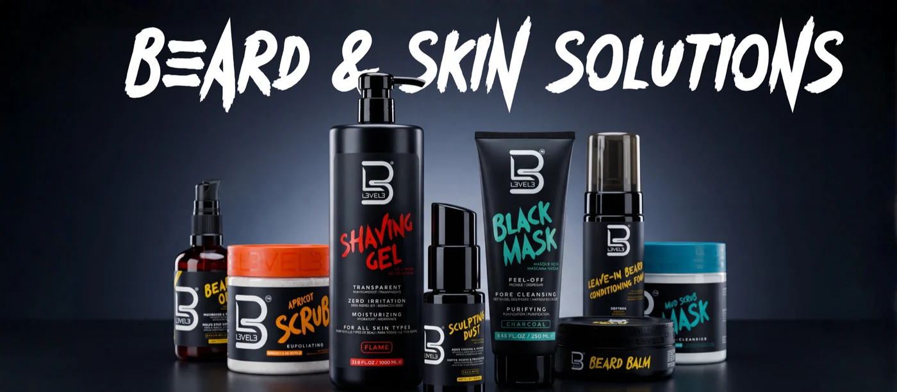
זקן
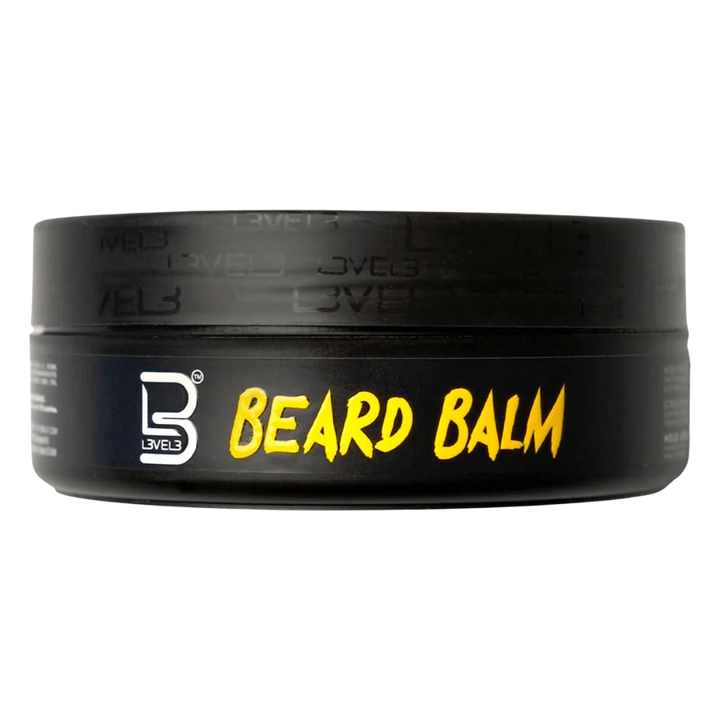
זקן
באלם לזקן
עיצוב קל, ריכוך וברק טבעי ללא שמנוניות
ברקוד: E810119061720מחיר צרכן: ₪99גודל: 100 מ"ל
לצפייה ורכישה באתר
מדריך מקצועי מלא
באלם לזקן הוא השלב האחרון בשגרת טיפוח הזקן. הוא מרכך את השיער, עוזר לשמור על צורה מסודרת, מוסיף ברק טבעי ומאפשר ללקוח לצאת עם זקן שנראה מטופח ונשאר נשלט לאורך היום.
באלם לזקן
עיצוב קל, ריכוך וברק טבעי ללא שמנוניות
- מרכך את הזקן תוך כדי מתן אחיזה קלה וגמישה.
- מסייע לשלוט בשערות סוררות ולעצב את קווי הזקן.
- מעניק לחות בלי להשאיר תחושה שמנונית או כבדה.
- מוסיף ברק טבעי ובריא שמתאים לגימור יומיומי.
- מושלם לשלב הסיום אחרי ניקוי, שמן או מרכך לזקן.
אופן שימוש
- לקחת כמות קטנה בעזרת קצות האצבעות.
- לחמם בין כפות הידיים עד שהחומר מתרכך ומתפזר.
- למרוח על הזקן ולעבוד היטב פנימה לכל האורך.
- לעצב לצורה הרצויה בעזרת הידיים.
- לסרק במסרק זקן כאשר רוצים מראה מוגדר ומדויק יותר.
טיפים מקצועיים
- זהו שלב הסיום של שגרת זקן מלאה.
- נותן מספיק אחיזה כדי לשמור על הזקן במקום לאורך היום.
- אפשר להניח מעל שמן לזקן לקבלת לחות גבוהה יותר ושליטה טובה יותר.
- מעולה לשמירה על שפם מסודר ובמקום.
למה זה עובד
הבאלם מוסיף שכבת שליטה קלה שמיישרת את המראה בלי להקשיח. הוא מתאים במיוחד ללקוחות שרוצים זקן רך, מסודר ומטופח אבל עדיין טבעי למגע.
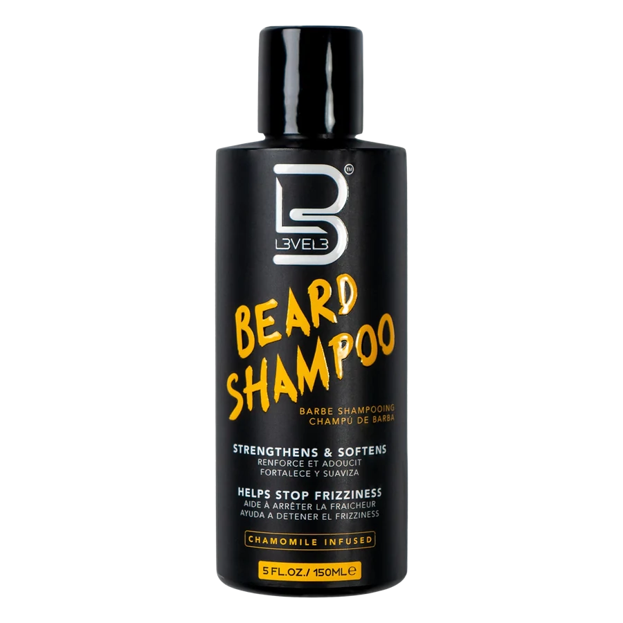
זקן
שמפו לזקן
ניקוי ייעודי לזקן בלי לפגוע בשמנים הטבעיים
ברקוד: E850018251884מחיר צרכן: ₪99גודל: 150 מ"ל
לצפייה ורכישה באתר
מדריך מקצועי מלא
שמפו לזקן הוא בסיס השגרה. הוא מנקה את שיער הפנים ואת העור שמתחתיו, מסיר לכלוך, שומן והצטברות מוצר, ומכין את הזקן לשלבי הריכוך וההזנה הבאים.
שמפו לזקן
ניקוי ייעודי לזקן בלי לפגוע בשמנים הטבעיים
- נוסח במיוחד לשיער פנים עבה ומחוספס יותר משיער ראש.
- מנקה את הזקן ואת העור שמתחתיו.
- מסיר לכלוך, שומן והצטברות מוצרי טיפוח.
- פורמולה עדינה שאינה מסירה באגרסיביות את השמנים הטבעיים.
- מכין את הזקן לשימוש במרכך, שמן או באלם.
אופן שימוש
- להרטיב היטב את הזקן במים חמימים.
- למרוח כמות קטנה של שמפו.
- לעסות לתוך הזקן וגם לעור שמתחתיו.
- לשטוף לחלוטין עד שאין שאריות.
- להמשיך עם מרכך לזקן להשארה או עם שמן לזקן.
טיפים מקצועיים
- להמליץ ללקוחות לשטוף את הזקן 2-3 פעמים בשבוע לפי צורך.
- חשוב לעסות גם את העור שמתחת לזקן, שם מצטברים שומן ולכלוך.
- שילוב עם שמן לזקן יוצר שגרת לחות מלאה.
- מתאים גם כתוספת שירות במספרה וגם כמוצר מכירה לבית.
למה זה עובד
ניקוי נכון של הזקן מונע תחושת כבדות, ריח והצטברות מוצר. כאשר הזקן נקי, מוצרי הריכוך והעיצוב עובדים טוב יותר והתוצאה נראית מקצועית יותר.
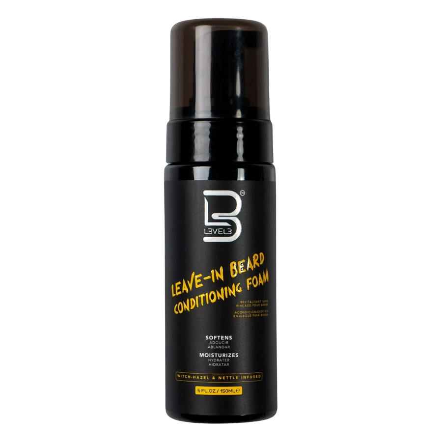
זקן
מרכך לזקן
קצף קליל להשארה, ללא שטיפה וללא שאריות שומניות
ברקוד: E850018251891מחיר צרכן: ₪99גודל: 150 מ"ל
לצפייה ורכישה באתר
מדריך מקצועי מלא
מרכך לזקן מיועד לשלב שאחרי הניקוי. הוא מרכך שיער פנים קשה, עוזר לפתוח קשרים, נספג במהירות ומכין את הזקן לשמן או לבאלם בלי להכביד.
מרכך לזקן
קצף קליל להשארה, ללא שטיפה וללא שאריות שומניות
- קצף קליל שמרכך בלי תחושת כבדות.
- מרכך שיער זקן קשה, עבה או סורר.
- עוזר להתיר קשרים ומקל על סירוק ועיצוב.
- נספג במהירות ולא משאיר שאריות שמנוניות.
- מכין את הזקן לשימוש בשמן או בבאלם.
אופן שימוש
- להשתמש על זקן נקי ולח.
- להוציא קצף לכף היד.
- לעבוד דרך הזקן מהשורש ועד הקצוות.
- לסרק לפיזור אחיד.
- לא לשטוף. להשאיר בזקן ולהמשיך לעיצוב.
טיפים מקצועיים
- פורמט הקצף הופך את המריחה למהירה ונקייה.
- זהו שלב מצוין בין שמפו לשמן בשגרה מלאה.
- עוזר להשתלט על זקנים סוררים שקשה לעצב.
- לקוחות מרגישים מיד את השינוי ברכות הזקן לאחר השימוש.
למה זה עובד
המרכך משפר את תחושת הזקן ואת יכולת הסירוק לפני שלבי ההזנה והעיצוב. הוא מתאים במיוחד ללקוחות שמרגישים שהזקן קשה, יבש או לא נעים למגע.
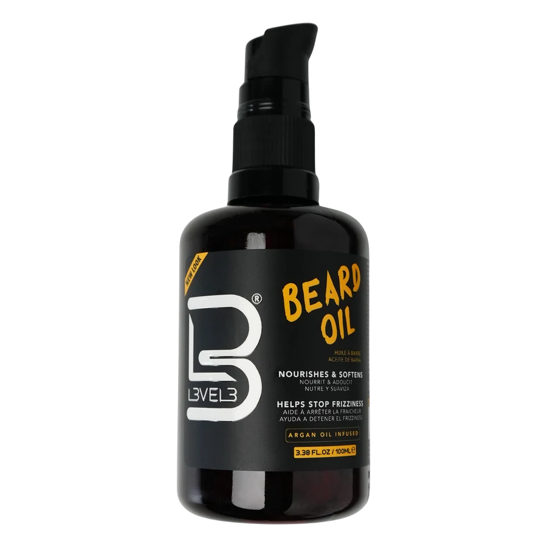
זקן
שמן לזקן
לחות, ריכוך וברק טבעי לשיער הפנים ולעור
ברקוד: E850018251372מחיר צרכן: ₪89גודל: 100 מ"ל
לצפייה ורכישה באתר
מדריך מקצועי מלא
שמן לזקן משלים את השגרה על ידי הזנת שיער הפנים והעור שמתחתיו. הוא מוסיף רכות, מפחית תחושת יובש וגירוד, ומשאיר ברק בריא בלי להיראות שמנוני.
שמן לזקן
לחות, ריכוך וברק טבעי לשיער הפנים ולעור
- מעניק לחות עמוקה לזקן ולעור שמתחתיו.
- מרכך שיער פנים עבה ומחוספס.
- מסייע להפחתת גירוד, יובש וקשקשת בזקן.
- מוסיף ברק בריא בלי תחושת שמנוניות.
- מזין את העור שמתחת לזקן כחלק משגרה יומית.
אופן שימוש
- להשתמש על זקן נקי ומעט לח.
- לטפטף כמה טיפות לכף היד.
- לחמם את השמן בין כפות הידיים.
- לעבוד דרך הזקן ולהגיע גם לעור שמתחתיו.
- לסרק לפיזור אחיד ולמראה מסודר.
טיפים מקצועיים
- כמה טיפות מספיקות. להתחיל בכמות קטנה ולהוסיף לפי צורך.
- לעסות לתוך העור שמתחת לזקן כדי להפחית יובש.
- שימוש יומיומי נותן את התוצאה הטובה ביותר.
- עובד יפה גם כשלב הכנה לפני גילוח אזורים שמיישרים בקו.
למה זה עובד
השמן מטפל גם בשיער הזקן וגם בעור שמתחתיו. כאשר העור מקבל לחות והשיער מתרכך, הזקן נראה מלא, בריא ונעים יותר לעיצוב.
גילוח ועור
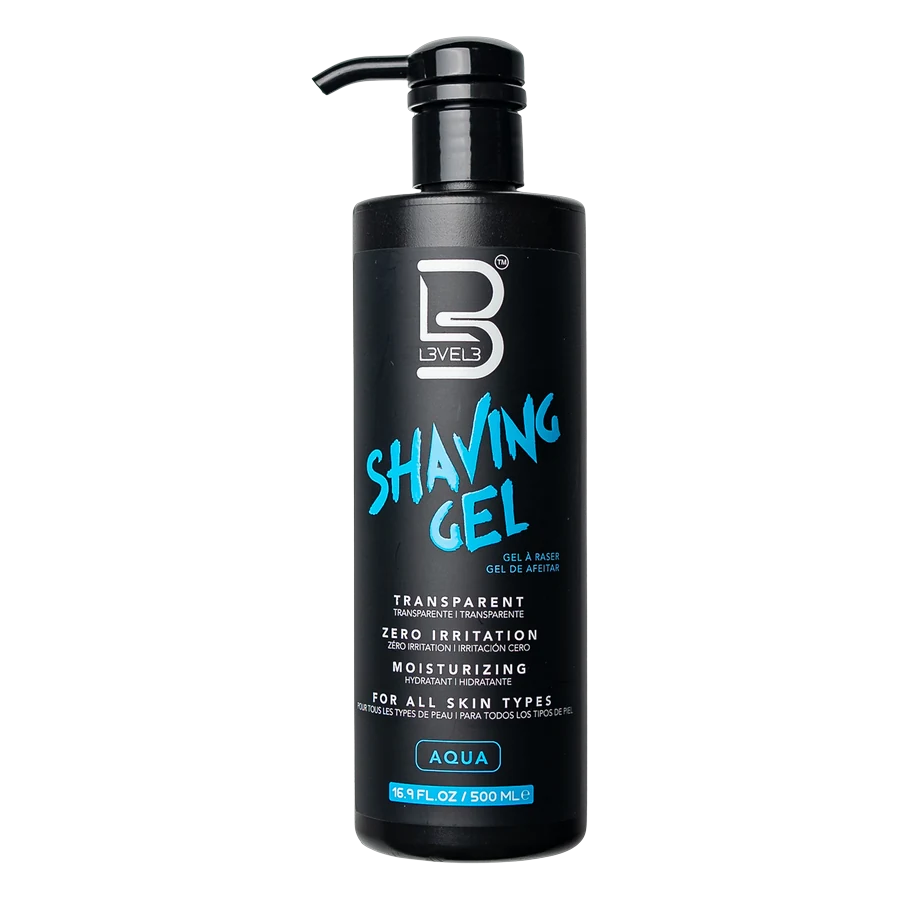
גילוח
ג'ל גילוח אקווה
פורמולה שקופה לתיחום מדויק · ריחות: אקווה, אייס
ברקוד: E850018251143מחיר צרכן: ₪99גודל: 500 מ"ל
לצפייה ורכישה באתר
מדריך מקצועי מלא
ג'ל הגילוח השקוף מאפשר לראות את קו הגילוח בזמן העבודה, ולכן הוא אידיאלי לתיחום מדויק של זקן, לחיים ועורף. הפורמולה המרגיעה מגנה על העור ומעניקה חוויית גילוח חלקה ונקייה.
ג'ל גילוח שקוף
פורמולה שקופה לתיחום מדויק · ריחות: אקווה, אייס
- פורמולה שקופה לחלוטין לתיחום ולקווים מדויקים.
- החלקה חלקה שמגנה על העור מפני גירוי.
- פורמולה מלחלחת שמסייעת למנוע כוויות גילוח.
- זמינה בריחות אקווה ואייס רעננים ואהובים.
- נשטפת נקי בלי להשאיר שאריות.
אופן שימוש
- להכין את העור עם מגבת חמה או אחרי שטיפת פנים.
- למרוח שכבה דקה על האזור לגילוח.
- הפורמולה השקופה מאפשרת לראות את העור ואת קו השיער.
- לגלח עם כיוון השיער בתנועות קצרות ומבוקרות.
- לשטוף ולסיים עם אפטרשייב קולון.
טיפים מקצועיים
- מצוין לתיחום קווי זקן, שפם ועורף בדיוק גבוה.
- להחזיק את שני הריחות בעמדה ולתת ללקוח לבחור.
- מתאים גם כשירות במספרה וגם כמוצר מכירה לבית.
- להתאים את ריח ג'ל הגילוח לריח האפטרשייב לחוויה אחידה.
למה זה עובד
שקיפות הפורמולה מאפשרת עבודה מדויקת על קווי הזקן, השפם והעורף. התוצאה היא גילוח נקי, מוגן ומקצועי שמשאיר את העור חלק ונעים.
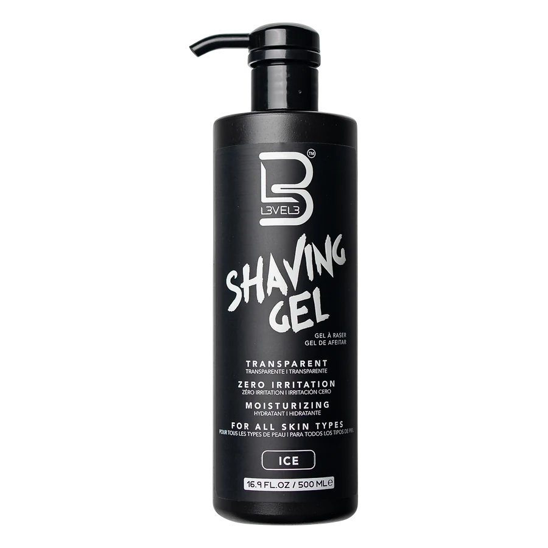
גילוח
ג'ל גילוח אייס
פורמולה שקופה לתיחום מדויק · תחושה קרירה ורעננה
ברקוד: E850018251501מחיר צרכן: ₪99גודל: 500 מ"ל
לצפייה ורכישה באתר
מדריך מקצועי מלא
ג'ל גילוח אייס שומר על היתרון המקצועי של פורמולה שקופה: רואים את קו הגילוח בזמן העבודה ומקבלים שליטה גבוהה סביב זקן, שפם, לחיים וצוואר. גרסת אייס מוסיפה תחושת רעננות קרירה ונקייה לסיום השירות.
ג'ל גילוח אייס
פורמולה שקופה לתיחום מדויק · תחושה קרירה ורעננה
- פורמולה שקופה לחלוטין לתיחום וקווים מדויקים.
- מאפשרת עבודה נקייה סביב זקן, שפם, לחיים וצוואר.
- מסייעת להחלקת תנועת הסכין ולהפחתת משיכה על העור.
- תחושת אייס רעננה שמתאימה במיוחד לסיום גילוח מקצועי.
- נשטפת בקלות ומשאירה תחושה נקייה.
אופן שימוש
- להכין את העור עם מגבת חמה או שטיפת פנים.
- למרוח שכבה דקה ואחידה על האזור לגילוח.
- להיעזר בשקיפות כדי לראות את קו השיער והעור.
- לגלח בתנועות קצרות ומבוקרות עם כיוון השיער.
- לשטוף ולסיים עם קולון אפטרשייב מתאים.
טיפים מקצועיים
- מצוין ללקוחות שאוהבים תחושת רעננות קרירה אחרי גילוח.
- להחזיק לצד אקווה כדי לתת ללקוח בחירה בין שתי חוויות ריח ותחושה.
- מתאים גם למכירה לבית ללקוחות שמסדרים קווי זקן בעצמם.
- אפשר לשלב עם קולון פרוסט או אקווה לחוויית סיום רעננה במיוחד.
למה זה עובד
השקיפות נותנת דיוק, והתחושה הקרירה מחזקת את חוויית הסיום. זה מוצר שמחבר בין עבודה מקצועית במספרה לבין מוצר המשך ברור ללקוח בבית.
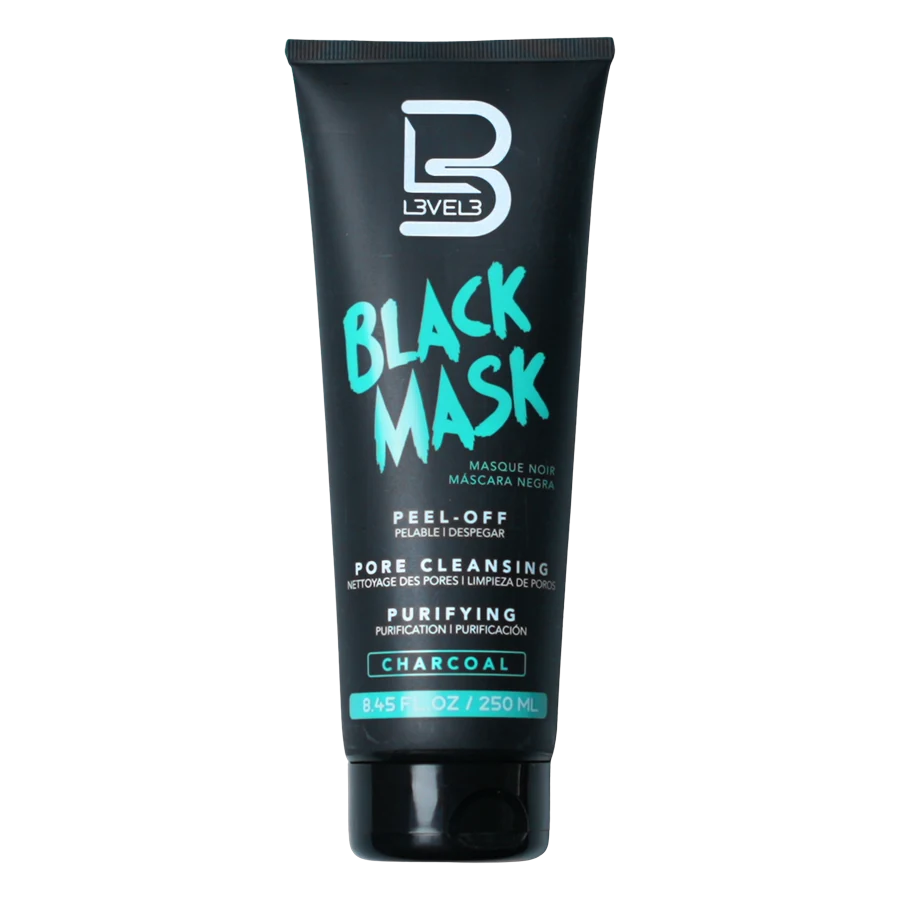
עיצוב שיער
מסכת פנים שחורה
פורמולת פחם פעיל לניקוי עומק וזיקוק
ברקוד: E850018251082מחיר צרכן: ₪99גודל: 250 מ"ל
לצפייה ורכישה באתר
מדריך מקצועי מלא
מסכת הפחם השחורה מנקה את העור לעומק, שואבת לכלוך ופותחת נקבוקיות סתומות. יישום הקילוף הדרמטי הוא חוויה שלקוחות אוהבים, והתוצאה היא עור נקי, חלק ורענן יותר.
מסכת פנים שחורה
פורמולת פחם פעיל לניקוי עומק וזיקוק
- פורמולת פחם פעיל לניקוי עומק.
- שואבת לכלוך ומנקה נקבוקיות סתומות.
- מסירה נקודות שחורות ושומן עודף.
- מהדקת ומעדנת את מראה העור.
- יישום פילינג מתקלף דרמטי שלקוחות אוהבים.
אופן שימוש
- לנקות את הפנים ביסודיות תחילה.
- למרוח שכבה אחידה, להימנע מהעיניים והשפתיים.
- לתת להתייבש לחלוטין (15-20 דקות).
- לקלף מהקצוות בתנועה אחת חלקה.
- לשטוף שאריות ולמרוח קרם לחות.
טיפים מקצועיים
- להציע כשירות מוסף בתורים ארוכים יותר.
- חוויית הקילוף מהנה — הלקוחות נהנים מהתהליך.
- מצוין ללקוחות עם עור שמן או נוטה לאקנה.
- לשימוש לפני גילוח לעור נקי וחלק יותר.
למה זה עובד
ניקוי עומק לפני גילוח או טיפול פותח את הנקבוקיות ומסיר שומן ולכלוך. עור נקי מאפשר גילוח חלק יותר ותוצאה מטופחת ומקצועית.
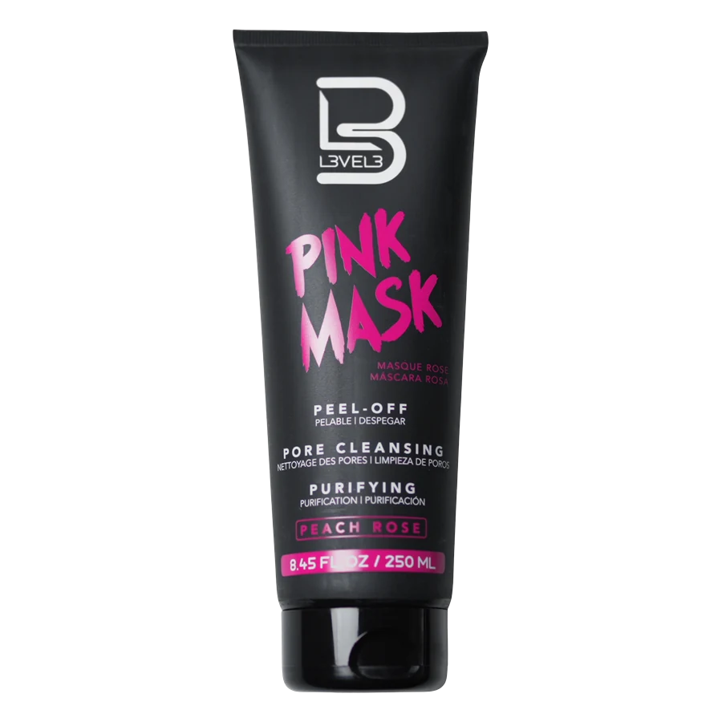
עיצוב שיער
מסכת פנים ורודה
פורמולה עדינה ללחות, הרגעה וזוהר
ברקוד: E850018251150מחיר צרכן: ₪99גודל: 250 מ"ל
לצפייה ורכישה באתר
מדריך מקצועי מלא
מסכת הפנים הוורודה מעניקה לחות ומרגיעה עור רגיש. הפורמולה העדינה מוסיפה זוהר ורכות, ומתאימה במיוחד לעור יבש או מגורה ולסיום מרגיע אחרי גילוח.
מסכת פנים ורודה
פורמולה עדינה ללחות, הרגעה וזוהר
- פורמולה עדינה ומלחלחת.
- מרגיעה ומרככת עור רגיש.
- מוסיפה לחות וזוהר.
- מושלמת לעור יבש או מגורה.
- מרכיבים מזינים משאירים את העור רך.
אופן שימוש
- למרוח על פנים נקיות.
- להשאיר 15-20 דקות.
- לקלף בעדינות.
- לשטוף ולמרוח קרם לחות.
טיפים מקצועיים
- אידיאלי ללקוחות עם עור רגיש או יבש.
- לשימוש אחרי גילוח להרגעת גירוי.
- מצוין כשירות פינוק משלים במספרה.
- להציע לצד המסכה השחורה — הלקוח בוחר לפי סוג העור.
למה זה עובד
הרגעה ולחות אחרי גילוח מפחיתות אדמומיות וגירוי ומשאירות את העור רך וזוהר. זהו סיום מפנק שמעלה את חוויית השירות.
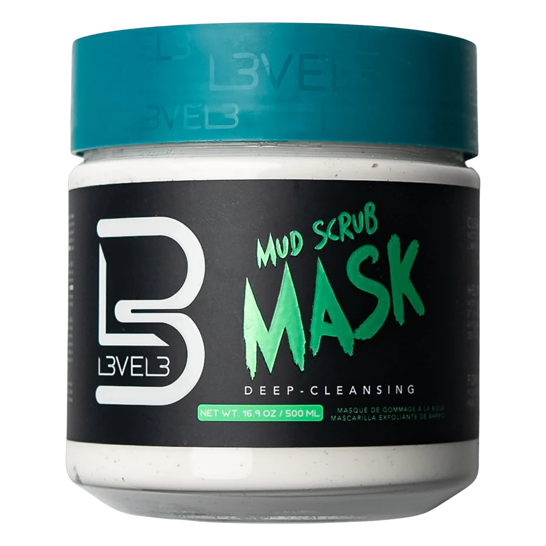
עיצוב שיער
מסכת בוץ פילינג
חימר קאולין · ניקוי עומק · פילינג
ברקוד: E850018251181מחיר צרכן: ₪99גודל: 500 מ"ל
לצפייה ורכישה באתר
מדריך מקצועי מלא
מסכת בוץ-פילינג 2-ב-1 על בסיס חימר קאולין שמסירה לכלוך, שומן עודף וזיהומים לעור נקי ורענן יותר באופן מיידי. מנקה לעומק נקבוקיות, מפחיתה נקודות שחורות ומקלפת תאי עור מתים.
מסכת בוץ פילינג
חימר קאולין · ניקוי עומק · פילינג
- מסירה לכלוך, שומן עודף וזיהומים מהעור.
- חימר קאולין סופג שומן ועודפי הפרשות.
- מנקה לעומק נקבוקיות ומפחיתה נקודות שחורות.
- מקלפת תאי עור מתים לעור חלק יותר.
- מסייעת לאזן עור שמנוני ונוטה לפצעונים.
- תמצית קמומיל מרגיעה את העור.
- מתאימה לשימוש מקצועי במספרה וגם לבית.
התאמה לסוגי עור מתאימה לכל סוגי העור. מצוינת במיוחד לעור שמנוני ונוטה לפצעונים.
התאמה לסוגי עור
- מתאימה לכל סוגי העור.
- מצוינת במיוחד לעור שמנוני ונוטה לפצעונים.
למה זה עובד
החימר סופג שומן וזיהומים ומנקה לעומק את הנקבוקיות, והפילינג מסיר תאי עור מתים — כך העור נראה נקי, מאוזן וחלק יותר כבר אחרי שימוש אחד.
אופן שימוש
- להרטיב היטב את העור.
- למרוח את הסקראב בעזרת קצות האצבעות או מברשת מסכה.
- לעסות בעדינות בתנועות סיבוביות.
- להימנע מאזור העיניים העדין.
- לשטוף במים פושרים ונקיים.
טיפים מקצועיים
- מתאימה לשימוש יומיומי.
- שדרוג מצוין לשירות פנים או לפני/אחרי גילוח במספרה.
- כלי מכירה נוח: תוצאה מורגשת מיד שמעודדת רכישה חוזרת.
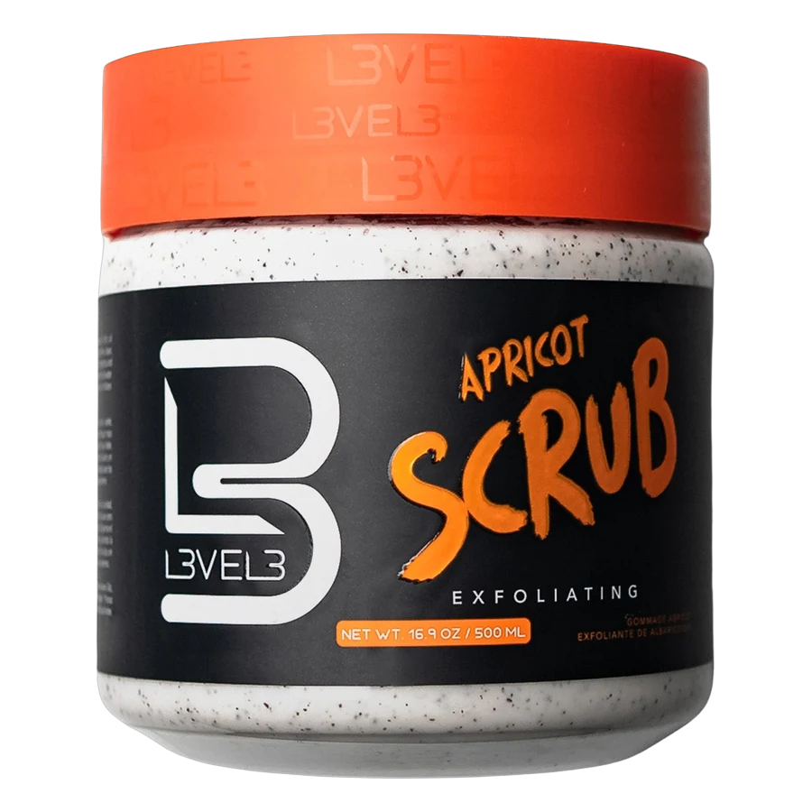
עיצוב שיער
סקראב משמש לפנים
חלקיקי משמש טבעיים · פילינג עדין · מראה זוהר
ברקוד: E850018251174מחיר צרכן: ₪99גודל: 500 מ"ל
לצפייה ורכישה באתר
מדריך מקצועי מלא
סקראב פנים מפילינג על בסיס חלקיקי משמש טבעיים שמנקה בעדינות את הנקבוקיות ומשאיר את העור חלק וזוהר. מסיר לכלוך, שומן, זיהומים, תאי עור מתים ונקודות שחורות — בלי שפשוף אגרסיבי.
סקראב משמש לפנים
חלקיקי משמש טבעיים · פילינג עדין · מראה זוהר
- חלקיקי משמש טבעיים לפילינג עדין ולא אגרסיבי.
- מנקה לעומק את הנקבוקיות ומסיר הצטברות.
- מסיר תאי עור מתים, לכלוך ונקודות שחורות.
- מבהיר עור עייף ומחזיר זוהר.
- משפר את מרקם העור ותחושת החלקות.
- מתאים לשגרת טיפוח יומיומית.
- מתאים לשימוש מקצועי במספרה וגם לבית.
התאמה לסוגי עור מתאים לכל סוגי העור — כולל עור רגיש. מתאים גם לעור שמנוני, יבש ומעורב.
התאמה לסוגי עור
- מתאים לכל סוגי העור — כולל עור רגיש.
- מתאים גם לעור שמנוני, יבש ומעורב.
למה זה עובד
חלקיקי המשמש הטבעיים מקלפים בעדינות תאי עור מתים והצטברות מבלי לפגוע בעור, ולכן הפנים נראים נקיים, חלקים וזוהרים יותר — עם תחושת רעננות מיידית.
אופן שימוש
- להרטיב את העור במים פושרים.
- להוציא כמות קטנה לקצות האצבעות.
- לעסות בעדינות בתנועות סיבוביות.
- להימנע מאזור העיניים העדין.
- לשטוף את הפנים במים נקיים וקרירים.
טיפים מקצועיים
- עדין מספיק לשגרת טיפוח יומיומית.
- מצוין כהכנת עור לפני גילוח לתחושת החלקה טובה יותר.
- מתאים גם ללקוחות עם עור רגיש שמחפשים פילינג לא אגרסיבי.
מדריך מקצועי: קולקציית אפטרשייב קולון
ריח הוא זיכרון. ריח הוא זהות. קולקציית הניחוחות של L3VEL3 הופכת שירות טיפוח, גילוח או תספורת לחוויה שלמה שנשארת עם הלקוח גם אחרי שהוא יוצא מהכיסא. מקולוני אפטרשייב רעננים ועד ניחוחות עמוקים יותר, הקטגוריה מחזקת את תחושת הפרימיום ומייצרת הזדמנות טבעית למכירה משלימה.
מה הקטגוריה נותנת במספרה
- סיום שירות מורגש, נקי וזכיר אחרי גילוח, תספורת או טיפול זקן.
- שפה מקצועית קלה להסבר: רענן, נקי, עמוק, חם או יוקרתי לפי אופי הלקוח.
- מוצר שקל להדגים במקום ומעודד רכישה חוזרת.
- מתאים להצבה בקופה, בעמדת גילוח ובמדף מוצרי הטיפוח לגבר.
כיוון שיווקי ללקוח
- להתאים ניחוח לפי אופי הלקוח: רענן ליום-יום, עמוק לערב, חם למראה נועז.
- להשתמש בסיום השירות כדי ליצור רגע קטן של חוויה ולא רק מריחה טכנית.
- להציע את הניחוח שהלקוח אהב כמוצר ביתי להמשך התחושה אחרי המספרה.
- בעמוד הבא כל קולון מופיע עם כיוון ניחוח, מחיר צרכן וברקוד לפי הגודל.
קולוני האפטרשייב של L3VEL3 נועדו לסיים גילוח, תספורת או טיפול זקן בתחושה נקייה, רעננה וזכירה. הם מוסיפים ניחוח מקצועי, תחושת רענון ומגע סופי שמחזק את חוויית הלקוח ואת המכירה המשלימה.
פלאם
ניחוח חם, נועז ובטוח עם תחושה מתובלת ועצית. מתאים ללקוחות שאוהבים סיום מורגש, גברי ועשיר.
מידנייט
ניחוח עמוק ומסתורי עם אופי אלגנטי לערב. מתאים למראה נקי, יוקרתי ומעט דרמטי.
אקווה
ניחוח רענן, נקי ומימי עם תחושת הדרים קלילה. בחירה בטוחה ללקוחות שאוהבים רעננות יומיומית.
רוז
ניחוח מודרני עם ורד רענן, עלים ירוקים ומתיקות עדינה. מתאים למי שרוצה סיום נקי ורך יותר.
ויברנט
ניחוח אנרגטי וצעיר עם הדרים בהירים, ירוק רענן ותחושת ניקיון. מתאים לפתיחת יום וללקוחות דינמיים.
רויאל
ניחוח יוקרתי ומובחן עם עומק עצי, חמימות ותבלין עדין. מתאים לסיום שירות פרימיום.
פרש
ניחוח קליל ונקי עם תחושה סבונית, רכה ומטופחת. מתאים ללקוחות שמעדיפים ריח נקי ולא כבד.
פרוסט
ניחוח קריר וממריץ עם תחושת רעננות חדה. מתאים אחרי גילוח וללקוחות שאוהבים אפקט נקי ומרענן.
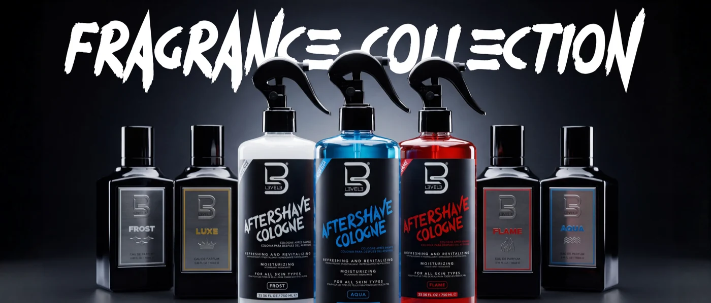
אפטרשייב קולון
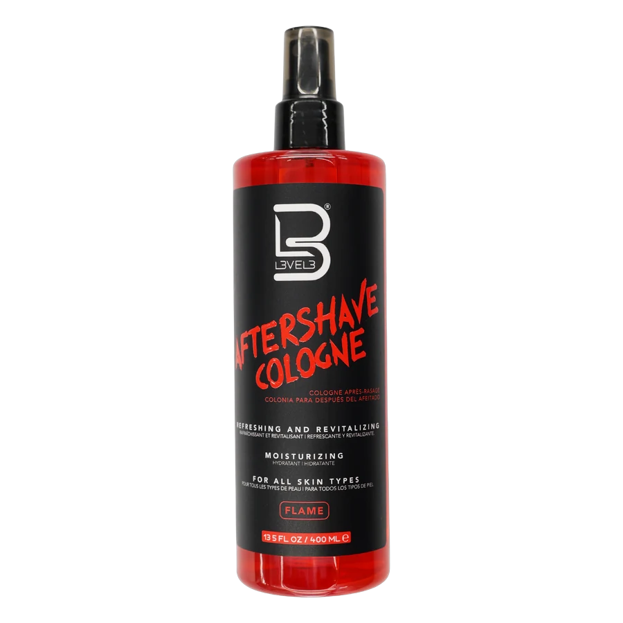
אפטרשייב קולון
אפטרשייב קולון פלאם
המוצג בתמונה: 400 מ"ל400 מ"ל - ברקוד: E810119064295 · מחיר צרכן: ₪89100 מ"ל - ברקוד: E810119064301 · מחיר צרכן: ₪49
לצפייה ורכישה באתר
מדריך מקצועי מלא
פלאם
ניחוח חם, נועז ובטוח עם תחושה מתובלת ועצית. מתאים ללקוחות שאוהבים סיום מורגש, גברי ועשיר.
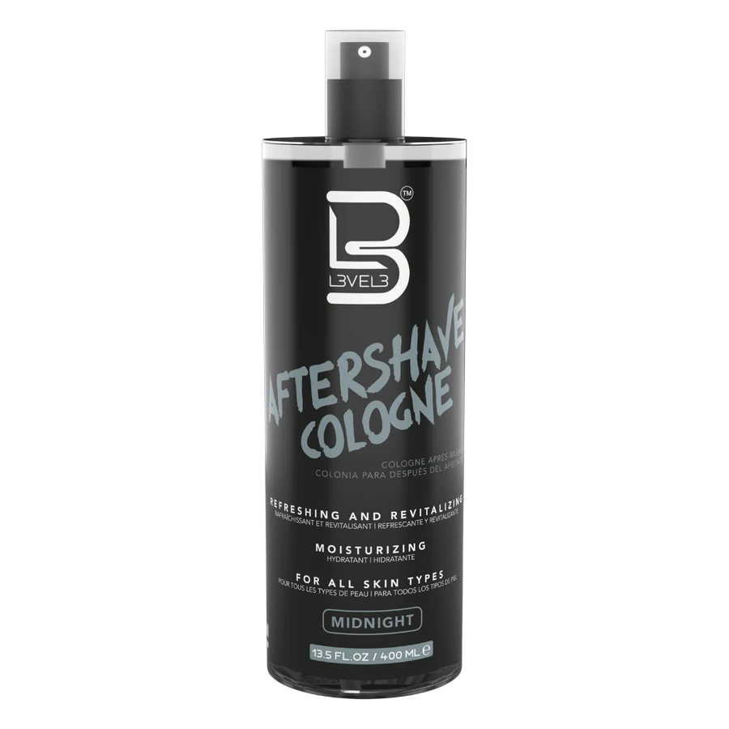
אפטרשייב קולון
אפטרשייב קולון מידנייט
המוצג בתמונה: 400 מ"ל400 מ"ל - ברקוד: E850036570462 · מחיר צרכן: ₪89100 מ"ל - ברקוד: E810119061676 · מחיר צרכן: ₪49
לצפייה ורכישה באתר
מדריך מקצועי מלא
מידנייט
ניחוח עמוק ומסתורי עם אופי אלגנטי לערב. מתאים למראה נקי, יוקרתי ומעט דרמטי.
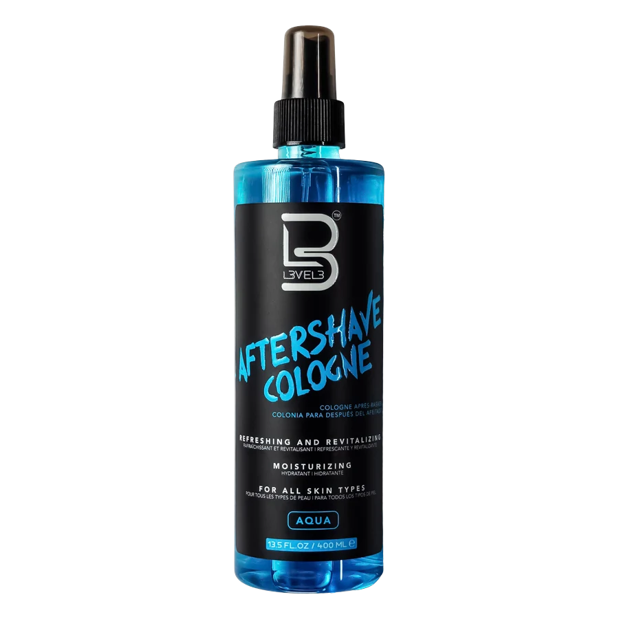
אפטרשייב קולון
אפטרשייב קולון אקווה
המוצג בתמונה: 400 מ"ל400 מ"ל - ברקוד: E850018251167 · מחיר צרכן: ₪89100 מ"ל - ברקוד: E810119061652 · מחיר צרכן: ₪49
לצפייה ורכישה באתר
מדריך מקצועי מלא
אקווה
ניחוח רענן, נקי ומימי עם תחושת הדרים קלילה. בחירה בטוחה ללקוחות שאוהבים רעננות יומיומית.
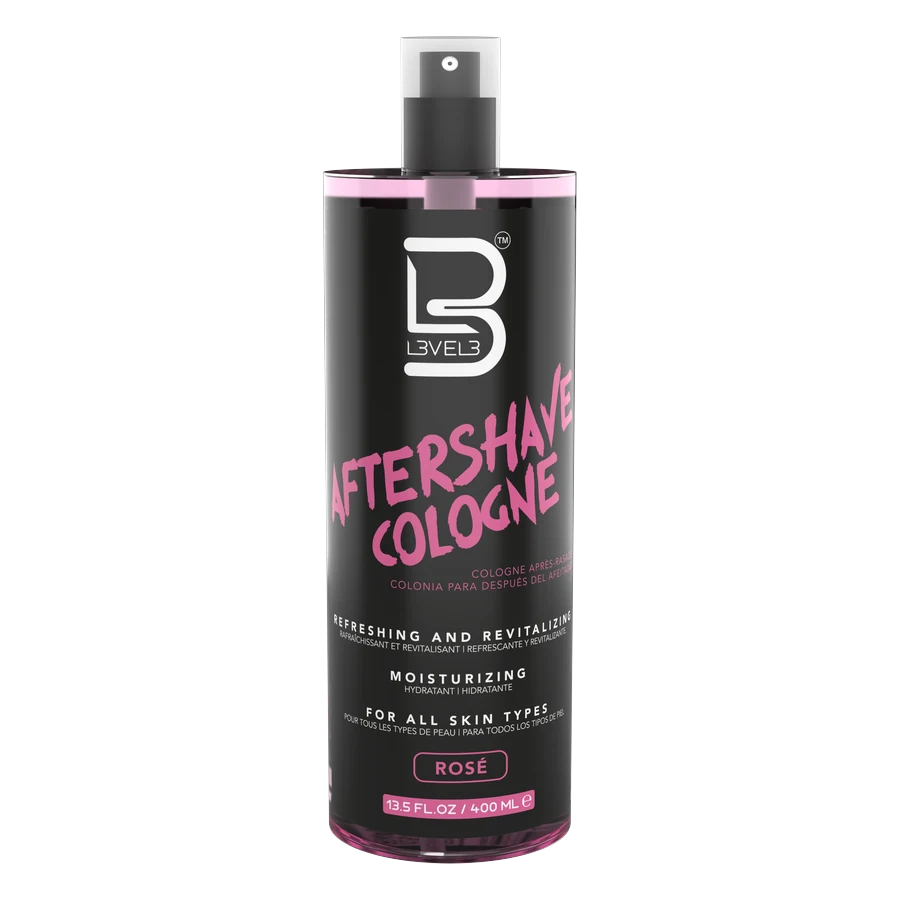
אפטרשייב קולון
אפטרשייב קולון רוז
המוצג בתמונה: 400 מ"ל400 מ"ל - ברקוד: E850036570479 · מחיר צרכן: ₪89100 מ"ל - ברקוד: E810119061683 · מחיר צרכן: ₪49
לצפייה ורכישה באתר
מדריך מקצועי מלא
רוז
ניחוח מודרני עם ורד רענן, עלים ירוקים ומתיקות עדינה. מתאים למי שרוצה סיום נקי ורך יותר.
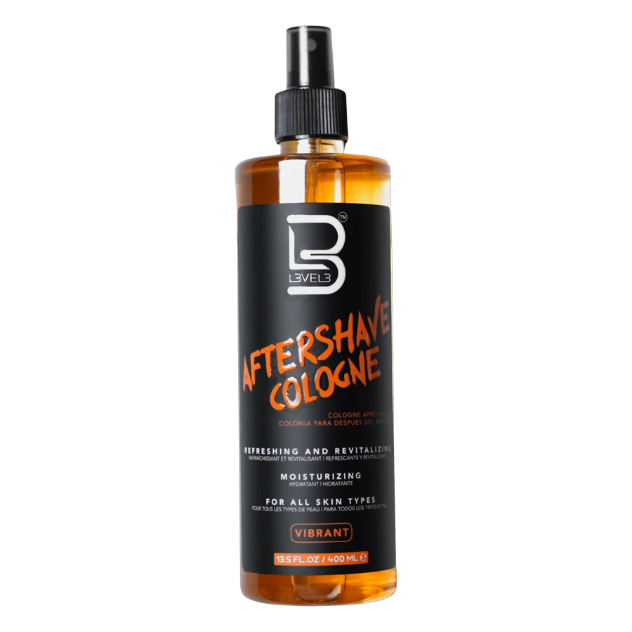
אפטרשייב קולון
אפטרשייב קולון ויברנט
המוצג בתמונה: 400 מ"ל400 מ"ל - ברקוד: E850018251518 · מחיר צרכן: ₪89100 מ"ל - ברקוד ומחיר צרכן: המידע לא זמין בקבצים שסופקו
לצפייה ורכישה באתר
מדריך מקצועי מלא
ויברנט
ניחוח אנרגטי וצעיר עם הדרים בהירים, ירוק רענן ותחושת ניקיון. מתאים לפתיחת יום וללקוחות דינמיים.
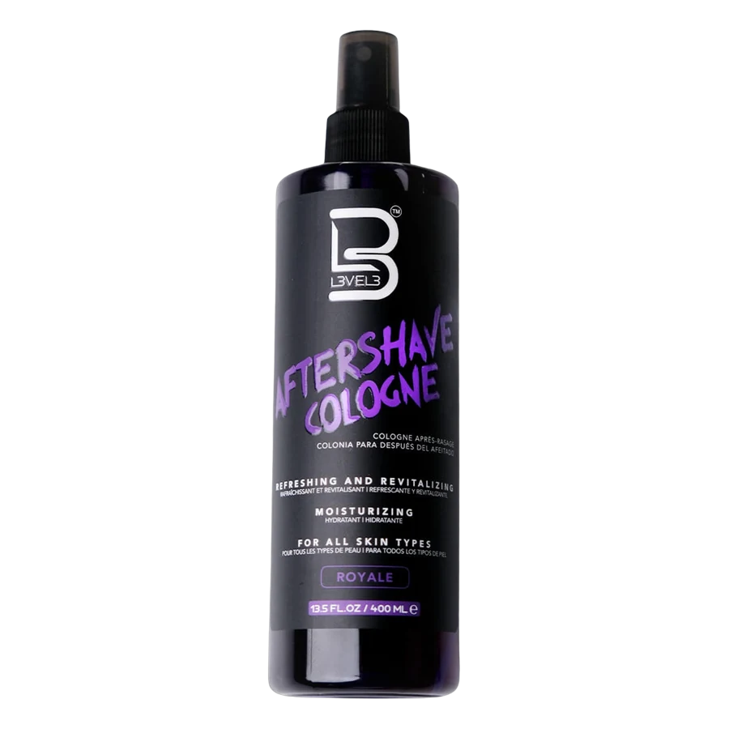
אפטרשייב קולון
אפטרשייב קולון רויאל
המוצג בתמונה: 400 מ"ל400 מ"ל - ברקוד: E850036570950 · מחיר צרכן: ₪89100 מ"ל - ברקוד: E810119061690 · מחיר צרכן: ₪49
לצפייה ורכישה באתר
מדריך מקצועי מלא
רויאל
ניחוח יוקרתי ומובחן עם עומק עצי, חמימות ותבלין עדין. מתאים לסיום שירות פרימיום.
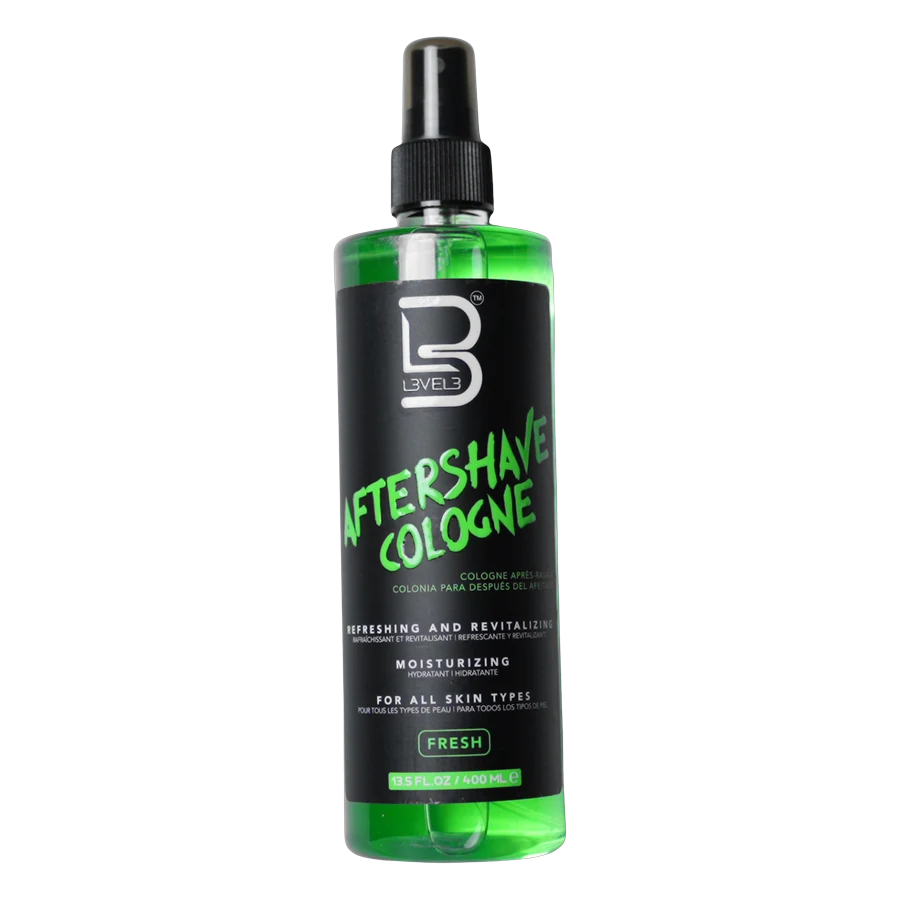
אפטרשייב קולון
אפטרשייב קולון פרש
המוצג בתמונה: 400 מ"ל400 מ"ל - ברקוד: E850018251525 · מחיר צרכן: ₪89100 מ"ל - ברקוד: E810119061669 · מחיר צרכן: ₪49
לצפייה ורכישה באתר
מדריך מקצועי מלא
פרש
ניחוח קליל ונקי עם תחושה סבונית, רכה ומטופחת. מתאים ללקוחות שמעדיפים ריח נקי ולא כבד.
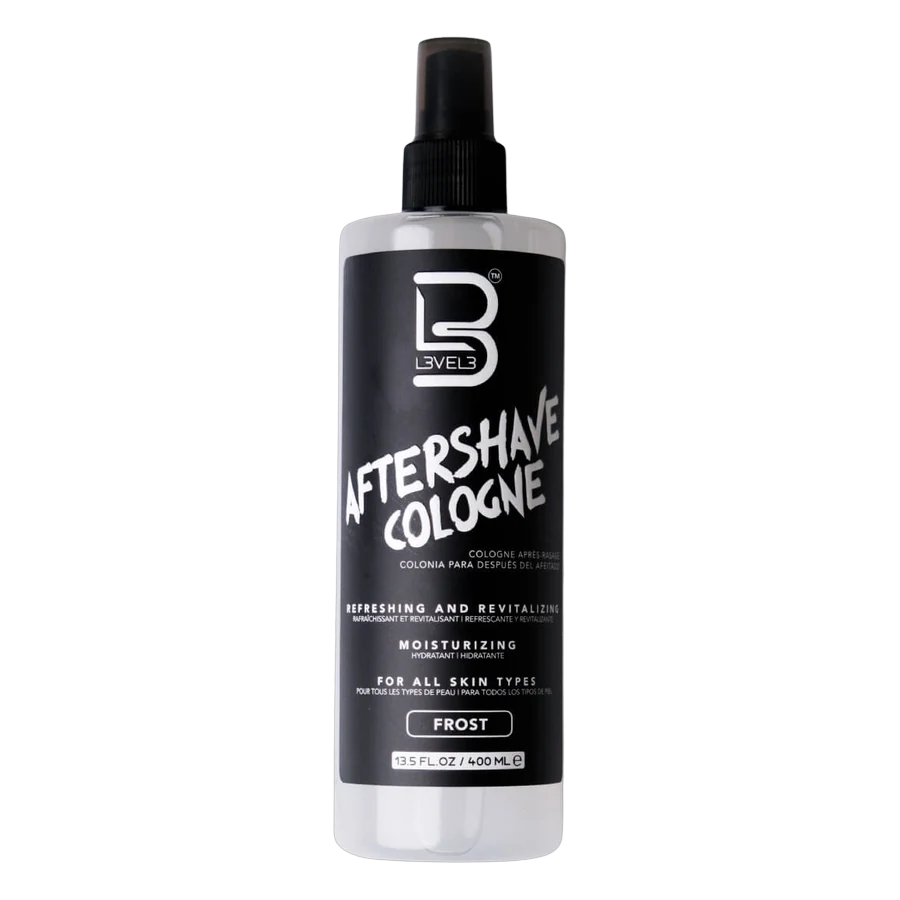
אפטרשייב קולון
אפטרשייב קולון פרוסט
המוצג בתמונה: 400 מ"ל400 מ"ל - ברקוד: E850036570943 · מחיר צרכן: ₪89100 מ"ל - ברקוד: E810119061706 · מחיר צרכן: ₪49
לצפייה ורכישה באתר
מדריך מקצועי מלא
פרוסט
ניחוח קריר וממריץ עם תחושת רעננות חדה. מתאים אחרי גילוח וללקוחות שאוהבים אפקט נקי ומרענן.
מדריך מקצועי: מערכת הצבע וגווני האלקטריק
שליטה אמיתית בצבע מתחילה לפני המריחה הראשונה: הבנת הבסיס, בחירת הגוון הנכון והכנת השיער בהתאם לתוצאה הרצויה. מערכת KRAY מיועדת לעבודות צבע יצירתיות, תוצאות חזקות, תיקוני גוון ומראות אופנתיים עם שליטה טובה יותר בתוצאה.
מה הקטגוריה נותנת למספרה
- גוונים חצי-קבועים לעבודה יצירתית, תיקוני צבע ומראות אופנתיים.
- הפקדת פיגמנט חזקה יותר על בסיסים מובהרים ומתאימים.
- אפשרות לערבוב גוונים ליצירת תוצאות אישיות ללקוח.
- שפה מסחרית ברורה: כל גוון עם מחיר, ברקוד וגודל אחיד.
- מתאים למכירה מקצועית סביב שירותי צבע ותיקוני גוון.
המלצת עבודה
- לבחון תמיד את רמת הבסיס לפני בחירת הגוון.
- גוונים פסטליים ובהירים דורשים לרוב בסיס בהיר מאוד.
- לשמור על תחזוקה עם מים קרירים ושמפו מתאים לצבע.
- להסביר ללקוח מראש את אופי הדהייה ואת הצורך בתחזוקה.
- למכור מוצרי תחזוקה ותיאום ביקור רענון צבע כחלק מהשירות.
הגוונים החזקים מיועדים ללקוחות שמחפשים נראות בולטת, תוצאה אופנתית או שינוי דרמטי. התוצאה תלויה ברמת הבסיס, ולכן חשוב להתאים ציפיות ולבחור גוון לפי השיער בפועל.
אלקטריק ורוד
ורוד נועז ומושך תשומת לב עם תוצאה חיה במיוחד על שיער מובהר.
פרופיל טכני
עוצמה 10/10; עמידות 4-8 שבועות; בסיס מומלץ 9+; דהייה לוורוד רך ופסטל.
מדריך שימוש
מראות אופנה והצהרה; מתאים לבלונד מובהר וללקוחות נועזים; תחזוקה עם שמפו שומר צבע, מים קרירים והגנת UV; שילוב עם סגול לטוני ברי או קליר לפסטל.
אלקטריק אדום
אדום אש אינטנסיבי עם רוויה מקסימלית לתוצאה דרמטית ובולטת.
עוצמה 10/10; עמידות 4-6 שבועות; בסיס מומלץ 7+; דהייה לקורל ואפרסק רך.
טרנספורמציות נועזות, עבודות אופנה ועריכה; תחזוקה במים קרירים ומינימום חום; שילוב עם כתום לאפקט אש או סגול לבורדו.
אלקטריק ירוק
ירוק חי ואמיתי עם רוויה חזקה למראה קריאייטיבי ובולט.
עוצמה 10/10; עמידות 6-10 שבועות; בסיס אידיאלי 9+; דהייה לסי-פום וירוק רך.
מראות אלטרנטיביים, קוספליי ופסטיבלים; תחזוקה עם שמפו שומר צבע ומים קרירים; שילוב עם צהוב לליים או כחול לטורקיז.
אלקטריק צהוב
צהוב שמש בהיר בעוצמה מקסימלית, מצוין גם כגוון ערבוב.
עוצמה 10/10; עמידות 3-5 שבועות; בסיס מומלץ 10; דהייה מהירה יחסית ודורשת רענון.
מראות יצירתיים, פסטיבלים וגווני מיקס; תחזוקה עם מוצרים שומרי צבע וחשיפה נמוכה לשמש; שילוב עם כתום לזהב או דילול לגוון חמאה רך.
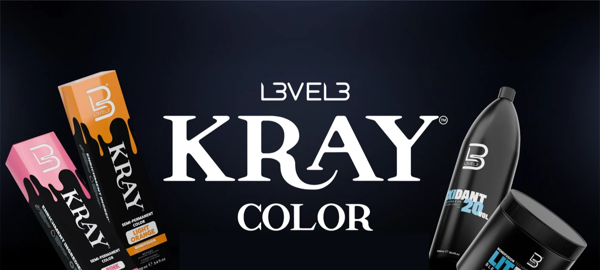
צבע והבהרה
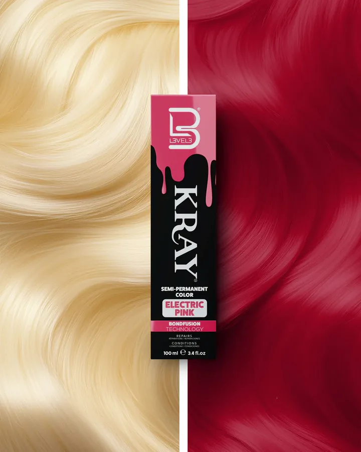
צבע והבהרה
צבע אלקטריק ורוד
ברקוד: E810119063007מחיר צרכן: ₪60
לצפייה ורכישה באתר
מדריך מקצועי מלא
אלקטריק ורוד
ורוד נועז ומושך תשומת לב עם תוצאה חיה במיוחד על שיער מובהר.
פרופיל טכני
עוצמה 10/10; עמידות 4-8 שבועות; בסיס מומלץ 9+; דהייה לוורוד רך ופסטל.
מדריך שימוש
מראות אופנה והצהרה; מתאים לבלונד מובהר וללקוחות נועזים; תחזוקה עם שמפו שומר צבע, מים קרירים והגנת UV; שילוב עם סגול לטוני ברי או קליר לפסטל.
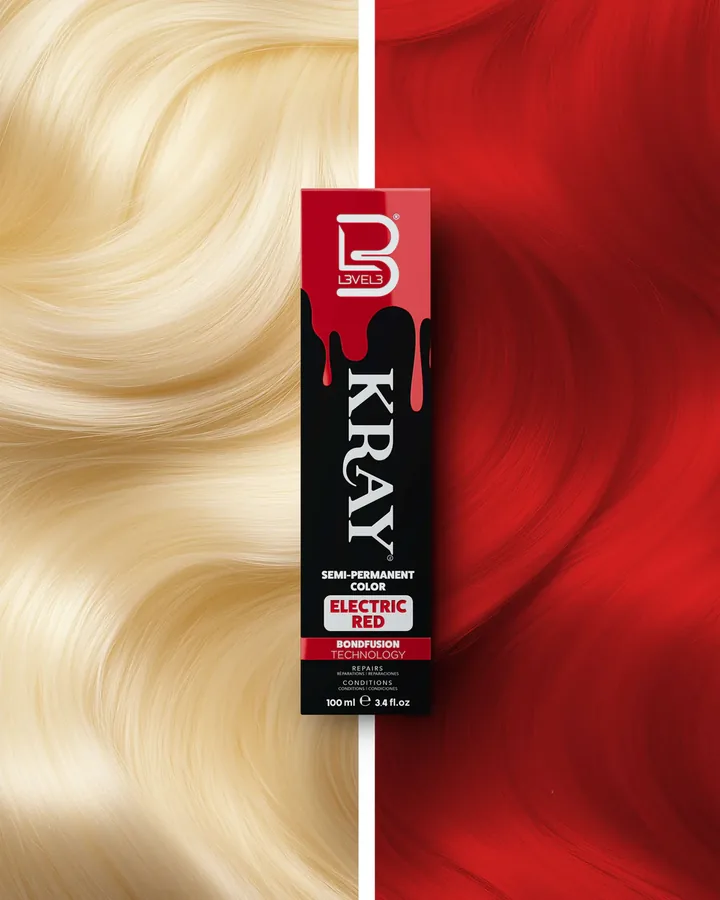
צבע והבהרה
צבע אלקטריק אדום
ברקוד: E810119062987מחיר צרכן: ₪60
לצפייה ורכישה באתר
מדריך מקצועי מלא
אלקטריק אדום
אדום אש אינטנסיבי עם רוויה מקסימלית לתוצאה דרמטית ובולטת.
פרופיל טכני
עוצמה 10/10; עמידות 4-6 שבועות; בסיס מומלץ 7+; דהייה לקורל ואפרסק רך.
מדריך שימוש
טרנספורמציות נועזות, עבודות אופנה ועריכה; תחזוקה במים קרירים ומינימום חום; שילוב עם כתום לאפקט אש או סגול לבורדו.
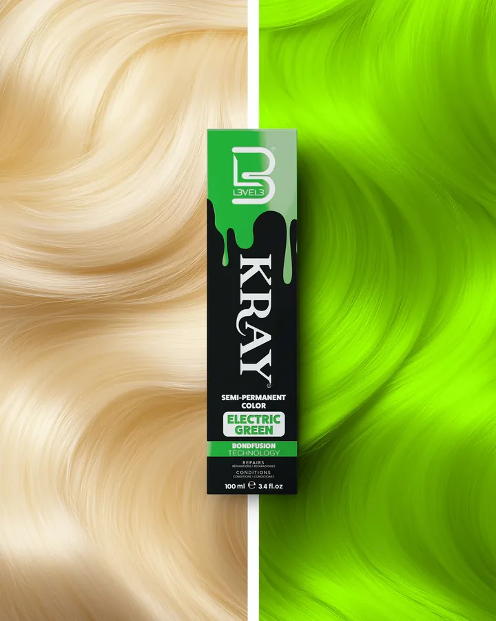
צבע והבהרה
צבע אלקטריק ירוק
ברקוד: E810119062994מחיר צרכן: ₪60
לצפייה ורכישה באתר
מדריך מקצועי מלא
אלקטריק ירוק
ירוק חי ואמיתי עם רוויה חזקה למראה קריאייטיבי ובולט.
פרופיל טכני
עוצמה 10/10; עמידות 6-10 שבועות; בסיס אידיאלי 9+; דהייה לסי-פום וירוק רך.
מדריך שימוש
מראות אלטרנטיביים, קוספליי ופסטיבלים; תחזוקה עם שמפו שומר צבע ומים קרירים; שילוב עם צהוב לליים או כחול לטורקיז.
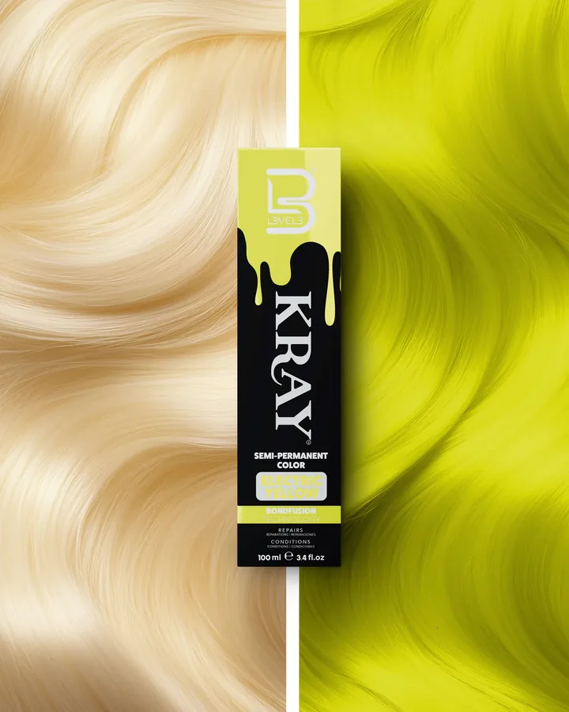
צבע והבהרה
צבע אלקטריק צהוב
ברקוד: E810119063014מחיר צרכן: ₪60
לצפייה ורכישה באתר
מדריך מקצועי מלא
אלקטריק צהוב
צהוב שמש בהיר בעוצמה מקסימלית, מצוין גם כגוון ערבוב.
פרופיל טכני
עוצמה 10/10; עמידות 3-5 שבועות; בסיס מומלץ 10; דהייה מהירה יחסית ודורשת רענון.
מדריך שימוש
מראות יצירתיים, פסטיבלים וגווני מיקס; תחזוקה עם מוצרים שומרי צבע וחשיפה נמוכה לשמש; שילוב עם כתום לזהב או דילול לגוון חמאה רך.
מדריך מקצועי: גוונים בהירים, פסטליים ואפור קר למיקס מדויק
גווני הלייט והאפור דורשים מקום ברור כי הם עובדים בעיקר דרך עדינות, בסיס נכון ויחסי ערבוב. כאן מופיע הידע המלא על כל גוון בלי חיתוך, כדי שאפשר יהיה להסביר ללקוח למה התוצאה תלויה ברמת ההבהרה ובתחזוקה.
כחול לייט
כחול שמיים עדין לתוצאה פסטלית וחולמנית.
פרופיל טכני
עוצמה 6/10; עמידות 4-6 שבועות; בסיס מומלץ 10; דהייה לכחול-אפור רך ובלונד נייטרלי.
מדריך שימוש
פסטלים, מראה מרמייד וגוונים קרירים בהירים; תחזוקה עם שמפו שומר צבע ומים קרירים; שילוב עם כחול לעומק או קליר לטון קרח.
סגול לייט
סגול פסטלי רך למראה רומנטי ועדין.
עוצמה 6/10; עמידות 3-5 שבועות; בסיס מומלץ 10; דהייה ללילך רך ובלונד קר.
פסטלים ומראות אופנה רכים; מתאים ללקוח שרוצה שינוי עדין אך נראה; תחזוקה עם מים קרירים ומינימום חום; אפשר לשכבות מעל סגול או לערבב עם קליר.
כתום לייט
כתום אפרסקי רך עם חמימות עדינה ולבישה.
עוצמה 6/10; עמידות 3-5 שבועות; בסיס מומלץ 9+; דהייה לאפרסק רך ובלונד חם.
צבע אופנה עדין וחמימות טבעית; מתאים ללקוחות שרוצים גוון לביש; תחזוקה במים קרירים ומינימום חום; שילוב עם כתום לעומק או ורוד לקורל.
אפור
אפור קר ומודרני למראות כסף, פחם וגימור אופנתי. מתאים במיוחד כשרוצים תוצאה מתוחכמת, נקייה ופחות צבעונית.
עוצמה 7/10; עמידות 4-8 שבועות; בסיס מומלץ 10 ללא חום; דהייה לסילבר-בלונד רך. לתוצאה נקייה חשוב בסיס בהיר ונקי מגוונים כתומים/צהובים.
טרנדים כסופים, גוונים קרים ותיקון חמימות; תחזוקה עם שמפו סגול ומים קרירים; שילוב עם סגול לנטרול חום או שחור לפחם עמוק.
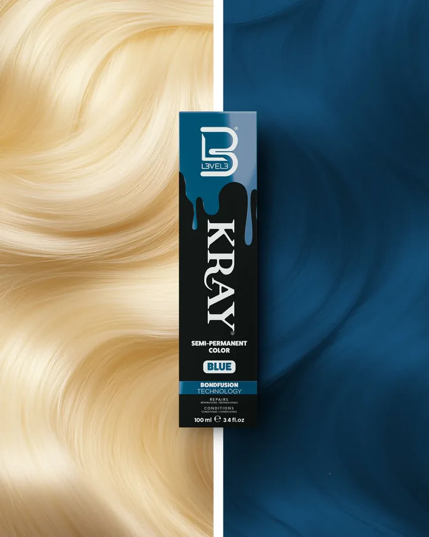
צבע והבהרה
צבע כחול לייט
ברקוד: E810119063083מחיר צרכן: ₪60
לצפייה ורכישה באתר
מדריך מקצועי מלא
כחול לייט
כחול שמיים עדין לתוצאה פסטלית וחולמנית.
פרופיל טכני
עוצמה 6/10; עמידות 4-6 שבועות; בסיס מומלץ 10; דהייה לכחול-אפור רך ובלונד נייטרלי.
מדריך שימוש
פסטלים, מראה מרמייד וגוונים קרירים בהירים; תחזוקה עם שמפו שומר צבע ומים קרירים; שילוב עם כחול לעומק או קליר לטון קרח.
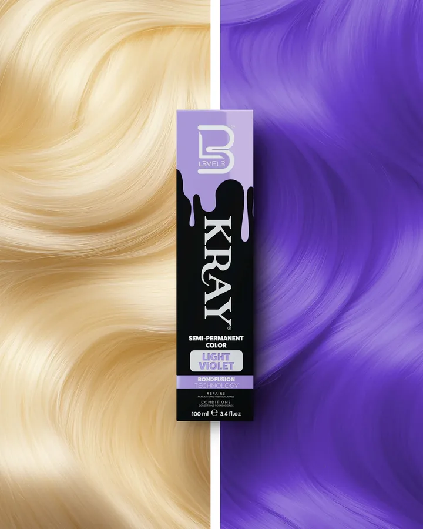
צבע והבהרה
צבע סגול לייט
ברקוד: E810119063076מחיר צרכן: ₪60
לצפייה ורכישה באתר
מדריך מקצועי מלא
סגול לייט
סגול פסטלי רך למראה רומנטי ועדין.
פרופיל טכני
עוצמה 6/10; עמידות 3-5 שבועות; בסיס מומלץ 10; דהייה ללילך רך ובלונד קר.
מדריך שימוש
פסטלים ומראות אופנה רכים; מתאים ללקוח שרוצה שינוי עדין אך נראה; תחזוקה עם מים קרירים ומינימום חום; אפשר לשכבות מעל סגול או לערבב עם קליר.
צבע והבהרה
צבע כתום לייט
ברקוד: E810119063120מחיר צרכן: ₪60
לצפייה ורכישה באתר
מדריך מקצועי מלא
כתום לייט
כתום אפרסקי רך עם חמימות עדינה ולבישה.
פרופיל טכני
עוצמה 6/10; עמידות 3-5 שבועות; בסיס מומלץ 9+; דהייה לאפרסק רך ובלונד חם.
מדריך שימוש
צבע אופנה עדין וחמימות טבעית; מתאים ללקוחות שרוצים גוון לביש; תחזוקה במים קרירים ומינימום חום; שילוב עם כתום לעומק או ורוד לקורל.
צבע והבהרה
צבע אפור
ברקוד: E810119063069מחיר צרכן: ₪60
לצפייה ורכישה באתר
מדריך מקצועי מלא
אפור
אפור קר ומודרני למראות כסף, פחם וגימור אופנתי. מתאים במיוחד כשרוצים תוצאה מתוחכמת, נקייה ופחות צבעונית.
פרופיל טכני
עוצמה 7/10; עמידות 4-8 שבועות; בסיס מומלץ 10 ללא חום; דהייה לסילבר-בלונד רך. לתוצאה נקייה חשוב בסיס בהיר ונקי מגוונים כתומים/צהובים.
מדריך שימוש
טרנדים כסופים, גוונים קרים ותיקון חמימות; תחזוקה עם שמפו סגול ומים קרירים; שילוב עם סגול לנטרול חום או שחור לפחם עמוק.
מדריך מקצועי: גוונים לבישים, פסטליים ומעמיקים למיקס מקצועי
עמוד זה מרכז גוונים שמתאימים לבניית עומק, יצירת פסטלים, מראות רכים ותיקוני כיוון. בחירה נכונה לפי בסיס השיער תעזור לייצר תוצאה צפויה ומכירה מקצועית יותר.
שחור
שחור עשיר ועמוק ליצירת עומק, דרמה ושורשי צל.
פרופיל טכני
עוצמה 10/10; עמידות 6-10 שבועות; מתאים לכל הרמות; דהייה לפחם ואפור רך.
מדריך שימוש
שורשי צל, עומק ומראות דרמטיים; מתאים ללקוחות שרוצים צבע עמוק; תחזוקה עם שמפו שומר צבע ומינימום חום; שילוב עם כל גוון להעמקה.
ורוד
ורוד קלאסי ונגיש למראה רך, לביש ומחמיא.
עוצמה 8/10; עמידות 4-6 שבועות; בסיס מומלץ 9+; דהייה לוורוד רך ובלונד חם.
מראות רומנטיים וצבע אופנה לביש; מתאים ללקוחות צבע ראשונים; תחזוקה עם שמפו שומר צבע ומים קרירים; שילוב עם סגול לברי, אדום לקורל או קליר לרוז.
אדום
אדום קלאסי עם עוצמה מאוזנת לתוצאה חמה ומרשימה.
עוצמה 8/10; עמידות 4-6 שבועות; בסיס מומלץ 7+; דהייה לקורל וגוונים חמים.
אדומים קלאסיים ושינויים חמים; מתאים ללקוחות שרוצים אדום ברור בלי קיצוניות; תחזוקה במים קרירים ומינימום חום; שילוב עם סגול לבורדו או כתום לנחושת.
ירוק
ירוק אמיתי בעוצמה מאוזנת לתוצאה בולטת אך לבישה.
עוצמה 8/10; עמידות 6-10 שבועות; בסיס מומלץ 9+; דהייה לטונים ירוקים רכים.
מראות טבע יצירתיים וצבע אופנה מאוזן; תחזוקה עם מים קרירים והימנעות מכלור; שילוב עם צהוב לליים, כחול לטורקיז או קליר למנטה.
צבע והבהרה
צבע שחור
ברקוד: E810119063113מחיר צרכן: ₪60
לצפייה ורכישה באתר
מדריך מקצועי מלא
שחור
שחור עשיר ועמוק ליצירת עומק, דרמה ושורשי צל.
פרופיל טכני
עוצמה 10/10; עמידות 6-10 שבועות; מתאים לכל הרמות; דהייה לפחם ואפור רך.
מדריך שימוש
שורשי צל, עומק ומראות דרמטיים; מתאים ללקוחות שרוצים צבע עמוק; תחזוקה עם שמפו שומר צבע ומינימום חום; שילוב עם כל גוון להעמקה.
צבע והבהרה
צבע ורוד
ברקוד: E810119063052מחיר צרכן: ₪60
לצפייה ורכישה באתר
מדריך מקצועי מלא
ורוד
ורוד קלאסי ונגיש למראה רך, לביש ומחמיא.
פרופיל טכני
עוצמה 8/10; עמידות 4-6 שבועות; בסיס מומלץ 9+; דהייה לוורוד רך ובלונד חם.
מדריך שימוש
מראות רומנטיים וצבע אופנה לביש; מתאים ללקוחות צבע ראשונים; תחזוקה עם שמפו שומר צבע ומים קרירים; שילוב עם סגול לברי, אדום לקורל או קליר לרוז.
צבע והבהרה
צבע אדום
ברקוד: E810119063038מחיר צרכן: ₪60
לצפייה ורכישה באתר
מדריך מקצועי מלא
אדום
אדום קלאסי עם עוצמה מאוזנת לתוצאה חמה ומרשימה.
פרופיל טכני
עוצמה 8/10; עמידות 4-6 שבועות; בסיס מומלץ 7+; דהייה לקורל וגוונים חמים.
מדריך שימוש
אדומים קלאסיים ושינויים חמים; מתאים ללקוחות שרוצים אדום ברור בלי קיצוניות; תחזוקה במים קרירים ומינימום חום; שילוב עם סגול לבורדו או כתום לנחושת.
צבע והבהרה
צבע ירוק
ברקוד: E810119063106מחיר צרכן: ₪60
לצפייה ורכישה באתר
מדריך מקצועי מלא
ירוק
ירוק אמיתי בעוצמה מאוזנת לתוצאה בולטת אך לבישה.
פרופיל טכני
עוצמה 8/10; עמידות 6-10 שבועות; בסיס מומלץ 9+; דהייה לטונים ירוקים רכים.
מדריך שימוש
מראות טבע יצירתיים וצבע אופנה מאוזן; תחזוקה עם מים קרירים והימנעות מכלור; שילוב עם צהוב לליים, כחול לטורקיז או קליר למנטה.
מדריך מקצועי: גווני מיקס, עומק ותיקון לתוצאה מדויקת
גווני KRAY מציגים כל גוון בצורה ברורה ומקצועית, עם תמונה קריאה וכל הידע הדרוש לעבודה מדויקת. הגוונים האלו מיועדים לבניית חום או קור, העמקה, תיקון גוון ויצירת תוצאות אופנה מותאמות.
צהוב
צהוב זהוב וחם לתוצאה שמשית ורכה יותר מאלקטריק.
פרופיל טכני
עוצמה 8/10; עמידות 3-5 שבועות; בסיס מומלץ 10; דהייה לבלונד חם.
מדריך שימוש
גווני זהב, מראות חמים ומיקס מותאם; תחזוקה במים קרירים וחום נמוך; שילוב עם כתום לזהב, ירוק לצ׳ארטרז׳ או קליר לחמאה.
כחול
כחול קלאסי עם עוצמה מאוזנת לתוצאות יציבות וערבובים.
עוצמה 9/10; עמידות 6-10 שבועות; בסיס מומלץ 9+; דהייה לטוני כחול ולעיתים ירקרק בשיער נקבובי.
צבעי אופנה, מראות ים ומיקס מותאם; תחזוקה ללא שמפו מנקה עמוק; שילוב עם ירוק לטורקיז או סגול לכחול מלכותי.
סגול
סגול עשיר ויוקרתי עם עומק לביטוי עצמי נועז.
עוצמה 9/10; עמידות 6-10 שבועות; בסיס מומלץ 8+; דהייה ללוונדר וטונים קרים רכים.
צבע הצהרה, מראה יצירתי וגימור יוקרתי; תחזוקה עם שמפו מתאים לשמירה על צבע, מים קרירים והגנת UV; שילוב עם כחול לסגול עמוק או ורוד לברי.
כתום
כתום חם, חי ואנרגטי לתוצאה קורנת ובולטת.
עוצמה 9/10; עמידות 4-6 שבועות; בסיס מומלץ 8+; דהייה לאפרסק ובלונד חם.
מראות חמים, סתיו ואנרגיה גבוהה; מתאים לתת-גוונים חמים; תחזוקה במים קרירים וחום מתון; שילוב עם אדום לאש, צהוב לזהב או ורוד לקורל.
צבע והבהרה
צבע צהוב
ברקוד: E810119063045מחיר צרכן: ₪60
לצפייה ורכישה באתר
מדריך מקצועי מלא
צהוב
צהוב זהוב וחם לתוצאה שמשית ורכה יותר מאלקטריק.
פרופיל טכני
עוצמה 8/10; עמידות 3-5 שבועות; בסיס מומלץ 10; דהייה לבלונד חם.
מדריך שימוש
גווני זהב, מראות חמים ומיקס מותאם; תחזוקה במים קרירים וחום נמוך; שילוב עם כתום לזהב, ירוק לצ׳ארטרז׳ או קליר לחמאה.
צבע והבהרה
צבע כחול
ברקוד: E810119063021מחיר צרכן: ₪60
לצפייה ורכישה באתר
מדריך מקצועי מלא
כחול
כחול קלאסי עם עוצמה מאוזנת לתוצאות יציבות וערבובים.
פרופיל טכני
עוצמה 9/10; עמידות 6-10 שבועות; בסיס מומלץ 9+; דהייה לטוני כחול ולעיתים ירקרק בשיער נקבובי.
מדריך שימוש
צבעי אופנה, מראות ים ומיקס מותאם; תחזוקה ללא שמפו מנקה עמוק; שילוב עם ירוק לטורקיז או סגול לכחול מלכותי.
צבע והבהרה
צבע סגול
ברקוד: E810119063090מחיר צרכן: ₪60
לצפייה ורכישה באתר
מדריך מקצועי מלא
סגול
סגול עשיר ויוקרתי עם עומק לביטוי עצמי נועז.
פרופיל טכני
עוצמה 9/10; עמידות 6-10 שבועות; בסיס מומלץ 8+; דהייה ללוונדר וטונים קרים רכים.
מדריך שימוש
צבע הצהרה, מראה יצירתי וגימור יוקרתי; תחזוקה עם שמפו מתאים לשמירה על צבע, מים קרירים והגנת UV; שילוב עם כחול לסגול עמוק או ורוד לברי.
צבע והבהרה
צבע כתום
ברקוד: E810119063137מחיר צרכן: ₪60
לצפייה ורכישה באתר
מדריך מקצועי מלא
כתום
כתום חם, חי ואנרגטי לתוצאה קורנת ובולטת.
פרופיל טכני
עוצמה 9/10; עמידות 4-6 שבועות; בסיס מומלץ 8+; דהייה לאפרסק ובלונד חם.
מדריך שימוש
מראות חמים, סתיו ואנרגיה גבוהה; מתאים לתת-גוונים חמים; תחזוקה במים קרירים וחום מתון; שילוב עם אדום לאש, צהוב לזהב או ורוד לקורל.
צבע והבהרה
קליר
מק"ט: L3-COLOR-CLEAR-250MLמחיר צרכן: ₪60גודל: 250 מ"ל
לצפייה ורכישה באתר
מדריך מקצועי מלא
קליר הוא כלי עבודה מרכזי: מיקסר ללא פיגמנט שמדלל צבע, יוצר פסטלים מדויקים ומוסיף ברק וגלוס לכל גוון KRAY — שליטה מלאה בעוצמת הצבע ובגימור.
קליר
מיקסר שקוף וחסר פיגמנט מסדרת KRAY — הכלי המקצועי לשליטה מלאה בעוצמת הצבע. מדלל כל גוון ליצירת פסטלים מדויקים, מאריך ומאזן גוונים ומוסיף ברק וגלוס בלי לשנות את הצבע עצמו. אפשר להשתמש בו גם לבדו כטיפול ברק (גלוס) על שיער טבעי או צבוע.
פרופיל טכני
עוצמה: 0/10 (ללא פיגמנט). תפקיד: מדלל, מאריך גוון, מאזן ומוסיף גלוס. מתאים לכל רמות הבסיס; עמידות בהתאם לגוון שאליו מערבבים. סמי-פרמננטי, ללא אמוניה וללא חמצן.
מדריך שימוש
יחסי ערבוב: 1:1 לפסטל רך, 1:2 לפסטל עדין מאוד, 1:3 לנגיעת צבע, או לבד כטיפול גלוס/ברק בלבד. למרוח על שיער נקי, להשהות לפי הוראות הגוון ולשטוף. תחזוקה: שמפו שומר צבע ומים קרירים לשמירה על הברק.
50 גרם
צבע והבהרה
אבקת הבהרה 50 גרם
הרמה עד 9+ רמות בטכניקה נכונה ובבחירת חמצן מתאימה
ברקוד: E810119064158מחיר צרכן: ₪26גודל: 50 גרם
לצפייה ורכישה באתר
מדריך מקצועי מלא
הבהרה היא כימיה מקצועית. אבקת ההבהרה של L3VEL3 מיועדת להרמה גבוהה תוך שמירה על עבודה נקייה, מרקם קרמי ויכולת שליטה טובה יותר בתהליך. יש לעבוד לפי הנחיות מקצועיות, לבצע בדיקת קווצה ולעקוב אחרי מצב השיער לאורך כל השירות.
אבקת הבהרה 9+
הרמה עד 9+ רמות בטכניקה נכונה ובבחירת חמצן מתאימה
- פורמולה ללא אבק לנוחות עבודה טובה יותר.
- מרקם קרמי וחלק כאשר מערבבים ביחס נכון.
- מתאימה לטכניקות הבהרה: ניירות, בליאז׳, הבהרה מלאה ותיקונים.
- רכיבי טיפוח מסייעים לשמור על תחושת השיער בזמן תהליך ההבהרה.
- שמן זית תורם ללחות ומסייע להפחתת תחושת יובש ופריז.
- קריאטין תומך בתחושת חוזק ומראה שיער בריא יותר לאחר פעולה כימית.
אופן שימוש וטיפים
- יחס ערבוב מומלץ: 1:2 אבקה לחמצן לקבלת מרקם עבודה נכון.
- להתאים את חוזק החמצן למטרת העבודה ולמצב השיער.
- למרוח על שיער יבש ולא חפוף לקבלת תהליך הרמה טוב יותר.
- לעקוב אחרי תהליך ההבהרה ולבדוק כל כ-10 דקות.
- לא לעבור זמן עיבוד מקסימלי של 50 דקות.
- בריאות השיער קודמת לתוצאה. לא להמשיך אם השיער אינו עומד בתהליך.
- לא תמיד חמצן גבוה יותר נותן תוצאה טובה יותר. טכניקה וניטור חשובים יותר.
המלצות שילוב
- לשלב עם חמצן מתאים: 10, 20 או 30 לפי מטרת השירות.
- לאחר הבהרה אפשר לעבוד עם גווני KRAY לתוצאה יצירתית.
- להמליץ ללקוח על תחזוקה מתאימה לשיער מובהר וצבוע.
אבקת ההבהרה אינה רק מוצר הרמה. היא חלק ממערכת מקצועית שדורשת התאמת חמצן, יחס ערבוב מדויק, בדיקת קווצה, ניטור בזמן אמת ושמירה על בריאות השיער לפני התוצאה הסופית.
פרופיל ביצועים טכני
- יכולת הרמה: עד 9+ רמות בטכניקה נכונה ובבחירת חמצן מתאימה.
- רמת אבק: פורמולה ללא אבק לנוחות מריחה ועבודה נקייה יותר.
- מרקם: תערובת חלקה וקרמית כאשר מערבבים נכון.
- הגנת שיער: מכילה רכיבי טיפוח המסייעים לשמור על תחושת ובריאות השיער בזמן הפעולה.
רכיבים מרכזיים
- שמן זית: מעניק לחות טבעית, מכיל חומצות שומן חיוניות ומסייע להפחית יובש ופריז במהלך ההבהרה.
- קריאטין: נגזרת חומצה אמינית בעלת אופי מחזק, המסייעת לתמוך במבנה השיער בזמן ואחרי פעולה כימית.
אופן שימוש מלא
- יחס ערבוב: 1:2 אבקה לחמצן לקבלת מרקם אופטימלי.
- בחירת חמצן: 10 ווליום להפקדה/טונר והרמה עדינה; 20 ווליום להרמה סטנדרטית וכיסוי שיבה; 30 ווליום להרמה גבוהה ומהירה יותר.
- מריחה: לעבוד על שיער יבש ולא חפוף לקבלת הרמה טובה יותר.
- עיבוד: לעקוב בזהירות ולעבד עד רמת ההרמה הרצויה.
- זמן מקסימלי: לא לעבור 50 דקות.
- שטיפה: לשטוף היטב כאשר רמת ההבהרה הרצויה הושגה.
מדריך שימוש מקצועי
- מתאים לכל שירותי ההבהרה: ניירות, בליאז׳, הבהרה מלאה ותיקוני צבע.
- רמת מיומנות: מקצועית, דורשת הכשרה וניסיון לתוצאות בטוחות ואפקטיביות.
- בטיחות: לבצע בדיקת קווצה, לפעול לפי הנחיות יצרן ולא לעבור זמן עיבוד מומלץ.
טיפים מקצועיים ושילובים
- תמיד לבצע בדיקת קווצה לפני מריחה מלאה.
- לנטר את תהליך ההרמה מקרוב ולבדוק בערך כל 10 דקות.
- בריאות השיער קודמת. לא לעבור את זמן העיבוד המומלץ.
- בחום גוף או כובע עיבוד כדאי להשתמש בחמצן נמוך יותר לפי מצב השיער.
- חמצן גבוה יותר לא תמיד נותן תוצאה טובה יותר. טכניקה חשובה יותר מעוצמה.
המלצות שילוב
- לאחר ההבהרה אפשר לעבוד עם גווני KRAY, למשל סגול לנטרול או גוון יצירתי אחר לפי בסיס השיער.
- להמליץ לכל לקוח מובהר על תחזוקה מתאימה לשיער מובהר וצבוע.
 500 גרם
500 גרםצבע והבהרה
אבקת הבהרה 500 גרם
הרמה עד 9+ רמות בטכניקה נכונה ובבחירת חמצן מתאימה
ברקוד: המידע לא זמין בקבצים שסופקומחיר צרכן: ₪89גודל: 500 גרם
לצפייה ורכישה באתר
מדריך מקצועי מלא
הבהרה היא כימיה מקצועית. אבקת ההבהרה של L3VEL3 מיועדת להרמה גבוהה תוך שמירה על עבודה נקייה, מרקם קרמי ויכולת שליטה טובה יותר בתהליך. יש לעבוד לפי הנחיות מקצועיות, לבצע בדיקת קווצה ולעקוב אחרי מצב השיער לאורך כל השירות.
אבקת הבהרה 9+
הרמה עד 9+ רמות בטכניקה נכונה ובבחירת חמצן מתאימה
- פורמולה ללא אבק לנוחות עבודה טובה יותר.
- מרקם קרמי וחלק כאשר מערבבים ביחס נכון.
- מתאימה לטכניקות הבהרה: ניירות, בליאז׳, הבהרה מלאה ותיקונים.
- רכיבי טיפוח מסייעים לשמור על תחושת השיער בזמן תהליך ההבהרה.
- שמן זית תורם ללחות ומסייע להפחתת תחושת יובש ופריז.
- קריאטין תומך בתחושת חוזק ומראה שיער בריא יותר לאחר פעולה כימית.
אופן שימוש וטיפים
- יחס ערבוב מומלץ: 1:2 אבקה לחמצן לקבלת מרקם עבודה נכון.
- להתאים את חוזק החמצן למטרת העבודה ולמצב השיער.
- למרוח על שיער יבש ולא חפוף לקבלת תהליך הרמה טוב יותר.
- לעקוב אחרי תהליך ההבהרה ולבדוק כל כ-10 דקות.
- לא לעבור זמן עיבוד מקסימלי של 50 דקות.
- בריאות השיער קודמת לתוצאה. לא להמשיך אם השיער אינו עומד בתהליך.
- לא תמיד חמצן גבוה יותר נותן תוצאה טובה יותר. טכניקה וניטור חשובים יותר.
המלצות שילוב
- לשלב עם חמצן מתאים: 10, 20 או 30 לפי מטרת השירות.
- לאחר הבהרה אפשר לעבוד עם גווני KRAY לתוצאה יצירתית.
- להמליץ ללקוח על תחזוקה מתאימה לשיער מובהר וצבוע.
אבקת ההבהרה אינה רק מוצר הרמה. היא חלק ממערכת מקצועית שדורשת התאמת חמצן, יחס ערבוב מדויק, בדיקת קווצה, ניטור בזמן אמת ושמירה על בריאות השיער לפני התוצאה הסופית.
פרופיל ביצועים טכני
- יכולת הרמה: עד 9+ רמות בטכניקה נכונה ובבחירת חמצן מתאימה.
- רמת אבק: פורמולה ללא אבק לנוחות מריחה ועבודה נקייה יותר.
- מרקם: תערובת חלקה וקרמית כאשר מערבבים נכון.
- הגנת שיער: מכילה רכיבי טיפוח המסייעים לשמור על תחושת ובריאות השיער בזמן הפעולה.
רכיבים מרכזיים
- שמן זית: מעניק לחות טבעית, מכיל חומצות שומן חיוניות ומסייע להפחית יובש ופריז במהלך ההבהרה.
- קריאטין: נגזרת חומצה אמינית בעלת אופי מחזק, המסייעת לתמוך במבנה השיער בזמן ואחרי פעולה כימית.
אופן שימוש מלא
- יחס ערבוב: 1:2 אבקה לחמצן לקבלת מרקם אופטימלי.
- בחירת חמצן: 10 ווליום להפקדה/טונר והרמה עדינה; 20 ווליום להרמה סטנדרטית וכיסוי שיבה; 30 ווליום להרמה גבוהה ומהירה יותר.
- מריחה: לעבוד על שיער יבש ולא חפוף לקבלת הרמה טובה יותר.
- עיבוד: לעקוב בזהירות ולעבד עד רמת ההרמה הרצויה.
- זמן מקסימלי: לא לעבור 50 דקות.
- שטיפה: לשטוף היטב כאשר רמת ההבהרה הרצויה הושגה.
מדריך שימוש מקצועי
- מתאים לכל שירותי ההבהרה: ניירות, בליאז׳, הבהרה מלאה ותיקוני צבע.
- רמת מיומנות: מקצועית, דורשת הכשרה וניסיון לתוצאות בטוחות ואפקטיביות.
- בטיחות: לבצע בדיקת קווצה, לפעול לפי הנחיות יצרן ולא לעבור זמן עיבוד מומלץ.
טיפים מקצועיים ושילובים
- תמיד לבצע בדיקת קווצה לפני מריחה מלאה.
- לנטר את תהליך ההרמה מקרוב ולבדוק בערך כל 10 דקות.
- בריאות השיער קודמת. לא לעבור את זמן העיבוד המומלץ.
- בחום גוף או כובע עיבוד כדאי להשתמש בחמצן נמוך יותר לפי מצב השיער.
- חמצן גבוה יותר לא תמיד נותן תוצאה טובה יותר. טכניקה חשובה יותר מעוצמה.
המלצות שילוב
- לאחר ההבהרה אפשר לעבוד עם גווני KRAY, למשל סגול לנטרול או גוון יצירתי אחר לפי בסיס השיער.
- להמליץ לכל לקוח מובהר על תחזוקה מתאימה לשיער מובהר וצבוע.
מדריך מקצועי: בחירת חמצן ועבודה מדויקת
שלושת המחמצנים המקצועיים של L3VEL3 — 10, 20 ו-30 ווליום — הם הבסיס לכל שירות צבע והבהרה. הווליום קובע את מידת ההרמה, מהירות העיבוד ועומק הצבע, ומאפשר תוצאה מדויקת, עקבית ובטוחה יותר על כל סוג שיער.
מפתח חמצן, הנקרא גם מחמצן או פרוקסיד, מפעיל את פעולת ההרמה והפקדת הצבע של אבקת הבהרה וצבע קבוע. הווליום שבוחרים קובע כמה הרמה תושג וכמה עמוק הצבע יחדור לשיער. הבנה נכונה של מתי להשתמש בכל ווליום היא חיונית להשגת התוצאה הרצויה תוך שמירה על בריאות השיער.
מדריך ווליום
- 10 Volume / 3%: הפקדה בלבד, הרמה מינימלית של 0-1 רמות.
- 20 Volume / 6%: הרמה סטנדרטית של 1-2 רמות וכיסוי שיבה.
- 30 Volume / 9%: הרמה גבוהה יותר של 2-3 רמות ועיבוד מהיר יותר.
כללי עבודה מומלצים
- למדוד במדויק. יחס ערבוב נכון שומר על עקביות ותוצאה צפויה.
- לבחור ווליום לפי מטרת השירות ולא לפי הרגל קבוע.
- להתחשב בהיסטוריית השיער. שיער צבוע או פגום צריך טיפול עדין יותר.
- לנטר זמן עיבוד. ווליום גבוה עובד מהר יותר ולכן בודקים לעיתים קרובות.
יחסי ערבוב
- עם אבקת הבהרה: יחס 1:2 בין אבקה לחמצן.
- עם צבע קבוע: לפעול לפי הוראות יצרן הצבע, לרוב 1:1 או 1:1.5.
Oxy Cream Developer 10 Volume
האפשרות העדינה. 10 ווליום מיועד לשירותי הפקדת צבע בלבד, טונינג והתאמות עדינות. הוא פותח את הקוטיקולה במידה שמאפשרת למולקולות הצבע להיכנס בלי הרמה משמעותית. מתאים במיוחד להכהיה, להפקדת טונר או לרענון צבע קיים.
פרופיל ביצועים טכני
- ריכוז פרוקסיד: 3%.
- יכולת הרמה: 0-1 רמות, ממוקד בהפקדת צבע.
- מהירות עיבוד: איטית ועדינה יותר.
- השפעה על השיער: פתיחת קוטיקולה מינימלית.
מתי להשתמש ב-10 Volume
- הפקדת צבע על שיער מובהר.
- טונינג לאחר הבהרה.
- מעבר לגוון כהה יותר.
- רענון צבע שדהה.
- לקוחות עם שיער שביר, רגיש או פגום.
- טשטוש שיבה בשיער עמיד עם צבע מתאים.
Oxy Cream Developer 20 Volume
הסוס העבודה של שירותי הצבע. 20 ווליום הוא האפשרות הרב-שימושית ביותר ומתאים לרוב שירותי הצבע הסטנדרטיים. הוא נותן מספיק הרמה לשינוי של 1-2 רמות ועדיין מאפשר הפקדת צבע יעילה, ולכן הוא בחירה יומיומית בעבודת צבע.
- ריכוז פרוקסיד: 6%.
- יכולת הרמה: 1-2 רמות.
- מהירות עיבוד: סטנדרטית.
- השפעה על השיער: פתיחת קוטיקולה בינונית.
מתי להשתמש ב-20 Volume
- שירותי צבע סטנדרטיים עם הרמה של 1-2 רמות.
- כיסוי שיבה ברוב סוגי השיער.
- הדגשות עם מטרת הרמה מתונה.
- צבע מלא עם הבהרה עדינה.
- רוב שירותי הצבע הקבוע.
Oxy Cream Developer 30 Volume
האפשרות החזקה. 30 ווליום מספק הרמה משמעותית ללקוחות שרוצים הבהרה דרמטית יותר או לשיער עמיד שלא נפתח בקלות. חשוב להשתמש בו בזהירות: ווליום גבוה עובד מהר יותר ומעלה את פוטנציאל הנזק אם לא עוקבים אחרי התהליך.
- ריכוז פרוקסיד: 9%.
- יכולת הרמה: 2-3 רמות.
- מהירות עיבוד: מהירה.
- השפעה על השיער: פתיחת קוטיקולה משמעותית.
מתי להשתמש ב-30 Volume
- הבהרה משמעותית של 2-3 רמות ומעלה.
- שיער עמיד או קשה לפתיחה.
- שירותי High Lift.
- יישומי הבהרה שבהם נדרש עיבוד מהיר יותר.
- כאשר ווליומים נמוכים יותר לא סיפקו תוצאה מספקת.
צבע והבהרה
קרם חמצן 3%
10 ווליום · הפקדת צבע, טונינג והרמה עדינה
ברקוד: E850036570554מחיר צרכן: ₪38גודל: 1000 מ"ל
לצפייה ורכישה באתר
מדריך מקצועי מלא
מפתח צבע 3% L3VEL3 OXI – לתוצאות מדויקות, ברק עוצמתי וטיפוח אמיתי שדרגו את חוויית הצביעה עם L3VEL3 OXI – המפתח המקצועי לתוצאות עקביות, מדויקות ובריאות לשיער. הפורמולה המתקדמת שלנו זמינה בשלוש עוצמות: 10 Vol (3%), 20 Vol (6%), ו-30 Vol (9%) – להתאמה מלאה לצרכים שונים: מטונינג עדין ועד הבהרה משמעותית. OXI נועד לפעול בהרמוניה מושלמת עם מוצרי הצבע וההבהרה של L3VEL3, תוך שהוא מספק לא רק צבע חי ועמיד – אלא גם שמירה על לחות וסיב השערה. למה זה משנה את כללי המשחק? פורמולה מתקדמת עם חמצן (Hydrogen Peroxide) – מספקת הבהרה מדויקת ותוצאה עקבית. עשיר במרככים כמו Cetearyl Alcohol ו־PEG-40 Castor Oil – לשמירה על רכות ולחות השיער במהלך ואחרי הצביעה. מרקם קרמי סמיך ולא מטפטף – קל לערבוב ולמריחה מדויקת. מתאים לכל טכניקת עבודה – ניירות, עבודת יד חופשית ועוד. תוצאות צפויות ואחידות – על כל סוגי השיער. שימוש לשירות הבהרה: הכנה: ערבבו אבקת הבהרה L3VEL3 LIT עם OXI בקערה שאינה מתכתית, ביחס של 1:1 עד 1:3 בהתאם לטכניקה והמרקם הרצוי. מריחה: מרחו את התערובת על שיער יבש בעזרת מברשת. זמן עיבוד: עד 50 דקות, תוך בדיקה תקופתית למניעת עיבוד יתר. שטיפה: שטפו היטב במים, חפפו להסרת שאריות. שימוש לצביעת שיער: בחרו את עוצמת OXI בהתאם לרמת הכהות/בהירות הרצויה. ערבבו עם צבע השיער שבחרתם בקערה שאינה מתכתית, לפי הוראות היצרן. מרחו בעזרת בקבוק או מברשת על שיער יבש. השהיה: לפי זמן ההמלצה של יצרן הצבע. שטיפה: במים פושרים, חפיפה וטיפול לאחר צבע (קונדישינר או מסכה). טיפים: בצעו טסט רגישות לפני כל שימוש. העדיפו שימוש על שיער נקי ויבש. לשמירה על הצבע: השתמשו בשמפו ומרכך מותאמים לשיער צבעוני. סיכום: L3VEL3 OXI הוא השותף האידיאלי לכל שירות צבע – מצבע מלא ועד הבהרה דרמטית. עם נוסחה שמספקת גם תוצאה עוצמתית וגם הגנה אמיתית לשיער, OXI מאפשר לכם ליצור צבע עשיר, מדויק ובריא למראה. בחרו את הרמה המתאימה – וצבעו עם ביטחון.
צבע והבהרה
קרם חמצן 6%
20 ווליום · הרמה סטנדרטית וכיסוי שיבה
ברקוד: E850036570523מחיר צרכן: ₪38גודל: 1000 מ"ל
לצפייה ורכישה באתר
מדריך מקצועי מלא
מפתח צבע 6% L3VEL3 OXI – לתוצאות מדויקות, ברק עוצמתי וטיפוח אמיתי שדרגו את חוויית הצביעה עם L3VEL3 OXI – המפתח המקצועי לתוצאות עקביות, מדויקות ובריאות לשיער. הפורמולה המתקדמת שלנו זמינה בשלוש עוצמות: 10 Vol (3%), 20 Vol (6%), ו-30 Vol (9%) – להתאמה מלאה לצרכים שונים: מטונינג עדין ועד הבהרה משמעותית. OXI נועד לפעול בהרמוניה מושלמת עם מוצרי הצבע וההבהרה של L3VEL3, תוך שהוא מספק לא רק צבע חי ועמיד – אלא גם שמירה על לחות וסיב השערה. למה זה משנה את כללי המשחק? פורמולה מתקדמת עם חמצן (Hydrogen Peroxide) – מספקת הבהרה מדויקת ותוצאה עקבית. עשיר במרככים כמו Cetearyl Alcohol ו־PEG-40 Castor Oil – לשמירה על רכות ולחות השיער במהלך ואחרי הצביעה. מרקם קרמי סמיך ולא מטפטף – קל לערבוב ולמריחה מדויקת. מתאים לכל טכניקת עבודה – ניירות, עבודת יד חופשית ועוד. תוצאות צפויות ואחידות – על כל סוגי השיער. שימוש לשירות הבהרה: הכנה: ערבבו אבקת הבהרה L3VEL3 LIT עם OXI בקערה שאינה מתכתית, ביחס של 1:1 עד 1:3 בהתאם לטכניקה והמרקם הרצוי. מריחה: מרחו את התערובת על שיער יבש בעזרת מברשת. זמן עיבוד: עד 50 דקות, תוך בדיקה תקופתית למניעת עיבוד יתר. שטיפה: שטפו היטב במים, חפפו להסרת שאריות. שימוש לצביעת שיער: בחרו את עוצמת OXI בהתאם לרמת הכהות/בהירות הרצויה. ערבבו עם צבע השיער שבחרתם בקערה שאינה מתכתית, לפי הוראות היצרן. מרחו בעזרת בקבוק או מברשת על שיער יבש. השהיה: לפי זמן ההמלצה של יצרן הצבע. שטיפה: במים פושרים, חפיפה וטיפול לאחר צבע (קונדישינר או מסכה). טיפים: בצעו טסט רגישות לפני כל שימוש. העדיפו שימוש על שיער נקי ויבש. לשמירה על הצבע: השתמשו בשמפו ומרכך מותאמים לשיער צבעוני. סיכום: L3VEL3 OXI הוא השותף האידיאלי לכל שירות צבע – מצבע מלא ועד הבהרה דרמטית. עם נוסחה שמספקת גם תוצאה עוצמתית וגם הגנה אמיתית לשיער, OXI מאפשר לכם ליצור צבע עשיר, מדויק ובריא למראה. בחרו את הרמה המתאימה – וצבעו עם ביטחון.
צבע והבהרה
קרם חמצן 9%
30 ווליום · הרמה גבוהה ועיבוד מהיר יותר
ברקוד: E810119062963מחיר צרכן: ₪38גודל: 1000 מ"ל
לצפייה ורכישה באתר
מדריך מקצועי מלא
מפתח צבע 9% L3VEL3 OXI – לתוצאות מדויקות, ברק עוצמתי וטיפוח אמיתי שדרגו את חוויית הצביעה עם L3VEL3 OXI – המפתח המקצועי לתוצאות עקביות, מדויקות ובריאות לשיער. הפורמולה המתקדמת שלנו זמינה בשלוש עוצמות: 10 Vol (3%), 20 Vol (6%), ו-30 Vol (9%) – להתאמה מלאה לצרכים שונים: מטונינג עדין ועד הבהרה משמעותית. OXI נועד לפעול בהרמוניה מושלמת עם מוצרי הצבע וההבהרה של L3VEL3, תוך שהוא מספק לא רק צבע חי ועמיד – אלא גם שמירה על לחות וסיב השערה. למה זה משנה את כללי המשחק? פורמולה מתקדמת עם חמצן (Hydrogen Peroxide) – מספקת הבהרה מדויקת ותוצאה עקבית. עשיר במרככים כמו Cetearyl Alcohol ו־PEG-40 Castor Oil – לשמירה על רכות ולחות השיער במהלך ואחרי הצביעה. מרקם קרמי סמיך ולא מטפטף – קל לערבוב ולמריחה מדויקת. מתאים לכל טכניקת עבודה – ניירות, עבודת יד חופשית ועוד. תוצאות צפויות ואחידות – על כל סוגי השיער. שימוש לשירות הבהרה: הכנה: ערבבו אבקת הבהרה L3VEL3 LIT עם OXI בקערה שאינה מתכתית, ביחס של 1:1 עד 1:3 בהתאם לטכניקה והמרקם הרצוי. מריחה: מרחו את התערובת על שיער יבש בעזרת מברשת. זמן עיבוד: עד 50 דקות, תוך בדיקה תקופתית למניעת עיבוד יתר. שטיפה: שטפו היטב במים, חפפו להסרת שאריות. שימוש לצביעת שיער: בחרו את עוצמת OXI בהתאם לרמת הכהות/בהירות הרצויה. ערבבו עם צבע השיער שבחרתם בקערה שאינה מתכתית, לפי הוראות היצרן. מרחו בעזרת בקבוק או מברשת על שיער יבש. השהיה: לפי זמן ההמלצה של יצרן הצבע. שטיפה: במים פושרים, חפיפה וטיפול לאחר צבע (קונדישינר או מסכה). טיפים: בצעו טסט רגישות לפני כל שימוש. העדיפו שימוש על שיער נקי ויבש. לשמירה על הצבע: השתמשו בשמפו ומרכך מותאמים לשיער צבעוני. סיכום: L3VEL3 OXI הוא השותף האידיאלי לכל שירות צבע – מצבע מלא ועד הבהרה דרמטית. עם נוסחה שמספקת גם תוצאה עוצמתית וגם הגנה אמיתית לשיער, OXI מאפשר לכם ליצור צבע עשיר, מדויק ובריא למראה. בחרו את הרמה המתאימה – וצבעו עם ביטחון.
אביזרים
אביזרים מקצועיים שמעלים את רמת העבודה
קולקציית האביזרים המקצועית של L3VEL3 מעניקה לספרים את הכלים לדיוק, נוחות וביצועים גבוהים בכל שירות. עיצוב מודרני, איכות אמינה ומבחר רחב שהופך כל עמדת עבודה למקצועית ומרשימה יותר.
אביזרים
מחזיק תער מקצועי Milly — שחור
מחזיק סכין גילוח מקצועי מילי – L3VEL3
מחיר צרכן: ₪119
לצפייה ורכישה באתר
מדריך מקצועי מלא
מחזיק סכין גילוח מקצועי מילי – L3VEL3
בהשראת AROD the Barber, מחזיק הסכין הזה מציע ביצועים מקצועיים בעיצוב חד ואלגנטי.
תכונות עיקריות:
- גוף נירוסטה עבה וחזק: יציבות וביצועים לאורך זמן.
- ידית שרף עמידה וקלה: נוחה לשימוש ומעניקה שליטה מירבית.
- עיצוב ארגונומי: לאחיזה מעולה ודיוק מושלם בעבודה.
- פינות מעוגלות: לשיפור הנוחות של הלקוח בזמן הגילוח.
- מנגנון קפיצי חזק: להחלפת להבים מהירה ולניקוי קל.
למה זה משנה את המשחק?
עם מחזיק הסכין Milly Clutch, הכישורים שלך יבלטו ותסרוקות הגילוח שלך יהפכו לטרנדים. העיצוב החדשני משלב דיוק, שליטה ונוחות. הגוף העשוי מנירוסטה מבטיח יציבות בעת העבודה, ומנגנון הקפיץ החזק מאפשר החלפת להבים וניקוי בקלות ובמהירות. ידית השרף הקלה והעמידה מספקת אחיזה מושלמת ונוחות לאורך זמן.
מפרט:
- מידות: 15.7 ס"מ במצב מקופל, 22.9 ס"מ במצב פתוח.
- צבעים זמינים: שחור, לבן קפוא, שחור/ורוד עז.
- מתאים ללהבים כפולים (לא כלול).
איך להשתמש:
- פתחו את מחזיק הסכין ולחצו על הקצה החיצוני.
- הכניסו להב גילוח כפול למחזיק.
- אחזו בידית והתחילו בגילוח בתנועות חלקות.
- לאחר השימוש, נקו את המחזיק עם חומר חיטוי.
מתאים במיוחד לשימוש עם:
- ג'ל גילוח שקוף L3VEL3: לגילוח קרוב ומדויק ללא גירויים.
- צנצנת חיטוי אקרילית L3VEL3: לניקוי וחיטוי מקצועיים של מחזיק הסכין.
מחזיק סכין הגילוח המושלם לכל מעצב שיער מקצועי – כלי חובה לכל מספרה!
אביזרים
מחזיק תער מקצועי Milly — שחור/ורוד
מחזיק סכין גילוח מקצועי מילי – L3VEL3
מחיר צרכן: ₪119
לצפייה ורכישה באתר
מדריך מקצועי מלא
מחזיק סכין גילוח מקצועי מילי – L3VEL3
בהשראת AROD the Barber, מחזיק הסכין הזה מציע ביצועים מקצועיים בעיצוב חד ואלגנטי.
תכונות עיקריות:
- גוף נירוסטה עבה וחזק: יציבות וביצועים לאורך זמן.
- ידית שרף עמידה וקלה: נוחה לשימוש ומעניקה שליטה מירבית.
- עיצוב ארגונומי: לאחיזה מעולה ודיוק מושלם בעבודה.
- פינות מעוגלות: לשיפור הנוחות של הלקוח בזמן הגילוח.
- מנגנון קפיצי חזק: להחלפת להבים מהירה ולניקוי קל.
למה זה משנה את המשחק?
עם מחזיק הסכין Milly Clutch, הכישורים שלך יבלטו ותסרוקות הגילוח שלך יהפכו לטרנדים. העיצוב החדשני משלב דיוק, שליטה ונוחות. הגוף העשוי מנירוסטה מבטיח יציבות בעת העבודה, ומנגנון הקפיץ החזק מאפשר החלפת להבים וניקוי בקלות ובמהירות. ידית השרף הקלה והעמידה מספקת אחיזה מושלמת ונוחות לאורך זמן.
מפרט:
- מידות: 15.7 ס"מ במצב מקופל, 22.9 ס"מ במצב פתוח.
- צבעים זמינים: שחור, לבן קפוא, שחור/ורוד עז.
- מתאים ללהבים כפולים (לא כלול).
איך להשתמש:
- פתחו את מחזיק הסכין ולחצו על הקצה החיצוני.
- הכניסו להב גילוח כפול למחזיק.
- אחזו בידית והתחילו בגילוח בתנועות חלקות.
- לאחר השימוש, נקו את המחזיק עם חומר חיטוי.
מתאים במיוחד לשימוש עם:
- ג'ל גילוח שקוף L3VEL3: לגילוח קרוב ומדויק ללא גירויים.
- צנצנת חיטוי אקרילית L3VEL3: לניקוי וחיטוי מקצועיים של מחזיק הסכין.
מחזיק סכין הגילוח המושלם לכל מעצב שיער מקצועי – כלי חובה לכל מספרה!
אביזרים
מחזיק תער מקצועי Milly — לבן
מחזיק סכין גילוח מקצועי מילי – L3VEL3
מחיר צרכן: ₪119
לצפייה ורכישה באתר
מדריך מקצועי מלא
מחזיק סכין גילוח מקצועי מילי – L3VEL3
בהשראת AROD the Barber, מחזיק הסכין הזה מציע ביצועים מקצועיים בעיצוב חד ואלגנטי.
תכונות עיקריות:
- גוף נירוסטה עבה וחזק: יציבות וביצועים לאורך זמן.
- ידית שרף עמידה וקלה: נוחה לשימוש ומעניקה שליטה מירבית.
- עיצוב ארגונומי: לאחיזה מעולה ודיוק מושלם בעבודה.
- פינות מעוגלות: לשיפור הנוחות של הלקוח בזמן הגילוח.
- מנגנון קפיצי חזק: להחלפת להבים מהירה ולניקוי קל.
למה זה משנה את המשחק?
עם מחזיק הסכין Milly Clutch, הכישורים שלך יבלטו ותסרוקות הגילוח שלך יהפכו לטרנדים. העיצוב החדשני משלב דיוק, שליטה ונוחות. הגוף העשוי מנירוסטה מבטיח יציבות בעת העבודה, ומנגנון הקפיץ החזק מאפשר החלפת להבים וניקוי בקלות ובמהירות. ידית השרף הקלה והעמידה מספקת אחיזה מושלמת ונוחות לאורך זמן.
מפרט:
- מידות: 15.7 ס"מ במצב מקופל, 22.9 ס"מ במצב פתוח.
- צבעים זמינים: שחור, לבן קפוא, שחור/ורוד עז.
- מתאים ללהבים כפולים (לא כלול).
איך להשתמש:
- פתחו את מחזיק הסכין ולחצו על הקצה החיצוני.
- הכניסו להב גילוח כפול למחזיק.
- אחזו בידית והתחילו בגילוח בתנועות חלקות.
- לאחר השימוש, נקו את המחזיק עם חומר חיטוי.
מתאים במיוחד לשימוש עם:
- ג'ל גילוח שקוף L3VEL3: לגילוח קרוב ומדויק ללא גירויים.
- צנצנת חיטוי אקרילית L3VEL3: לניקוי וחיטוי מקצועיים של מחזיק הסכין.
מחזיק סכין הגילוח המושלם לכל מעצב שיער מקצועי – כלי חובה לכל מספרה!
אביזרים
מחזיק תער טורקי — שחור
תער גילוח טורקי – שילוב של דיוק, אלגנטיות וסטייל
מחיר צרכן: ₪39
לצפייה ורכישה באתר
מדריך מקצועי מלא
תער גילוח טורקי – שילוב של דיוק, אלגנטיות וסטייל
חווה את הגילוח המושלם עם תער הגילוח הטורקי המעוצב – הבחירה המושלמת למי שמחפש מראה חד ונקי בשילוב יוקרה ונוחות.
עם ידית מעוצבת בקפידה ואיזון מושלם בין להב לידית, התער הזה מספק גילוח קרוב, מדויק ונעים בכל שימוש. בין אם אתה ספר מקצועי או פשוט אוהב להיראות מטופח – תער הגילוח הזה ייתן לך שליטה מלאה ותחושת פרימיום בכל תנועה.
✔️ עיצוב טורקי מסורתי עם נגיעה מודרנית
✔️ גילוח מדויק, חלק וללא מאמץ
✔️ ידית מאוזנת לאחיזה נוחה ושליטה מקסימלית
✔️ מראה יוקרתי – חוויה של אלגנטיות בכל גילוח
אביזרים
מחזיק תער טורקי — לבן
תער גילוח טורקי – שילוב של דיוק, אלגנטיות וסטייל
מחיר צרכן: ₪39
לצפייה ורכישה באתר
מדריך מקצועי מלא
תער גילוח טורקי – שילוב של דיוק, אלגנטיות וסטייל
חווה את הגילוח המושלם עם תער הגילוח הטורקי המעוצב – הבחירה המושלמת למי שמחפש מראה חד ונקי בשילוב יוקרה ונוחות.
עם ידית מעוצבת בקפידה ואיזון מושלם בין להב לידית, התער הזה מספק גילוח קרוב, מדויק ונעים בכל שימוש. בין אם אתה ספר מקצועי או פשוט אוהב להיראות מטופח – תער הגילוח הזה ייתן לך שליטה מלאה ותחושת פרימיום בכל תנועה.
✔️ עיצוב טורקי מסורתי עם נגיעה מודרנית
✔️ גילוח מדויק, חלק וללא מאמץ
✔️ ידית מאוזנת לאחיזה נוחה ושליטה מקסימלית
✔️ מראה יוקרתי – חוויה של אלגנטיות בכל גילוח
אביזרים
מחזיק תער טורקי — אדום
תער גילוח טורקי – שילוב של דיוק, אלגנטיות וסטייל
מחיר צרכן: ₪39
לצפייה ורכישה באתר
מדריך מקצועי מלא
תער גילוח טורקי – שילוב של דיוק, אלגנטיות וסטייל
חווה את הגילוח המושלם עם תער הגילוח הטורקי המעוצב – הבחירה המושלמת למי שמחפש מראה חד ונקי בשילוב יוקרה ונוחות.
עם ידית מעוצבת בקפידה ואיזון מושלם בין להב לידית, התער הזה מספק גילוח קרוב, מדויק ונעים בכל שימוש. בין אם אתה ספר מקצועי או פשוט אוהב להיראות מטופח – תער הגילוח הזה ייתן לך שליטה מלאה ותחושת פרימיום בכל תנועה.
✔️ עיצוב טורקי מסורתי עם נגיעה מודרנית
✔️ גילוח מדויק, חלק וללא מאמץ
✔️ ידית מאוזנת לאחיזה נוחה ושליטה מקסימלית
✔️ מראה יוקרתי – חוויה של אלגנטיות בכל גילוח
אביזרים
סכיני תער AROD 200
להבי גילוח דו-צדדיים – L3VEL3™ חוויית גילוח מדויקת ונוחה באיכות בלתי מתפשרת.
מחיר צרכן: ₪39
לצפייה ורכישה באתר
מדריך מקצועי מלא
להבי גילוח דו-צדדיים – L3VEL3™ חוויית גילוח מדויקת ונוחה באיכות בלתי מתפשרת.
להבי הגילוח הדו-צדדיים של L3VEL3™ עשויים מפלדת אל-חלד עמידה ומצופים פולימר לנוחות מרבית. הלהבים מספקים גילוח חלק ובטוח, תוך הפחתת גירויים וחתכים. עם חדות מרשימה וביצועים עקביים, הם הבחירה המושלמת לכל מי שמחפש גילוח איכותי ומדויק. המארז הגדול של 100 להבים מבטיח שימוש ממושך ושקט נפשי.
תכונות עיקריות:
- עשויים מפלדת אל-חלד איכותית ועמידה לשימוש ארוך טווח.
- מצופים פולימר לנוחות מוגברת ולהפחתת גירויים בעור.
- חדות מרבית לגילוח מדויק ובטוח בכל שימוש.
- מחליקים בצורה חלקה על העור, למניעת חתכים ואי-נוחות.
- מארז של 100 להבים לאספקה ממושכת ולערך יוצא דופן.
למה לבחור בלהבי L3VEL3™?
הלהבים שלנו מספקים חוויית גילוח חלקה ומקצועית. החומרים האיכותיים והעיצוב המדויק שלהם מבטיחים תוצאות מעולות בכל שימוש, תוך שמירה על נוחות ובטיחות. בין אם אתם מגלחים פנים, עורף או אזורים אחרים, להבי L3VEL3™ יספקו לכם את התוצאה המושלמת.
איך להשתמש:
- החזיקו את הלהב בצורה נוחה והניחו אותו בזווית המתאימה לגילוח.
- החליקו בעדינות על העור בתנועות קלות, ללא לחץ מיותר.
- לאחר השימוש, שטפו את הלהב במים וייבשו אותו לניקיון ושימוש חוזר.
מומלץ לשלב עם…
להשלמת חוויית הגילוח, השתמשו ב ג’ל גילוח שקוף של L3VEL3™ , המאפשר תצוגה מדויקת של האזורים שגולחו. לאחר מכן, השתמשו ב אפטרשייב קולון פרוסט להרגעת העור ולהוספת רעננות וניחוח נעים.
אביזרים
מחזיק תער מסילה — שחור
מחזיק סכין גילוח ישר – L3VEL3 עיצוב מדויק וגילוח חלק עם סטייל ייחודי
מחיר צרכן: ₪39
לצפייה ורכישה באתר
מדריך מקצועי מלא
מחזיק סכין גילוח ישר – L3VEL3 עיצוב מדויק וגילוח חלק עם סטייל ייחודי
שדרגו את שגרת הגילוח שלכם עם מחזיק סכין גילוח ישר המשלב בין עיצוב חכם, שליטה מושלמת וסטייל בולט. מחזיק הסכין שלנו מספק אחיזה משופרת לתוצאות מדויקות וגימור מושלם. גוף הפלדה האל-חלד הדקיק והעמיד מאפשר גילוח קרוב ונוח, בעוד הידית מפלסטיק קשיח מבטיחה אחיזה יציבה ואורך חיים ארוך יותר. עם מבחר צבעים מרהיבים, המוצר הזה לא רק ישפר את הביצועים שלכם אלא גם ישדר את הסטייל האישי שלכם.
תכונות עיקריות:
- עיצוב חכם לגילוח בטוח, מדויק ותוצאות מושלמות.
- גוף עשוי מפלדת אל-חלד אנודייז לעמידות וסגנון יוקרתי.
- ידית מפלסטיק קשיח עם שלושה מסמרים לחוזק ואורך חיים.
- דק וקל משקל, לנוחות ושליטה מקסימלית.
- זמין במבחר צבעים מרהיבים להתאמה אישית ולבידול.
למה זה מוצר פורץ דרך?
מחזיק סכין גילוח ישר נועד לשפר את השליטה והדיוק בכל גילוח. בין אם אתם מגלחים זקן, מעצבים את הפנים או יוצרים אומנות שיער, הכלי הזה יבטיח תוצאות מקצועיות. גוף פלדת האל-חלד הדק מאפשר גילוח קרוב ובטוח תוך שמירה על עמידות לאורך זמן. החלפת הלהב קלה ומהירה, כך שתוכלו להתמקד בעבודה ולספק שירות ללא פשרות.
הידית הארגונומית עשויה מפלסטיק קשיח המבטיח אחיזה יציבה ונוחה, גם בעבודה על פרטים קטנים ומורכבים. שלושת המסמרים הממוקמים בצורה מדויקת מחזקים את הידית ומאריכים את חיי המוצר. בזכות העיצוב והביצועים המרשימים, מחזיק סכין גילוח ישר הוא הבחירה המושלמת לכל ספר או מעצב שיער.
מבחר צבעים: שנהב, שחור, ורוד, אדום, ירוק, כחול.
מימדים: אורך: 9.5 אינץ' (במצב פתוח) עובי: 0.25 אינץ'
איך להשתמש:
- פתחו את הידית המתקפלת.
- הכניסו להב גילוח ישר למחזיק.
- התחילו בעבודה – לגילוח שיער פנים או לעיצוב אומנות שיער.
מומלץ לשלב עם…
להשגת גילוח קרוב ונוח במיוחד ללא גירויים, השתמשו ב ג’ל הגילוח השקוף שלנו . הנוסחה הברורה מאפשרת לראות בדיוק היכן עברה הלהב ומה נשאר לגלח. בסיום, הסירו שיער רפוי בעזרת מברשת הרכות המקצועית שלנו – כי הפרטים הקטנים הם אלה שמביאים לקוחות חוזרים.
אביזרים
מחזיק תער מסילה — לבן
מחזיק סכין גילוח ישר – L3VEL3 עיצוב מדויק וגילוח חלק עם סטייל ייחודי
מחיר צרכן: ₪39
לצפייה ורכישה באתר
מדריך מקצועי מלא
מחזיק סכין גילוח ישר – L3VEL3 עיצוב מדויק וגילוח חלק עם סטייל ייחודי
שדרגו את שגרת הגילוח שלכם עם מחזיק סכין גילוח ישר המשלב בין עיצוב חכם, שליטה מושלמת וסטייל בולט. מחזיק הסכין שלנו מספק אחיזה משופרת לתוצאות מדויקות וגימור מושלם. גוף הפלדה האל-חלד הדקיק והעמיד מאפשר גילוח קרוב ונוח, בעוד הידית מפלסטיק קשיח מבטיחה אחיזה יציבה ואורך חיים ארוך יותר. עם מבחר צבעים מרהיבים, המוצר הזה לא רק ישפר את הביצועים שלכם אלא גם ישדר את הסטייל האישי שלכם.
תכונות עיקריות:
- עיצוב חכם לגילוח בטוח, מדויק ותוצאות מושלמות.
- גוף עשוי מפלדת אל-חלד אנודייז לעמידות וסגנון יוקרתי.
- ידית מפלסטיק קשיח עם שלושה מסמרים לחוזק ואורך חיים.
- דק וקל משקל, לנוחות ושליטה מקסימלית.
- זמין במבחר צבעים מרהיבים להתאמה אישית ולבידול.
למה זה מוצר פורץ דרך?
מחזיק סכין גילוח ישר נועד לשפר את השליטה והדיוק בכל גילוח. בין אם אתם מגלחים זקן, מעצבים את הפנים או יוצרים אומנות שיער, הכלי הזה יבטיח תוצאות מקצועיות. גוף פלדת האל-חלד הדק מאפשר גילוח קרוב ובטוח תוך שמירה על עמידות לאורך זמן. החלפת הלהב קלה ומהירה, כך שתוכלו להתמקד בעבודה ולספק שירות ללא פשרות.
הידית הארגונומית עשויה מפלסטיק קשיח המבטיח אחיזה יציבה ונוחה, גם בעבודה על פרטים קטנים ומורכבים. שלושת המסמרים הממוקמים בצורה מדויקת מחזקים את הידית ומאריכים את חיי המוצר. בזכות העיצוב והביצועים המרשימים, מחזיק סכין גילוח ישר הוא הבחירה המושלמת לכל ספר או מעצב שיער.
מבחר צבעים: שנהב, שחור, ורוד, אדום, ירוק, כחול.
מימדים: אורך: 9.5 אינץ' (במצב פתוח) עובי: 0.25 אינץ'
איך להשתמש:
- פתחו את הידית המתקפלת.
- הכניסו להב גילוח ישר למחזיק.
- התחילו בעבודה – לגילוח שיער פנים או לעיצוב אומנות שיער.
מומלץ לשלב עם…
להשגת גילוח קרוב ונוח במיוחד ללא גירויים, השתמשו ב ג’ל הגילוח השקוף שלנו . הנוסחה הברורה מאפשרת לראות בדיוק היכן עברה הלהב ומה נשאר לגלח. בסיום, הסירו שיער רפוי בעזרת מברשת הרכות המקצועית שלנו – כי הפרטים הקטנים הם אלה שמביאים לקוחות חוזרים.
אביזרים
מחזיק תער מסילה — אדום
מחזיק סכין גילוח ישר – L3VEL3 עיצוב מדויק וגילוח חלק עם סטייל ייחודי שדרגו את שגרת הגילוח שלכם עם מחזיק סכין גילוח ישר המשלב בין עיצוב חכם, שליטה מושלמת וסטייל בולט. מחזיק הסכין שלנו מספק אחיזה משופרת לתוצאות מדויקות וגימור מושלם. גוף הפלדה האל-חלד הדקיק והעמיד מאפשר גילוח קרוב ונוח, בעוד הידית מפלסטיק קשיח מבטיחה אחיזה יציבה ואורך חיים ארוך יותר. עם מבחר צבעים מרהיבים, המוצר הזה לא רק ישפר את הביצועים שלכם אלא גם ישדר את הסטייל האישי שלכם.
מחיר צרכן: ₪39
לצפייה ורכישה באתר
מדריך מקצועי מלא
מחזיק סכין גילוח ישר – L3VEL3 עיצוב מדויק וגילוח חלק עם סטייל ייחודי שדרגו את שגרת הגילוח שלכם עם מחזיק סכין גילוח ישר המשלב בין עיצוב חכם, שליטה מושלמת וסטייל בולט. מחזיק הסכין שלנו מספק אחיזה משופרת לתוצאות מדויקות וגימור מושלם. גוף הפלדה האל-חלד הדקיק והעמיד מאפשר גילוח קרוב ונוח, בעוד הידית מפלסטיק קשיח מבטיחה אחיזה יציבה ואורך חיים ארוך יותר. עם מבחר צבעים מרהיבים, המוצר הזה לא רק ישפר את הביצועים שלכם אלא גם ישדר את הסטייל האישי שלכם.
תכונות עיקריות: עיצוב חכם לגילוח בטוח, מדויק ותוצאות מושלמות. גוף עשוי מפלדת אל-חלד אנודייז לעמידות וסגנון יוקרתי. ידית מפלסטיק קשיח עם שלושה מסמרים לחוזק ואורך חיים. דק וקל משקל, לנוחות ושליטה מקסימלית. זמין במבחר צבעים מרהיבים להתאמה אישית ולבידול.
למה זה מוצר פורץ דרך? מחזיק סכין גילוח ישר נועד לשפר את השליטה והדיוק בכל גילוח. בין אם אתם מגלחים זקן, מעצבים את הפנים או יוצרים אומנות שיער, הכלי הזה יבטיח תוצאות מקצועיות. גוף פלדת האל-חלד הדק מאפשר גילוח קרוב ובטוח תוך שמירה על עמידות לאורך זמן. החלפת הלהב קלה ומהירה, כך שתוכלו להתמקד בעבודה ולספק שירות ללא פשרות. הידית הארגונומית עשויה מפלסטיק קשיח המבטיח אחיזה יציבה ונוחה, גם בעבודה על פרטים קטנים ומורכבים. שלושת המסמרים הממוקמים בצורה מדויקת מחזקים את הידית ומאריכים את חיי המוצר. בזכות העיצוב והביצועים המרשימים, מחזיק סכין גילוח ישר הוא הבחירה המושלמת לכל ספר או מעצב שיער.
מבחר צבעים: שנהב, שחור, ורוד, אדום, ירוק, כחול. מימדים: אורך: 9.5 אינץ' (במצב פתוח) עובי: 0.25 אינץ'
איך להשתמש: פתחו את הידית המתקפלת. הכניסו להב גילוח ישר למחזיק. התחילו בעבודה – לגילוח שיער פנים או לעיצוב אומנות שיער.
מומלץ לשלב עם… להשגת גילוח קרוב ונוח במיוחד ללא גירויים, השתמשו בג’ל הגילוח השקוף שלנו. הנוסחה הברורה מאפשרת לראות בדיוק היכן עברה הלהב ומה נשאר לגלח. בסיום, הסירו שיער רפוי בעזרת מברשת הרכות המקצועית שלנו – כי הפרטים הקטנים הם אלה שמביאים לקוחות חוזרים.
אביזרים
מחזיק תער מסילה — ורוד
מחזיק סכין גילוח ישר – L3VEL3 עיצוב מדויק וגילוח חלק עם סטייל ייחודי
מחיר צרכן: ₪39
לצפייה ורכישה באתר
מדריך מקצועי מלא
מחזיק סכין גילוח ישר – L3VEL3 עיצוב מדויק וגילוח חלק עם סטייל ייחודי
שדרגו את שגרת הגילוח שלכם עם מחזיק סכין גילוח ישר המשלב בין עיצוב חכם, שליטה מושלמת וסטייל בולט. מחזיק הסכין שלנו מספק אחיזה משופרת לתוצאות מדויקות וגימור מושלם. גוף הפלדה האל-חלד הדקיק והעמיד מאפשר גילוח קרוב ונוח, בעוד הידית מפלסטיק קשיח מבטיחה אחיזה יציבה ואורך חיים ארוך יותר. עם מבחר צבעים מרהיבים, המוצר הזה לא רק ישפר את הביצועים שלכם אלא גם ישדר את הסטייל האישי שלכם.
תכונות עיקריות:
- עיצוב חכם לגילוח בטוח, מדויק ותוצאות מושלמות.
- גוף עשוי מפלדת אל-חלד אנודייז לעמידות וסגנון יוקרתי.
- ידית מפלסטיק קשיח עם שלושה מסמרים לחוזק ואורך חיים.
- דק וקל משקל, לנוחות ושליטה מקסימלית.
- זמין במבחר צבעים מרהיבים להתאמה אישית ולבידול.
למה זה מוצר פורץ דרך?
מחזיק סכין גילוח ישר נועד לשפר את השליטה והדיוק בכל גילוח. בין אם אתם מגלחים זקן, מעצבים את הפנים או יוצרים אומנות שיער, הכלי הזה יבטיח תוצאות מקצועיות. גוף פלדת האל-חלד הדק מאפשר גילוח קרוב ובטוח תוך שמירה על עמידות לאורך זמן. החלפת הלהב קלה ומהירה, כך שתוכלו להתמקד בעבודה ולספק שירות ללא פשרות.
הידית הארגונומית עשויה מפלסטיק קשיח המבטיח אחיזה יציבה ונוחה, גם בעבודה על פרטים קטנים ומורכבים. שלושת המסמרים הממוקמים בצורה מדויקת מחזקים את הידית ומאריכים את חיי המוצר. בזכות העיצוב והביצועים המרשימים, מחזיק סכין גילוח ישר הוא הבחירה המושלמת לכל ספר או מעצב שיער.
מבחר צבעים: שנהב, שחור, ורוד, אדום, ירוק, כחול.
מימדים: אורך: 9.5 אינץ' (במצב פתוח) עובי: 0.25 אינץ'
איך להשתמש:
- פתחו את הידית המתקפלת.
- הכניסו להב גילוח ישר למחזיק.
- התחילו בעבודה – לגילוח שיער פנים או לעיצוב אומנות שיער.
מומלץ לשלב עם…
להשגת גילוח קרוב ונוח במיוחד ללא גירויים, השתמשו ב ג’ל הגילוח השקוף שלנו . הנוסחה הברורה מאפשרת לראות בדיוק היכן עברה הלהב ומה נשאר לגלח. בסיום, הסירו שיער רפוי בעזרת מברשת הרכות המקצועית שלנו – כי הפרטים הקטנים הם אלה שמביאים לקוחות חוזרים.
אביזרים
מחזיק תער מסילה — כחול
מחזיק סכין גילוח ישר – L3VEL3 עיצוב מדויק וגילוח חלק עם סטייל ייחודי
מחיר צרכן: ₪39
לצפייה ורכישה באתר
מדריך מקצועי מלא
מחזיק סכין גילוח ישר – L3VEL3 עיצוב מדויק וגילוח חלק עם סטייל ייחודי
שדרגו את שגרת הגילוח שלכם עם מחזיק סכין גילוח ישר המשלב בין עיצוב חכם, שליטה מושלמת וסטייל בולט. מחזיק הסכין שלנו מספק אחיזה משופרת לתוצאות מדויקות וגימור מושלם. גוף הפלדה האל-חלד הדקיק והעמיד מאפשר גילוח קרוב ונוח, בעוד הידית מפלסטיק קשיח מבטיחה אחיזה יציבה ואורך חיים ארוך יותר. עם מבחר צבעים מרהיבים, המוצר הזה לא רק ישפר את הביצועים שלכם אלא גם ישדר את הסטייל האישי שלכם.
תכונות עיקריות:
- עיצוב חכם לגילוח בטוח, מדויק ותוצאות מושלמות.
- גוף עשוי מפלדת אל-חלד אנודייז לעמידות וסגנון יוקרתי.
- ידית מפלסטיק קשיח עם שלושה מסמרים לחוזק ואורך חיים.
- דק וקל משקל, לנוחות ושליטה מקסימלית.
- זמין במבחר צבעים מרהיבים להתאמה אישית ולבידול.
למה זה מוצר פורץ דרך?
מחזיק סכין גילוח ישר נועד לשפר את השליטה והדיוק בכל גילוח. בין אם אתם מגלחים זקן, מעצבים את הפנים או יוצרים אומנות שיער, הכלי הזה יבטיח תוצאות מקצועיות. גוף פלדת האל-חלד הדק מאפשר גילוח קרוב ובטוח תוך שמירה על עמידות לאורך זמן. החלפת הלהב קלה ומהירה, כך שתוכלו להתמקד בעבודה ולספק שירות ללא פשרות.
הידית הארגונומית עשויה מפלסטיק קשיח המבטיח אחיזה יציבה ונוחה, גם בעבודה על פרטים קטנים ומורכבים. שלושת המסמרים הממוקמים בצורה מדויקת מחזקים את הידית ומאריכים את חיי המוצר. בזכות העיצוב והביצועים המרשימים, מחזיק סכין גילוח ישר הוא הבחירה המושלמת לכל ספר או מעצב שיער.
מבחר צבעים: שנהב, שחור, ורוד, אדום, ירוק, כחול.
מימדים: אורך: 9.5 אינץ' (במצב פתוח) עובי: 0.25 אינץ'
איך להשתמש:
- פתחו את הידית המתקפלת.
- הכניסו להב גילוח ישר למחזיק.
- התחילו בעבודה – לגילוח שיער פנים או לעיצוב אומנות שיער.
מומלץ לשלב עם…
להשגת גילוח קרוב ונוח במיוחד ללא גירויים, השתמשו ב ג’ל הגילוח השקוף שלנו . הנוסחה הברורה מאפשרת לראות בדיוק היכן עברה הלהב ומה נשאר לגלח. בסיום, הסירו שיער רפוי בעזרת מברשת הרכות המקצועית שלנו – כי הפרטים הקטנים הם אלה שמביאים לקוחות חוזרים.
אביזרים
מחזיק תער מסילה — ירוק
מחזיק סכין גילוח ישר – L3VEL3 עיצוב מדויק וגילוח חלק עם סטייל ייחודי
מחיר צרכן: ₪39
לצפייה ורכישה באתר
מדריך מקצועי מלא
מחזיק סכין גילוח ישר – L3VEL3 עיצוב מדויק וגילוח חלק עם סטייל ייחודי
שדרגו את שגרת הגילוח שלכם עם מחזיק סכין גילוח ישר המשלב בין עיצוב חכם, שליטה מושלמת וסטייל בולט. מחזיק הסכין שלנו מספק אחיזה משופרת לתוצאות מדויקות וגימור מושלם. גוף הפלדה האל-חלד הדקיק והעמיד מאפשר גילוח קרוב ונוח, בעוד הידית מפלסטיק קשיח מבטיחה אחיזה יציבה ואורך חיים ארוך יותר. עם מבחר צבעים מרהיבים, המוצר הזה לא רק ישפר את הביצועים שלכם אלא גם ישדר את הסטייל האישי שלכם.
תכונות עיקריות:
- עיצוב חכם לגילוח בטוח, מדויק ותוצאות מושלמות.
- גוף עשוי מפלדת אל-חלד אנודייז לעמידות וסגנון יוקרתי.
- ידית מפלסטיק קשיח עם שלושה מסמרים לחוזק ואורך חיים.
- דק וקל משקל, לנוחות ושליטה מקסימלית.
- זמין במבחר צבעים מרהיבים להתאמה אישית ולבידול.
למה זה מוצר פורץ דרך?
מחזיק סכין גילוח ישר נועד לשפר את השליטה והדיוק בכל גילוח. בין אם אתם מגלחים זקן, מעצבים את הפנים או יוצרים אומנות שיער, הכלי הזה יבטיח תוצאות מקצועיות. גוף פלדת האל-חלד הדק מאפשר גילוח קרוב ובטוח תוך שמירה על עמידות לאורך זמן. החלפת הלהב קלה ומהירה, כך שתוכלו להתמקד בעבודה ולספק שירות ללא פשרות.
הידית הארגונומית עשויה מפלסטיק קשיח המבטיח אחיזה יציבה ונוחה, גם בעבודה על פרטים קטנים ומורכבים. שלושת המסמרים הממוקמים בצורה מדויקת מחזקים את הידית ומאריכים את חיי המוצר. בזכות העיצוב והביצועים המרשימים, מחזיק סכין גילוח ישר הוא הבחירה המושלמת לכל ספר או מעצב שיער.
מבחר צבעים: שנהב, שחור, ורוד, אדום, ירוק, כחול.
מימדים: אורך: 9.5 אינץ' (במצב פתוח) עובי: 0.25 אינץ'
איך להשתמש:
- פתחו את הידית המתקפלת.
- הכניסו להב גילוח ישר למחזיק.
- התחילו בעבודה – לגילוח שיער פנים או לעיצוב אומנות שיער.
מומלץ לשלב עם…
להשגת גילוח קרוב ונוח במיוחד ללא גירויים, השתמשו ב ג’ל הגילוח השקוף שלנו . הנוסחה הברורה מאפשרת לראות בדיוק היכן עברה הלהב ומה נשאר לגלח. בסיום, הסירו שיער רפוי בעזרת מברשת הרכות המקצועית שלנו – כי הפרטים הקטנים הם אלה שמביאים לקוחות חוזרים.
אביזרים
מחזיק תער מסילה — צהוב
מחזיק סכין גילוח ישר – L3VEL3 עיצוב מדויק וגילוח חלק עם סטייל ייחודי
מחיר צרכן: ₪39
לצפייה ורכישה באתר
מדריך מקצועי מלא
מחזיק סכין גילוח ישר – L3VEL3 עיצוב מדויק וגילוח חלק עם סטייל ייחודי
שדרגו את שגרת הגילוח שלכם עם מחזיק סכין גילוח ישר המשלב בין עיצוב חכם, שליטה מושלמת וסטייל בולט. מחזיק הסכין שלנו מספק אחיזה משופרת לתוצאות מדויקות וגימור מושלם. גוף הפלדה האל-חלד הדקיק והעמיד מאפשר גילוח קרוב ונוח, בעוד הידית מפלסטיק קשיח מבטיחה אחיזה יציבה ואורך חיים ארוך יותר. עם מבחר צבעים מרהיבים, המוצר הזה לא רק ישפר את הביצועים שלכם אלא גם ישדר את הסטייל האישי שלכם.
תכונות עיקריות:
- עיצוב חכם לגילוח בטוח, מדויק ותוצאות מושלמות.
- גוף עשוי מפלדת אל-חלד אנודייז לעמידות וסגנון יוקרתי.
- ידית מפלסטיק קשיח עם שלושה מסמרים לחוזק ואורך חיים.
- דק וקל משקל, לנוחות ושליטה מקסימלית.
- זמין במבחר צבעים מרהיבים להתאמה אישית ולבידול.
למה זה מוצר פורץ דרך?
מחזיק סכין גילוח ישר נועד לשפר את השליטה והדיוק בכל גילוח. בין אם אתם מגלחים זקן, מעצבים את הפנים או יוצרים אומנות שיער, הכלי הזה יבטיח תוצאות מקצועיות. גוף פלדת האל-חלד הדק מאפשר גילוח קרוב ובטוח תוך שמירה על עמידות לאורך זמן. החלפת הלהב קלה ומהירה, כך שתוכלו להתמקד בעבודה ולספק שירות ללא פשרות.
הידית הארגונומית עשויה מפלסטיק קשיח המבטיח אחיזה יציבה ונוחה, גם בעבודה על פרטים קטנים ומורכבים. שלושת המסמרים הממוקמים בצורה מדויקת מחזקים את הידית ומאריכים את חיי המוצר. בזכות העיצוב והביצועים המרשימים, מחזיק סכין גילוח ישר הוא הבחירה המושלמת לכל ספר או מעצב שיער.
מבחר צבעים: שנהב, שחור, ורוד, אדום, ירוק, כחול.
מימדים: אורך: 9.5 אינץ' (במצב פתוח) עובי: 0.25 אינץ'
איך להשתמש:
- פתחו את הידית המתקפלת.
- הכניסו להב גילוח ישר למחזיק.
- התחילו בעבודה – לגילוח שיער פנים או לעיצוב אומנות שיער.
מומלץ לשלב עם…
להשגת גילוח קרוב ונוח במיוחד ללא גירויים, השתמשו ב ג’ל הגילוח השקוף שלנו . הנוסחה הברורה מאפשרת לראות בדיוק היכן עברה הלהב ומה נשאר לגלח. בסיום, הסירו שיער רפוי בעזרת מברשת הרכות המקצועית שלנו – כי הפרטים הקטנים הם אלה שמביאים לקוחות חוזרים.
אביזרים
מחזיק תער מסילה — כתום
מחזיק סכין גילוח ישר – L3VEL3 עיצוב מדויק וגילוח חלק עם סטייל ייחודי
מחיר צרכן: ₪39
לצפייה ורכישה באתר
מדריך מקצועי מלא
מחזיק סכין גילוח ישר – L3VEL3 עיצוב מדויק וגילוח חלק עם סטייל ייחודי
שדרגו את שגרת הגילוח שלכם עם מחזיק סכין גילוח ישר המשלב בין עיצוב חכם, שליטה מושלמת וסטייל בולט. מחזיק הסכין שלנו מספק אחיזה משופרת לתוצאות מדויקות וגימור מושלם. גוף הפלדה האל-חלד הדקיק והעמיד מאפשר גילוח קרוב ונוח, בעוד הידית מפלסטיק קשיח מבטיחה אחיזה יציבה ואורך חיים ארוך יותר. עם מבחר צבעים מרהיבים, המוצר הזה לא רק ישפר את הביצועים שלכם אלא גם ישדר את הסטייל האישי שלכם.
תכונות עיקריות:
- עיצוב חכם לגילוח בטוח, מדויק ותוצאות מושלמות.
- גוף עשוי מפלדת אל-חלד אנודייז לעמידות וסגנון יוקרתי.
- ידית מפלסטיק קשיח עם שלושה מסמרים לחוזק ואורך חיים.
- דק וקל משקל, לנוחות ושליטה מקסימלית.
- זמין במבחר צבעים מרהיבים להתאמה אישית ולבידול.
למה זה מוצר פורץ דרך?
מחזיק סכין גילוח ישר נועד לשפר את השליטה והדיוק בכל גילוח. בין אם אתם מגלחים זקן, מעצבים את הפנים או יוצרים אומנות שיער, הכלי הזה יבטיח תוצאות מקצועיות. גוף פלדת האל-חלד הדק מאפשר גילוח קרוב ובטוח תוך שמירה על עמידות לאורך זמן. החלפת הלהב קלה ומהירה, כך שתוכלו להתמקד בעבודה ולספק שירות ללא פשרות.
הידית הארגונומית עשויה מפלסטיק קשיח המבטיח אחיזה יציבה ונוחה, גם בעבודה על פרטים קטנים ומורכבים. שלושת המסמרים הממוקמים בצורה מדויקת מחזקים את הידית ומאריכים את חיי המוצר. בזכות העיצוב והביצועים המרשימים, מחזיק סכין גילוח ישר הוא הבחירה המושלמת לכל ספר או מעצב שיער.
מבחר צבעים: שנהב, שחור, ורוד, אדום, ירוק, כחול.
מימדים: אורך: 9.5 אינץ' (במצב פתוח) עובי: 0.25 אינץ'
איך להשתמש:
- פתחו את הידית המתקפלת.
- הכניסו להב גילוח ישר למחזיק.
- התחילו בעבודה – לגילוח שיער פנים או לעיצוב אומנות שיער.
מומלץ לשלב עם…
להשגת גילוח קרוב ונוח במיוחד ללא גירויים, השתמשו ב ג’ל הגילוח השקוף שלנו . הנוסחה הברורה מאפשרת לראות בדיוק היכן עברה הלהב ומה נשאר לגלח. בסיום, הסירו שיער רפוי בעזרת מברשת הרכות המקצועית שלנו – כי הפרטים הקטנים הם אלה שמביאים לקוחות חוזרים.
אביזרים
מארז מסרקים יוקרתי 9 יח
מארז מסרקים יוקרתי 9 יח' – L3VEL3
מחיר צרכן: ₪189
לצפייה ורכישה באתר
מדריך מקצועי מלא
מארז מסרקים יוקרתי 9 יח' – L3VEL3
שדרגו את עיצוב השיער שלכם עם מארז המסרקים המקצועי של L3VEL3, המיועד למעצבים ולספרים שדורשים דיוק ואיכות. הסט כולל 9 מסרקים מקצועיים בגדלים שונים, המתאימים לכל סוג שיער, מרקם וסגנון. כל מסרק עשוי מפחמן עמיד לחום וכימיקלים, מה שהופך אותו למושלם לשימוש יומיומי עם מייבשי שיער, מחליקים או טיפולי צבע. ציפוי יוני מתקדם מבטיח שהשיער יישאר חלק, מבריק וללא חשמל סטטי. בנוסף, הסט מגיע בנרתיק מגן ואלגנטי, נוח לנשיאה ואחסון, אידיאלי למעצבים ניידים.
תכונות עיקריות:
- 9 מסרקים מקצועיים: במידות 17.8-25.4 ס"מ ובשיניים במרווחים משתנים לכל צורך עיצובי.
- מבנה פחמן פרימיום: קל משקל, עמיד ועמיד לאורך זמן.
- ציפוי יוני אנטי-סטטי: מפחית פריזים ומעניק ברק לשיער.
- עמידים לחום ולכימיקלים: מושלמים לשימוש עם כלים חמים וטיפולים כימיים.
- נרתיק נייד: מגן על המסרקים ומארגן אותם בצורה נוחה ומסודרת.
למה לבחור במארז המסרקים L3VEL3?
מארז המסרקים L3VEL3 הוא כלי חיוני לכל ספר או מעצב שיער מקצועי. מסרקים הם שלב קריטי בכל תהליך עיצוב – מהתרת קשרים, דרך יצירת שבילים מדויקים ועד לעיצוב הגימור הסופי. עשויים מפחמן קל ועמיד במיוחד, המסרקים עמידים בטמפרטורות גבוהות ובחשיפה לכימיקלים, מה שמבטיח שהם יישארו במצב מושלם לאורך זמן. הציפוי האנטי-סטטי משפר את מראה השיער ומשאיר אותו חלק ומבריק.
מפרט מוצר:
- מסרקים: באורך 17.8-25.4 ס"מ.
- נרתיק: פתוח – 39.4 ס"מ אורך x 27.9 ס"מ גובה, סגור – 15.2 ס"מ אורך x 27.9 ס"מ גובה.
איך להשתמש:
- פתחו את הנרתיק ובחרו את המסרק המתאים לצורך שלכם.
- החליקו את המסרק דרך השיער להתרת קשרים, יצירת שבילים או לעיצוב גימור התסרוקת.
- לאחר השימוש, נקו וחטאו את המסרקים לשמירה על היגיינה.
מתאים במיוחד לשימוש עם:
- מחזיקי שיער מוולקרו L3VEL3: לאחיזה בטוחה של השיער בזמן העיצוב.
- צנצנת חיטוי אקרילית L3VEL3: לניקוי מקצועי של המסרקים לאחר השימוש.
מארז מסרקים יוקרתי ואיכותי – הבחירה המושלמת לכל מספרה מקצועית או סטייליסט אישי!
אביזרים
מארז מסרקי סטיילינג — דו
מארז מסרקי סטיילינג דו L3VEL3
מחיר צרכן: ₪189
לצפייה ורכישה באתר
מדריך מקצועי מלא
מארז מסרקי סטיילינג דו L3VEL3
סט מקצועי לעיצוב שיער הכולל שני מסרקים להסרת קשרים, עיצוב השיער ומניעת חשמל סטטי.
תכונות עיקריות:
- שני מסרקים לעיצוב שיער והסרת קשרים: מתאימים לבית, סלון או מספרה.
- עשויים משרף עמיד: מציעים עמידות גבוהה לחום וחוזק לאורך זמן.
- גימור אנטי-סטטי: מבטיח שיער חלק וללא פריזים.
- שיניים רחבות: מחליקות בקלות על כל סוגי השיער ומסירות קשרים ללא משיכה.
- קצוות מעוגלים: מגנים על הקרקפת מפני גירויים ושריטות.
- ידיות ארגונומיות: מבטיחות נוחות שימוש לאורך זמן.
יתרונות בולטים:
- מתאימים לכל סוגי השיער: עוזרים לעצב, להסיר קשרים ולייעל את זמן הייבוש.
- שימוש בשילוב עם מייבשי שיער וכלי עיצוב חמים הודות לעמידות לחום.
- מספקים תמורה מעולה עם שני מסרקים באיכות גבוהה באריזה אחת.
איך להשתמש:
- לפני תספורת: השתמשו במסרק על שיער רטוב להסרת קשרים.
- בעת ייבוש שיער: חלפו עם המסרק על השיער לקבלת גימור חלק.
- לעיצוב תסרוקות: השתמשו במסרק כדי להרים ולעצב את השיער תוך שימוש בספריי עיצוב.
- לפיזור מוצרים: בעזרת השיניים הרחבות, חלקו שווה מוצרי טיפוח על פני השיער.
מפרט:
- מידות: 17.8 ס"מ אורך.
- כולל: 2 מסרקי עיצוב.
המסרקים המושלמים לכל משימת עיצוב – עמידים, נוחים ומעצבים ללא פשרות!
אביזרים
מסרק סיבים
מסרק סיבים L3VEL3 יישום סיבים קל ומדויק עם גימור טבעי ומושלם.
מחיר צרכן: ₪189
לצפייה ורכישה באתר
מדריך מקצועי מלא
מסרק סיבים L3VEL3 יישום סיבים קל ומדויק עם גימור טבעי ומושלם.
מסרק הסיבים L3VEL3 משנה את תהליך יישום סיבי השיער, והופך אותו לפשוט ויעיל עבור ספרים וסטייליסטים. הכלי החדשני הזה מבטיח פיזור אחיד ויוצר קווי שיער טבעיים למראה, תוך כיסוי מושלם של אזורים מתקרחים, קרחות וצמיחת שיער לא אחידה. מיועד לתוצאות מקצועיות, קל לניקוי, חיטוי ושימוש חוזר, ומציע ערך יוצא דופן.
תכונות עיקריות
- כיסוי אחיד: מפזר סיבי שיער באופן שווה למראה דיסקרטי וטבעי.
- קווי שיער טבעיים: עיצוב שיניים לא אחיד מדמה קווי שיער אמיתיים, ומונע מראה ישר ולא טבעי.
- יישום נקי: הצורה הקמורה שומרת על סיבים מחוץ לפנים ולעיניים.
- עמיד לשימוש חוזר: בנייה מפלסטיק הניתן לשטיפה מבטיחה שימוש היגייני וארוך טווח.
למה הוא בולט
השיניים הלא אחידות והעיצוב הקעור של המסרק משפרים את יישום הסיבים ומספקים תוצאות מקצועיות עם מינימום לכלוך. בין אם מדובר בספריי או אבקה, המסרק מספק כיסוי מושלם, ומבטיח שהלקוחות שלכם יעזבו עם ביטחון עצמי.
איך להשתמש
- מקמו את שיני המסרק בקו השיער של הלקוח.
- רססו או פזרו סיבי שיער על האזור הרצוי.
- השתמשו במסרק כדי למזג ולפזר את הסיבים באופן שווה.
טיפ מקצועי: השתמשו במסרק עם סיבי שיער L3VEL3 וסיימו עם L3VEL3 Hair Spritz כדי לקבע את הסיבים ולהעניק לשיער מראה עבה ומבריק.
מידות: 3.25 אינץ' אורך x 2.25 אינץ' רוחב
שדרגו את תהליך יישום סיבי השיער שלכם עם מסרק הסיבים L3VEL3—כי כל פרט חשוב.
אביזרים
מארז הייר פיק — דו
סט מסרק הייר פיק L3VEL3 – 2 יחידות
מחיר צרכן: ₪189
לצפייה ורכישה באתר
מדריך מקצועי מלא
סט מסרק הייר פיק L3VEL3 – 2 יחידות
המסרקים שלנו מפרידים בעדינות, מגדילים את הנפח ומעצב כל סוג של תלתלים טבעיים.
לתלתלים יש צורך בטיפול מיוחד כדי לשמור עליהם רכים, קופצניים וללא נזק. זה אומר שימוש במסרק המתאים, בין אם אתם ספרים שמטפלים בלקוח עם תלתלים ובין אם אתם בעלי כתר מתולתל גאה. סט מסרקי הייר פיק שלנו כולל שני עיצובים שונים המתאימים לכל סוג של תלתלים או שיער בעל מרקם. המסרקים עשויים רזין עמיד עם עמידות גבוהה לחום. עם גימור חלק וקצוות מעוגלים, הם מחליקים בקלות דרך השיער מבלי להיתקע או לגרום לנזק. בקצרה, המסרקים הללו מצוינים לפרמוט, הרמת שורשים, הגדלת נפח ועיצוב כללי.
תכונות עיקריות
- עשויים מסטנדרטים מקצועיים של סלונים, מרזין עמיד ועמיד בחום
- כולל מסרק דק ומסרק רחב שיתאימו לדפוסי תלתל שונים
- קצוות מעוגלים שלא מעצבנים את הקרקפת או גורמים נזק לשיער בעת הפירוק והעיצוב
- ידיות ארגונומיות נוחות להחזקה ולתפיסה קלה
- מעצבים בעדינות ויוצרים נפח בשיער מתולתל, בעל מרקם ואפרו
למה זה משנה
הגעה לתלתלים בריאים ויפים דורשת שימוש בכלים מעוצבים במיוחד. מסרקי הייר פיק שלנו מפרידים בעדינות אך ביעילות את השיער המתולתל ומפנים אותו כך שייראה מהמם. המסרקים עשויים רזין איכותי ומעוצבים עם קצוות מעוגלים שמחליקים אפילו דרך שיער בעל מרקם עבה במיוחד.
עם הסט הנוח הזה, תוכלו לבחור את מסרק האפרו שמתאים ביותר לדפוס התלתלים שלכם ולצרכי העיצוב. העיצוב עם שיניים רחבות מצוין לתלתלים מתפתלים ושערות צמודות; הוא נותן הרמת שורשים מטורפת להגדלת נפח מקסימלית. המסרק עם השיניים הצרות מפריד קשרים ומוסיף נפח לשיער אפרו מבלי להוסיף פריז. השתמשו במסרק בשורשים של שיער יבש כדי ליצור נפח וצללית שיכבוש את כולם – ההשפעה תהיה ויראלית.
העיצוב החזק של הרזין מבטיח שהמסרקים שלנו לא יתפוצצו במהלך השימוש. המסרקים גם מציעים עמידות גבוהה בחום, מה שמאפשר להשתמש בהם יחד עם מייבשי שיער וכלי עיצוב חמים. קצוות המעוגלים מבטיחים שימוש חלק ונעים, ועיסוי קרקפת נעים שיעזור להגביר את זרימת הדם. הידיות הארגונומיות מספקות אחיזה טובה, גם כשאתם עובדים במהירות או הידיים שלכם שומניות ממוצרי שיער.
הפיכת תלתלים מבולגנים להילה מבריקה ומסודרת היא קלה עם סט מסרקי הייר פיק שלנו. המסרקים מעוצבים בקפידה להעצים כל סוג של שיער מתולתל ומרקם מבלי לגרום נזק לשערות עדינות. עם מראה אלגנטי שמתאים לעיצוב היעיל, מדובר במסרקי מקצועיים לשימוש בבית ובסלון.
ממדים: המסרק הארוך הוא 17 ס"מ אורך x 7 ס"מ רוחב. המסרק הרחב הוא 12.7 ס"מ אורך x 10 ס"מ רוחב.
איך להשתמש
- התחילו עם שיער יבש לחלוטין
- הפכו את השיער והחלו למסרק בעדינות מהצוואר כלפי מעלה
- תנערו את השיער ותפזרו אותו לחלקים
- מסרקו כל חלק, החל מהשורש, כדי ליצור נפח וצורה
עובד נהדר עם תזדקקו למסרקי וולקרו שלנו כדי לשמור את החלקים במקומם בזמן שאתם מסרקים. הם חזקים אך גמישים ואינם גורמים נזק, ומאחיזים בקלות שיער עבה ומרקם. כשהשיער מעוצב, סיימו עם תרסיס שיער L3VEL3 להוספת ברק מבלי להכביד על התלתלים.
אביזרים
מארז קליפסי פרפר — 4 יח
L3VEL3 קליפס פרפר לשיער – 4 יחידות הסוד לשיער מושלם הוא ייבוש ועיצוב יעילים, ולכן חלוקת השיער לחלקים ניתנים לניהול היא חובה. כשאתם משתמשים במייבש שיער ובכלי עיצוב חמים, אתם זקוקים לקליפס פרפר שיכול להזיז ביעילות חלקים עיקשים בשיער. הקליפסים שלנו מעוצבים בצורה חכמה לאחוז בשיער חזק מבלי לגרום נזק או כאב לקרקפת. הם כוללים שיניים עם שני חורים ומנגנון קפיץ חזק להחזקת השיער, ללא קשר לעוביו. עם ארבעה קליפסים בחבילה, הם מושלמים לשימוש ביתי ומספרות, ולחיתוך או קישוט השיער.
מחיר צרכן: ₪39
לצפייה ורכישה באתר
מדריך מקצועי מלא
L3VEL3 קליפס פרפר לשיער – 4 יחידות הסוד לשיער מושלם הוא ייבוש ועיצוב יעילים, ולכן חלוקת השיער לחלקים ניתנים לניהול היא חובה. כשאתם משתמשים במייבש שיער ובכלי עיצוב חמים, אתם זקוקים לקליפס פרפר שיכול להזיז ביעילות חלקים עיקשים בשיער. הקליפסים שלנו מעוצבים בצורה חכמה לאחוז בשיער חזק מבלי לגרום נזק או כאב לקרקפת. הם כוללים שיניים עם שני חורים ומנגנון קפיץ חזק להחזקת השיער, ללא קשר לעוביו. עם ארבעה קליפסים בחבילה, הם מושלמים לשימוש ביתי ומספרות, ולחיתוך או קישוט השיער.
תכונות עיקריות
- חבילה של ארבעה קליפסים רב-תכליתיים לחיתוך ועיצוב השיער
- כל צד כולל שיניים קשות ורכות עם קצוות מעוגלים
- קפיצים מחוזקים לאחיזה חזקה ללא משיכה או הסתבכות
- גודל גדול שמתאים לכל סוגי השיער, מרקמים ועוביים
- קליפסים קלים אך עמידים לשימוש בבית ובסלון
למה זה משנה הקליפס הפשוט לשיער קיבל עדכון מ-L3VEL3. פיתחנו קליפס פרפר שמחזיק את השיער בצורה בטוחה אך לא מותח או קורע את השערות הרגישות. העיצוב החכם של שיניים כפולות ומנגנון הלסת החזק מקלים על חיתוך שיער ארוך, עבה ומסולסל. בחבילה יש ארבעה קליפסים, שמייצגים את הערך הגדול שציפיתם מאיתנו. ובגלל שהמראה חשוב (תשקול אותנו שטחיים), עשינו את הקליפסים האלה מתאימים גם לקישוט יומיומי וגם לשימוש מקצועי.
לחצו על אחד מהקליפסים האלה וראו את השיניים. יש שתי שורות שיניים בכל צד של הקליפס: שורה אחת של שיניים גמישות ושורה אחת של שיניים קשות. העיצוב הכפול מבטיח שכל שערה מאובטחת במקום אך לא נלכדת או נמשכת. קצוות השיניים המעוגלים עדינים על הקרקפת, מה שהופך את הקליפסים הללו לנעימים לשימוש כמו שהם נוחים לשימוש.
נוחות היא באמת מילת המפתח עם הקליפסים הגדולים האלה. למרות הקפיצים המחוזקים שמספקים אחיזה מצוינת, הם לא מותחים את השיער מהשורש. הקליפסים עמידים לשימוש חוזר, אך הם גם קלים כדי למנוע את התחושת "המשיכת שיער" הלא נעימה. אתם יודעים על מה אנחנו מדברים. אם אתם משתמשים בקליפסים האלה כקישוט אופנתי, תוכלו ללבוש אותם כל היום בנוחות מוחלטת.
קליפס פרפר לשיער כ Statement אופנתי? בהחלט – הקליפסים האלה מאוד מסוגננים בצבע שחור עם לוגו L3VEL3 בצבע לבן. אז אם אתם מחפשים קליפסים באיכות מקצועית לסלון שלכם או משהו חלק שיוסיף למראה השיער שלכם, הקליפסים האלה עובדים. הם חזקים אך עדינים ויכולים להיאבק גם בשיער העבה ביותר.
ממדים: כל קליפס ברוחב של 10 ס"מ.
איך להשתמש
- לחצו על הקליפס עד שהלסתות נפתחות
- קחו בזהירות את החלק של השיער בין השיניים של הקליפס
- הפסיקו ללחוץ והתחילו להתרשם מהאחיזה החזקה
- עכשיו, אתם יכולים להתחיל לעצב את השיער או פשוט להנות מהמראה שלכם
עובד נהדר עם… כדי לחלק חלקים מדויקים מוכנים לחיתוך, השתמשו בסט הקומבים המקצועי שלנו. כל אחד מתשעת הקומבים מאפשר לחלק ולחלק את השיער בקלות. סיימתם לייבש ולעצב? לוקחים את המראה ומוסיפים ברק עם התרסיס לשיער שלנו.
אביזרים
מארז קליפסי תנין — 4 יח
L3VEL3 קליפס תנין מארז 4 יח
מחיר צרכן: ₪39
לצפייה ורכישה באתר
מדריך מקצועי מלא
L3VEL3 קליפס תנין מארז 4 יח
קליפס תנין שלנו שומר את השיער מחוץ לדרך בזמן שאתם עושים את הקסם שלכם כמעצבי שיער.
שיער מגיע בכל מיני סוגים ומרקמים – ויש כאלה שפשוט לא מסכימים להיתפס. קליפסים רגילים לא מספיק חזקים או גדולים כדי להחזיק שיער עבה, מתולתל ובלתי מסודר. ללא אחיזה טובה, תמצאו את עצמכם נאבקים בחיתוך, עיצוב וביצוע עבודות מדויקות. אז כדי להתמודד עם שיער עמיד, השתמשו בקליפסים שלנו. קליפסי התנין שלנו כוללים מנגנון ציר כפול מיוחד שמחזיק את השיער הדק או העבה במקום. הגימור המאט מספק אחיזה אנטי-חלקה גם כשאתם לובשים כפפות ניטריל. עם ארבעה קליפסים בחבילה, אתם מסודרים לשירות הלקוחות שלכם.
תכונות עיקריות
- חבילה של ארבעה קליפסים לשימוש בחיתוך ועיצוב השיער
- עיצוב ציר כפול חדשני לאחיזה מעולה על כל סוגי השיער
- גימור מאט אנטי-חלקה שמקל על העבודה עם הקליפסים
- קומפקטיים וקלילים אך עמידים לאורך זמן, שימוש אחרי שימוש
- ניתנים לשטיפה ולשימוש חוזר, מה שהופך אותם לאופציה חסכונית
למה זה משנה
קשה לעשות חיתוך ועיצוב כשחלקים רנדומליים של שיער מפריעים בדרך. אבל עם קליפסי התנין שלנו, תוכלו לחלק ולשלוט גם בשיער העבה והסוער ביותר. הקליפסים הקטנים אך העוצמתיים הללו תופסים ומחזיקים את השיער של הלקוח שלכם מבלי לפגוע בו. כשאתם חותכים את השיער בצורה מסודרת, הראייה שלכם תהיה ברורה יותר, והעבודה תהיה מדויקת יותר.
כשמדובר בקליפסים לעיצוב וחיתוך שיער, שלנו הם מהטובים ביותר. הם כוללים ציר כפול שמסתגל לסוגי שיער שונים, עם שיניים קטנות בתוך לסת ארוכה לאחיזה מצוינת. בעיצוב ארגונומי עם גימור אנטי-חלקה, הם קלים להחזקה, ללחוץ ולשחרר. לא תתבלטו ותפילו את הקליפסים הללו, גם אם הידיים שלכם רטובות או אתם לובשים כפפות ניטריל. הגימור המאט השחור גם נראה מקצועי מאוד.
בנוסף, קליפסי התנין שלנו מהווים בחירה חסכונית. יש בחבילה ארבעה קליפסים, שזה שימושי כשיש לכם הרבה שיער לעבוד איתו, או כשאתם מאבדים כמה קליפסים בתיק עבודה שלכם. הקליפסים גם ניתנים לשטיפה, כך שתוכלו להשתמש בהם שוב ושוב בלי דאגות היגיינה.
הלקח העיקרי? קליפסי התנין שלנו אולי לא נראים יוצאי דופן. קטנים, חזקים, אז מה? אבל עם העיצוב הפונקציונלי שלהם, הם יעשו מהפכה שקטה בדרך בה אתם חותכים ומעיצבים שיער של לקוחות. השתמשו בהם בחיתוך, צבע, ייבוש ויישור של כל סוגי השיער ותראו את ההבדל בעבודתכם.
החבילה כוללת 4 קליפסים. כל קליפס: 10.8 ס"מ אורך x 1.7 ס"מ רוחב.
איך להשתמש
- הניחו את האצבע על הכרית החקוקה בקצה הקליפס
- לחצו כלפי מטה לפתיחת הלסתות
- החלקו בעדינות את הקליפס לתוך השיער כדי ליצור חלק מסודר
עובד נהדר עם חלק מדויק או חלוקה נכונה של שיער מתחילים עם מסרק איכותי. השתמשו בסט מסרקי ספר שלנו בן 9 חלקים כדי לסדר את שיער הלקוח לפני שתחזיקו אותו עם קליפס תנין. מוסיפים צבע? השתמשו בסט מברשות הטינט שלנו כדי למרוח את הדיו בצורה מדויקת ולסיים עם תוצאה מדהימה.
אביזרים
מארז מחזיקי שיער — 4 יח
מארז מחזיקי שיער 4 יח' – L3VEL3
מחיר צרכן: ₪39
לצפייה ורכישה באתר
מדריך מקצועי מלא
מארז מחזיקי שיער 4 יח' – L3VEL3
מחזיקי השיער שלנו מוולקרו הם פתרון חדשני שמחזיק את השיער במקומו מבלי לגרום לנזק.
תכונות עיקריות:
- עיצוב וולקרו: מחזיק חלקי שיער בצורה מסודרת ובטוחה.
- גמישים אך חזקים: מתאימים לכל סוגי ומרקמי השיער.
- ללא שיניים: מונעים נזק וקשרים בשיער.
- גודל כף יד: מאפשר שימוש קל והסרה פשוטה על שיער יבש.
- רחיצים וניתנים לשימוש חוזר: עמידים ונראים נהדר.
למה זה משנה את המשחק?
מחזיקי השיער מוולקרו שלנו הם הפתרון החכם והיעיל ביותר לעיצוב שיער. עשויים מבד וולקרו איכותי, הם נדבקים לשיער ומחזיקים אותו במקום בלי לגרום לנזק או להסתבכות. הם נוחים לשימוש ונשלפים בקלות, מה שהופך אותם לכלי חיוני עבור מספרות מקצועיות וגם לשימוש בבית.
יתרונות:
- ללא מנגנון מסובך: אין צורך בפתיחה או סגירה, פשוט מצמידים לשיער.
- מתאימים לשיער עבה או מתולתל: מחזיקים חלקים גדולים בקלות.
- רחיצים וניתנים לשימוש חוזר: לשמירה על היגיינה מירבית.
מפרט:
- כולל: 4 מחזיקי שיער.
- מידות: 11.4 ס"מ אורך x 5 ס"מ רוחב כל אחד.
איך להשתמש:
- קחו מחזיק ואת חלק השיער שתרצו לאחוז.
- הניחו את המחזיק על השיער ותנו לוולקרו לעשות את העבודה.
- להסרה, פשוט החליקו את המחזיק מהשיער.
מתאים במיוחד לשימוש עם:
- סט המסרקים L3VEL3 Barber Comb Set: לתחילת עבודה מדויקת עם השיער.
- מסכת הפנים השחורה L3VEL3: להחזיק את השיער מהפנים בזמן טיפוח העור.
מארז מחזיקי שיער איכותי ונוח – הכלי המושלם לכל מספרה או שגרת טיפוח ביתית!
אביזרים
מארז מברשות פן עץ — דו
מארז מברשות פן עץ דו – L3VEL3
מחיר צרכן: ₪69
לצפייה ורכישה באתר
מדריך מקצועי מלא
מארז מברשות פן עץ דו – L3VEL3
ייבוש מהיר יותר, גימור חלק ומושלם. מברשות העץ העגולות שלנו יעניקו לך תוצאות מקצועיות בכל פעם.
תכונות עיקריות:
- זיפי ניילון חזקים וגמישים: מחליקים בעדינות על השיער ומשאירים אותו חלק וללא פריזים.
- חבית אלומיניום עמידה לחום: מייעלת את זרימת האוויר לייבוש ועיצוב מהירים יותר.
- חומר אנטי-סטטי: מבטיח שיער חלק וללא "שערות סוררות".
- גימור אנטי-בקטריאלי: מתאים במיוחד לשמירה על היגיינה בסלונים מקצועיים.
- ידיות עץ דקיקות ואיכותיות: מעוצבות לנוחות אחיזה ושליטה מלאה בזמן השימוש.
למה זה מוצר מהפכני?
המברשות הללו הן שדרוג לכל חוויית ייבוש ועיצוב שיער. חבית האלומיניום לא רק עמידה לחום אלא גם מפזרת אותו באופן אחיד, מה שמייעל את הייבוש ומונע נזק לשיער. זיפי הניילון גמישים מספיק למנוע קשרים אך חזקים לעבודה גם עם שיער עבה. הידיות הארגונומיות מקלות על האחיזה ומפחיתות עייפות בידיים, כך שתוכל לעבוד בנוחות גם על תסרוקות מורכבות.
מפרט:
- מידות: 26.7 ס"מ אורך (מברשת שחור-לבן) ו-21.6 ס"מ אורך (מברשת שחורה).
- כולל: 2 מברשות עץ עגולות.
איך להשתמש:
- חלקו את השיער למקטעים.
- השתמשו במברשת לייבוש ועיצוב השיער תוך כדי פעולת מייבש השיער.
- הקפידו לנקות שערות רופפות ולחטא את המברשות לאחר כל שימוש.
מברשות מקצועיות ליצירת תלתלים, גלים, תסרוקות חלקות או נפח מרשים – הבחירה המושלמת לכל מטרה!
אביזרים
מברשת זיפים רכים מקצועית
מברשת זיפים רכים-בריסטל מקצועית – L3VEL3
מחיר צרכן: ₪69
לצפייה ורכישה באתר
מדריך מקצועי מלא
מברשת זיפים רכים-בריסטל מקצועית – L3VEL3
שפר את עבודת הפייד והפרטים שלך עם מברשת זיפים רכים שתסיר ביעילות שערות רופפות.
פיידים ועיצובים מורכבים דורשים דיוק עילאי וראייה חדה. שערות רופפות עלולות להסתיר פגמים – לכן כדאי להשתמש במברשת הזיפים הרכים שלנו כדי לסלק אותן במהירות וביעילות. למברשת ראש עגול עם זיפים רכים במיוחד שמסירים שערות מבלי לשרוט או לגרות את העור. הגוף עשוי עץ מצופה גומי – קל לניקוי, עמיד ונוח לאחיזה. השתמש בה בין כל חיתוך או מעבר עם הסכין ותוכל לזהות בקלות כל חוסר שלמות ולתקן מיד.
תכונות עיקריות:
• זיפים רכים במיוחד שמסירים שערות מבלי לגרות את עור הלקוח
• גוף עץ מצופה גומי – עמיד, נוח לאחיזה וקל לניקוי
• עיצוב קומפקטי – נכנס בקלות לכיס הסינר או לעגלת העבודה
• משפר ביצועים בפיידים ועבודות עיצוב מדויקות
• הדרך המהירה והמקצועית ביותר להסרת שערות רופפות
למה זה מוצר פורץ דרך?
יצירת פייד מדויק או עיצוב שיער אמנותי דורשת לא רק כישרון – אלא גם קרקפת נקייה משערות וחלקיקים. מברשת רגילה לא מספיקה ולעיתים גם שורטת. לנשוף על עור הלקוח? לא מקצועי ולא סטרילי. המברשת שלנו נועדה במיוחד לנקות במהירות את העור בין חיתוכים.
הראש המעוגל עם זיפים רכים במיוחד מסיר ביעילות כל שערה מבלי לגרות את העור, מה ששומר על נוחות הלקוח – ומאפשר לך לראות כל פרט בעיצוב. תוכל לזהות ולתקן פגמים בקלות, ולתת ליצירתיות שלך לבלוט. התוצאה? תספורת מרשימה שתמשוך מבטים, תגובות נלהבות ואולי אפילו תהפוך לוויראלית.
גוף המברשת, עשוי עץ מגומם, מספק אחיזה מצוינת, עמידות ונוחות שימוש לאורך זמן. העיצוב הקומפקטי מתאים לנשיאה בכיס או באביזרי עבודה, והמשטח החלק מאפשר ניקוי וחיטוי קל ומהיר בין לקוח ללקוח. הצבע השחור מעניק לה מראה יוקרתי – בלי תג מחיר מוגזם.
אם פיידים ועבודות עיצוב מדויקות הם המומחיות שלך – זו המברשת שתיקח אותך לרמה הבאה.
מידות:
אורך: 5.75 אינץ' (כ־14.6 ס"מ)
רוחב: 1.5 אינץ' (כ־3.8 ס"מ)
איך להשתמש:
1. הברש בעדינות את צוואר או ראש הלקוח
2. הזיפים הרכים יסירו כל שערה רופפת
3. נקה וחטא את המברשת לאחר כל שימוש
מומלץ לשלב עם:
• סט מסרקים 9 חלקים L3VEL3 – לסידור שיער מדויק לפני חיתוך
• פומייד לשיער או קרם ברק לשיער מבית L3VEL3 – לסיום מושלם לאחר התספורת
אביזרים
מברשת יד רכה
מברשת יד רכה – L3VEL3
מחיר צרכן: ₪69
לצפייה ורכישה באתר
מדריך מקצועי מלא
מברשת יד רכה – L3VEL3
ליצירת גלים מוגדרים וגימור חלק ללא פריזים, מברשת היד הזו היא הבחירה המושלמת.
תכונות עיקריות:
- עיצוב ארגונומי: מותאם לחבק את הקרקפת ולעודד דפוסי גלים טבעיים.
- זיפי ניילון 100%: מונעים פריזים ומשתמשים בשמנים הטבעיים של השיער להענקת ברק.
- רכה ועדינה: הזיפים עדינים לקרקפת ולעור, ללא שריטות או גירויים.
- התאמה מושלמת ליד: נוחה לשימוש ושליטה מירבית בעיצוב.
- גוף מעץ אבוני: בגימור מט ובצדדים משופעים לאחיזה משופרת.
למה זה משנה את המשחק?
מברשת הגלים שלנו מאפשרת לעצב גלים טבעיים בצורה מושלמת עם גימור מבריק וחלק. המברשת מעוצבת להעניק שליטה מלאה בעיצוב שיער קצר, ומשלבת בין יוקרה לפונקציונליות עם גוף מעץ אבוני בגימור מט, שלא מחליק מהיד גם בשימוש עם מוצרים או שיער רטוב. הזיפים הרכים שומרים על הקרקפת ומשאירים את השיער במצב מושלם עם ברק טבעי.
מפרט:
- מידות: 10.9 ס"מ אורך x 6.4 ס"מ רוחב.
איך להשתמש:
- החזיקו את המברשת בכף היד, כאשר האגודל נשען על הצד המשופע.
- החליקו בעדינות את המברשת על הקרקפת לפי דפוס הגלים הטבעי.
- לתוצאות מיטביות, התחילו עם שיער לח וצחצחו במשך 15-20 דקות.
מתאים במיוחד לשימוש עם:
- פומייד לעיצוב שיער L3VEL3: מועשר בקרטין להזנת השיער והענקת ברק מרשים. הפומייד נועל את הגלים במקומם ללא דביקות או שאריות, ומבטיח מראה שובה לב.
מברשת יוקרתית לעיצוב גלים טבעיים בצורה מושלמת – חובה בבית או במספרה!
אביזרים
מברשת יד רכה עם ידית
מברשת יד רכה עם ידית – L3VEL3
מחיר צרכן: ₪69
לצפייה ורכישה באתר
מדריך מקצועי מלא
מברשת יד רכה עם ידית – L3VEL3
לדיוק מרבי וניקוי שיער עודף, מברשת הפייד המושלמת שמבטיחה תוצאות חלקות ומקצועיות.
תכונות עיקריות:
- עיצוב קומפקטי ורב-שימושי: לניקוי שיער מהיר ויעיל בזמן עבודה על פרטים.
- זיפים רכים אך יציבים: מסירים שיער בקלות מבלי לגרום לגירוי עור.
- גוף וידית מעץ אבוני: מצופה גימור מט למניעת החלקה ושיפור אחיזה.
- צורה מותאמת ליד: מאפשרת שליטה יוצאת דופן ונוחות מירבית.
- מושלמת לניקוי עור בפיידים ולעבודה אחרונה אחרי תספורות.
למה זה משנה את המשחק?
כשעובדים על פייד או עיצוב שיער מדויק, שיער עודף עלול להפריע ולפגוע בתוצאה הסופית. המברשת הקומפקטית שלנו עוזרת להסיר בקלות את כל השערות, תוך שמירה על עור נקי ולא מגורה. עם גוף מעוצב מעץ אבוני וזיפים רכים שמותאמים לעור רגיש, המברשת היא פריט חובה לכל מספרה או חובב עיצוב שיער מקצועי.
מפרט:
- מידות גוף המברשת: 17.8 ס"מ אורך x 5 ס"מ רוחב.
איך להשתמש:
- אחזו את המברשת ביד עם האצבעות משולבות בעיקולים הארגונומיים.
- הברישו בעדינות שיער עודף מהאזור שבו אתם עובדים.
- הקפידו לנקות ולחטא את המברשת לאחר כל שימוש.
מתאים במיוחד לשימוש עם:
- עפרונות צבע L3VEL3: ליצירת עיצובים ייחודיים בשיער. העפרונות מוסיפים צבעים עזים לעיצובי שיער אמנותיים שמושכים תשומת לב.
מברשת יד רכה ומדויקת שתשדרג את עבודת המספרה שלך – חובה בכל ערכת כלים מקצועית!
אביזרים
מברשת אצבע
מברשת אצבע – L3VEL3
מחיר צרכן: ₪29
לצפייה ורכישה באתר
מדריך מקצועי מלא
מברשת אצבע – L3VEL3
פשטו את העבודה על הפרטים עם מברשת האצבע החדשנית שלנו.
תכונות עיקריות:
- ידית לולאה מותאמת לאצבעות: לנוחות ושימוש קל במהלך העבודה.
- זיפים רכים מניילון 100%: מסירים שיער עודף בקלות מבלי לגרום לגירוי בעור.
- עיצוב מיוחד: מייעל את ניקוי השיער במהלך פיידים ועבודות דיוק.
- גוף מעוצב מעץ אבוני מבריק: עם גימור גומי למניעת החלקה.
- שימוש רב-תכליתי: מתאים גם כמברשת לזקנים ולניקוי ראשי קליפרים.
למה זה משנה את המשחק?
כשעובדים על פיידים או עיצובים מורכבים, חשוב לעבוד בצורה מדויקת ויעילה. מברשת האצבע שלנו מאפשרת לכם לנקות שיער מיותר מבלי להפריע לקצב העבודה שלכם. ידית הלולאה מתלבשת בצורה מושלמת על האצבעות שלכם ומאפשרת גישה מיידית לניקוי מהיר, תוך כדי שאתם ממשיכים בעבודה.
המברשת הקומפקטית הזו היא שדרוג משמעותי לכל ערכת כלים מקצועית. זיפי הניילון חזקים מספיק כדי לנקות ביעילות, אך רכים מספיק כדי לא לגרום לגירוי על העור. בנוסף, היא אידיאלית לניקוי קליפרים ואפילו לסידור שיער זקן.
מפרט:
- מידות: 5.7 ס"מ רוחב x 8.9 ס"מ אורך (כולל הידית).
איך להשתמש:
- הכניסו את האצבעות לידית הלולאה והחזיקו את המברשת בכף היד.
- ודאו שהזיפים פונים החוצה מעל הפרקים.
- הברישו בעדינות שיער עודף תוך כדי עבודה או בסיום התספורת.
מתאים במיוחד לשימוש עם:
- גלימת חיתוך L3VEL3: להגנה על בגדי הלקוח מהשיער שאתם מסירים.
- קליפס לשיער L3VEL3 Croc: להחזקה יציבה של קטעי שיער בזמן העבודה.
מברשת אצבע חדשנית שתשדרג את הדיוק, הנוחות והיעילות שלכם במספרה!
אביזרים
מארז מברשות לצוואר — 2 יח
מארז מברשות L3VEL3 לצוואר – 2 יחידות
מחיר צרכן: ₪29
לצפייה ורכישה באתר
מדריך מקצועי מלא
מארז מברשות L3VEL3 לצוואר – 2 יחידות
מברשות הצוואר המקצועיות שלנו רכות, יעילות וקלות לחיטוי.
השלב האחרון בכל תספורת הוא סילוק השערות הרופפות מצוואר הלקוח – זה מה שנותן גימור נקי, מדגיש את הדיוק בעבודה שלך ומשדר תשומת לב מקצועית לפרטים. כדי להסיר בעדינות כל שערה מיותרת, השתמש בסט מברשות הצוואר שלנו. כל מברשת עשויה באיכות גבוהה, לעמידות ויעילות, ובסט של שתיים – אתה גם מקבל תמורה מעולה.
תכונות עיקריות:
• זיפים רכים במיוחד שמסירים שערות מבלי לגרות את העור
• ידיות עשויות רזין (resin) עמיד במיוחד – עמידות למים וקלות לחיטוי
• עיצוב ארגונומי לנוחות אחיזה ושליטה טובה
• בסיס יציב שמאפשר להעמיד את המברשת – בלי צורך במעמד
• איכות מקצועית במחיר משתלם – 2 מברשות בחבילה
למה זה מוצר שמשנה את המשחק?
אחרי שעיצבת תספורת מושלמת – הגיע הזמן לנקות ולחשוף את התוצאה. מברשות הצוואר האלו יסירו את כל השערות מהצוואר והפנים של הלקוח, כך שהתוצאה שלך תבלוט. השילוב בין ידית עמידה לזיפים רכים הופך את המשימה למהירה ונוחה. הלקוח יצא עם צוואר נקי ותחושת שירות מקצועי אמיתי.
הזיפים רכים במיוחד וצפופים מאוד – מה שמקצר את זמן ההברשה ומונע גירוי בעור. השתמש במברשת הרחבה לניקוי כללי ומהיר, ובמברשת הדקה יותר לניקוי באזורים קטנים ומורכבים. לאחר השימוש – פשוט העמד את המברשת על משטח העבודה שלך, אין צורך במעמד נפרד.
כל פרט במברשות האלו תוכנן במחשבה על איכות. הידיות עשויות רזין – חומר חזק בהרבה מעץ מסורתי, עמיד מאוד במים – מושלם לעבודה כשידיים רטובות או עם חומרים. בנוסף, הוא קל לניקוי ושמירה על היגיינה – קריטי כשלמברשות יש מגע עם לקוחות רבים ביום. הידית גם נוחה לאחיזה – אפילו כשאתה עובד שעות רבות ברצף.
אם אתה רוצה לשדרג את רמת השירות שלך ולהפוך פעולה פשוטה לנוחה במיוחד – סט המברשות הזה הוא הבחירה החכמה. איכות גבוהה, ביצועים יעילים ומחיר משתלם – השקעה בטוחה לעסק שלך.
מידות:
• מברשת אחת בגובה 5 אינץ' (כ־12.7 ס"מ)
• מברשת שנייה בגובה 6 אינץ' (כ־15.2 ס"מ)
הוראות שימוש:
1. הברש בעדינות את צוואר הלקוח בתנועות חלקות
2. הזיפים הרכים והצפופים יסירו את כל השערות הרופפות
3. חשוב לחטא את המברשות לאחר כל שימוש
אביזרים
מארז מברשות לפנים — דו
מארז מברשות לפנים דו – L3VEL3
מחיר צרכן: ₪29
לצפייה ורכישה באתר
מדריך מקצועי מלא
מארז מברשות לפנים דו – L3VEL3
מברשות פנים פרימיום ליישום מסכות הופכות את הטיפול לקל, מדויק ונקי יותר!
תכונות עיקריות:
- זיפים חזקים ורכים: מחליקים בעדינות על העור ואינם נשירים.
- קצוות שטוחים ועגולים: מתאימים לכיסוי שטחים גדולים ולפינות מסביב לאף.
- ידיות נוחות לאחיזה: מאפשרות שליטה טובה יותר ודיוק.
- כולל שני מברשות: לנוחות ותמורה מעולה.
- מתאימות ליישום מסכות פנים, סרומים, פילינגים ועוד.
למה זה מוצר מהפכני?
מארז מברשות הפנים הזה מתאים לחובבי טיפוח ולסלונים מקצועיים. שתי המברשות מעוצבות במיוחד כדי לאפשר כיסוי מדויק ואחיד לתוצאות אופטימליות. הזיפים הרכים והצפופים מבטיחים יישום נוח ומדויק, ומונעים נשירה מעצבנת של סיבים על הפנים. עם הידיות הנוחות לאחיזה, תוכלו ליהנות מהשליטה המלאה במהלך השימוש, והכיסוי יהפוך את כל תהליך הטיפוח לנעים ויעיל.
מפרט:
- מידות: 12.7 ס"מ ו-15.2 ס"מ אורך.
- כולל: שתי מברשות ליישום מסכות פנים.
איך להשתמש:
- מרחו את המוצר על זיפי המברשת.
- החליקו בעדינות את המוצר על המצח והלחיים.
- השתמשו בקצות המברשת לכיסוי אזורים קטנים כמו סביב האף והפה.
- הקפידו לשטוף ולחטא את המברשות לאחר כל שימוש.
המברשות המושלמות לטיפוח עור DIY או מקצועי!
שימוש קל ונקי עם מסכות פנים, סרומים, פילינגים ושאר מוצרי טיפוח לקבלת תוצאות מושלמות.
אביזרים
קערת צבע סיליקון שחורה
קערת צבע מתקפלת שחורה – L3VEL3
מחיר צרכן: ₪29
לצפייה ורכישה באתר
מדריך מקצועי מלא
קערת צבע מתקפלת שחורה – L3VEL3
קערת צבע רב-תכליתית מסיליקון המשלבת עמידות, נוחות וחיסכון במקום.
תכונות עיקריות:
- עשויה מסיליקון איכותי: גמיש, קל משקל ועמיד לשימוש לאורך זמן.
- עמידה בפני אקונומיקה, כימיקלים וכתמים: שומרת על מראה חדש ונקי.
- ללא מתכת: מונעת תגובות כימיות עם צבעי שיער ומבטיחה תוצאות צבע מושלמות.
- בסיס נגד החלקה: מבטיח יציבות ומונע שפיכות.
- מתקפלת ונוחה לאחסון: אידיאלית לשימוש מקצועי או ביתי.
למה זה משנה את המשחק?
עבודה עם צבעי שיער יכולה להיות מבולגנת ומאתגרת, אבל לא עם הקערה המתקפלת שלנו. היא נועדה להקל על הערבוב והיישום של צבעים, ומספקת חווית שימוש נוחה ויעילה. עיצוב הסיליקון הגמיש והעמיד הופך אותה למתאימה גם לשימוש בצבעים חזקים כמו אקונומיקה ודיו חי. בנוסף, הקערה ניתנת לקיפול לאחסון נוח בכל מקום.
מפרט:
- מידות: 12.7 ס"מ רוחב x 5 ס"מ עומק.
- צבעים זמינים: ורוד ושחור.
איך להשתמש:
- פרסו את הקערה למלוא הקיבולת.
- מזגו פנימה צבע שיער באבקה, קרם או נוזל וערבבו בקלות.
- החזיקו את הקערה ביד אחת בזמן שאתם מורחים צבע ביד השנייה.
- שטפו את הקערה לאחר השימוש וקפלו אותה לאחסון.
מתאים במיוחד לשימוש עם:
- מברשות הצבע של L3VEL3: מושלמות ליישום צבע מדויק.
- כפפות ניטריל L3VEL3: מספקות הגנה מירבית מפני כתמים וכימיקלים.
קערת הצבע שמשנה את חוקי המשחק – לעבודה מקצועית, יעילה ונוחה!
אביזרים
קערת צבע סיליקון ורודה
קערת צבע מתקפלת ורודה – L3VEL3
מחיר צרכן: ₪29
לצפייה ורכישה באתר
מדריך מקצועי מלא
קערת צבע מתקפלת ורודה – L3VEL3
קערת צבע רב-תכליתית מסיליקון המשלבת עמידות, נוחות וחיסכון במקום.
תכונות עיקריות:
- עשויה מסיליקון איכותי: גמיש, קל משקל ועמיד לשימוש לאורך זמן.
- עמידה בפני אקונומיקה, כימיקלים וכתמים: שומרת על מראה חדש ונקי.
- ללא מתכת: מונעת תגובות כימיות עם צבעי שיער ומבטיחה תוצאות צבע מושלמות.
- בסיס נגד החלקה: מבטיח יציבות ומונע שפיכות.
- מתקפלת ונוחה לאחסון: אידיאלית לשימוש מקצועי או ביתי.
למה זה משנה את המשחק?
עבודה עם צבעי שיער יכולה להיות מבולגנת ומאתגרת, אבל לא עם הקערה המתקפלת שלנו. היא נועדה להקל על הערבוב והיישום של צבעים, ומספקת חווית שימוש נוחה ויעילה. עיצוב הסיליקון הגמיש והעמיד הופך אותה למתאימה גם לשימוש בצבעים חזקים כמו אקונומיקה ודיו חי. בנוסף, הקערה ניתנת לקיפול לאחסון נוח בכל מקום.
מפרט:
- מידות: 12.7 ס"מ רוחב x 5 ס"מ עומק.
- צבעים זמינים: ורוד ושחור.
איך להשתמש:
- פרסו את הקערה למלוא הקיבולת.
- מזגו פנימה צבע שיער באבקה, קרם או נוזל וערבבו בקלות.
- החזיקו את הקערה ביד אחת בזמן שאתם מורחים צבע ביד השנייה.
- שטפו את הקערה לאחר השימוש וקפלו אותה לאחסון.
מתאים במיוחד לשימוש עם:
- מברשות הצבע של L3VEL3: מושלמות ליישום צבע מדויק.
- כפפות ניטריל L3VEL3: מספקות הגנה מירבית מפני כתמים וכימיקלים.
קערת הצבע שמשנה את חוקי המשחק – לעבודה מקצועית, יעילה ונוחה!
אביזרים
מארז מברשות צבע — 6 יח
מארז מברשות צבע יוקרתי 6 יח Level 3
מחיר צרכן: ₪29
לצפייה ורכישה באתר
מדריך מקצועי מלא
מארז מברשות צבע יוקרתי 6 יח Level 3
מארז מברשות צבע מושלם הכולל את כל הגדלים הנדרשים לכל משימה!
תכונות עיקריות:
- כולל 6 מברשות שונות: לצביעת שיער, זקנים ועבודה מדויקת.
- זיפים חזקים ועדינים: מתאימים ליישום מדויק אך שומרים על הקרקפת והעור.
- ידיות עמידות ונוחות לאחיזה: עם גימור למניעת החלקה.
- קצוות ידיות דקים: מאפשרים חלוקת שיער מדויקת ומהירה.
- עיצוב מקצועי וביצועים מעולים: אידיאלי לערבוב ויישום צבעי שיער.
למה זה משנה את המשחק?
צביעת שיער היא אמנות שדורשת כלים מדויקים כדי להשיג תוצאות מושלמות. מארז מברשות הצבע שלנו כולל 6 מברשות בעיצובים ייחודיים, המתאימים לכל משימה: מערבוב צבע, צביעה מלאה, צביעת שורשים, הוספת הדגשות, ועד עבודה מדויקת על זקנים. הזיפים האיכותיים בנויים למנוע טפטופים, להבטיח כיסוי אחיד ולספק נוחות מלאה ללקוח.
מפרט:
- גדלים: 12 ס"מ, 14 ס"מ, 16 ס"מ, 19.5 ס"מ, 20 ס"מ, 21.5 ס"מ.
- כולל: מברשת רחבה למקטעים גדולים, מברשת דקה לשורשים, מברשת קטנה לעבודה מדויקת, מברשת עבה לאורכי שיער, ומסרק צבע לצביעת זקן.
איך להשתמש:
- בחרו את המברשת המתאימה למשימה הנוכחית.
- השתמשו במברשת לערבוב הצבע וליישום על השיער.
- הקפידו לנקות ולחטא את המברשות לאחר כל שימוש.
מתאים במיוחד לשימוש עם:
- קערת ערבוב מתקפלת L3VEL3: עשויה סיליקון עמיד לצבעים חזקים וקלת אחסון.
- כפפות ניטריל L3VEL3: להגן על הידיים בזמן העבודה עם צבעים עמידים.
המברשות המושלמות למקצוענים ולחובבי עיצוב שיער כאחד!
אביזרים
פויל פופ אפ — 500 דפים
פויל פופ אפ לצביעת שיער – 500 דפים חתוכים מראש (12.7×27.9 ס"מ) | L3VEL3
מחיר צרכן: ₪29
לצפייה ורכישה באתר
מדריך מקצועי מלא
פויל פופ אפ לצביעת שיער – 500 דפים חתוכים מראש (12.7×27.9 ס"מ) | L3VEL3
שדרג את חוויית העבודה במספרה עם פויל הפופ אפ המקצועי של L3VEL3 – נייר אלומיניום איכותי לצביעת שיער, גוונים וטכניקות מתקדמות.
החבילה כוללת 500 דפים חתוכים מראש בגודל 12.7×27.9 ס"מ, נשלפים בקלות ובמהירות – לחיסכון בזמן ודיוק מקסימלי.
✔️ שליפה נוחה ומהירה – דף-דף, ישר מהקופסה
✔️ גודל מושלם לרוב השימושים המקצועיים
✔️ עמיד בפני קרעים, לחות וחום
✔️ אידיאלי לצביעת שיער, גוונים, הבהרות ובליאז’
✔️ פתרון נקי, מקצועי וחסכוני לכל מעצב שיער
L3VEL3 – איכות שמרגישים בכל שכבה.
אביזרים
שפריצר גדול שחור
שפריצר לשיער עם עיצוב משולב
מחיר צרכן: ₪29
לצפייה ורכישה באתר
מדריך מקצועי מלא
שפריצר לשיער עם עיצוב משולב
שפריצר השיער שלנו הוא השילוב המושלם בין חדשנות, ביצועים וסגנון. המטרה היא להרים את הרמה, ולכן פיתחנו שפריצר לשיער שמייעל את הדרך בה אתם עובדים ומעלה את חוויית הלקוחות. הבקבוק מתאים בצורה נוחה ביד ומספק ריסוס רציף וחזק עם מינימום מאמץ. בנוסף, הוא כולל עיצוב משולב שיבליט אתכם. כשיש לכם אזורים גדולים בשיער וסגנונות רבים לרסס, זה הזמן להגיע לשפריצר המנצח הזה.
תכונות עיקריות
מייצר ריסוס רציף ודק במיוחד שמכסה אזורים גדולים במהירות
מפזר מים באופן אחיד, משפר את המשימה ומבטיח תוצאות מצוינות
בקבוק ארגונומי משולב, קל ונוח להחזקה לאורך זמן
ניתן למילוי מחדש ולשימוש חוזר, משלב פונקציונליות עם מראה יוקרתי
זמין בשחור, לבן וברור להתאמה לסגנון האישי שלכם
למה זה משנה
גם במשימות הפשוטות ביותר בסלון יש מקום לשיפור. לכן אנחנו כאן כדי לשדרג את המערכת שלכם עם שפריצר בעיצוב משולב. זהו שפריצר שתרצו, שילוב של ביצועים מתקדמים ומראה מהמם. הידית המעוצבת במיוחד הופכת את הריסוס לפשוט ויעיל יותר, כך שתוכלו להתמקד באמנות שלכם כשהבסיס כבר מושלם. להסתכל על הבקבוק הזה ולגלות עיצוב ריסוס רציף, שבו אתם לוחצים על ההדק פעם אחת ומקבלים ריסוס דק במיוחד שמכסה במהירות ובקלות אזורים גדולים בשיער. הפעלה חלקה של ההדק מסייעת להפחית עייפות בידיים, בעוד שהריסוס מפוזר באופן אחיד לתוצאות אופטימליות. מי ידע שיש דרך טובה יותר לרסס?
הבקבוק עצמו עושה רושם, משדר פונקציונליות גבוהה ומראה שובה לב שמתאים לו. זהו מוצר אלגנטי אך קל לאחיזה, בזכות העיצוב החכם והדפוס המשולב. גם אם הידיים שלכם רטובות, לא תתבלטו בלחיצה על ההדק או בנטילת הבקבוק. הבקבוק הזה ניתן למילוי מחדש ומחזיק כמות נוזל נוחה, והוא יהיה הכלי שלכם כשהצורך לרסס את השיער יגיע. הבחירה בין שלושה צבעים והעיצוב המשולב מביאים את השפריצר שלנו לרשימת המובילים. הגרסה השחורה נראית מינימליסטית וחדה, הלבן מודרני ורענן, והגרסה הברורה מעניקה יתרון נוסף בכך שהיא מאפשרת לראות כמה ריסוס נשאר לכם. השתמשו בשפריצר רציף לשיער שצריך רטיבות לפני החיתוך. מלאו אותו בטוניק להוספת ברק לאחר סיום העיצוב. שפריצר המשולב שלנו עובד כמו חלום, אופטימל את הדרך בה אתם עובדים ומספק מראה יוקרתי.
בקבוק של 300 מ"ל שניתן למילוי מחדש. זמין בשחור, לבן ולקליר.
איך להשתמש
מלאו את הבקבוק במים או טוניק לבחירתכם
לחצו בעדינות על ההדק ליצירת ריסוס רציף
אזורים גדולים יכוסו בצורה אחידה, תוך שמירה על תוצאות מצוינות
עובד נהדר עם
הגנו על פני הלקוח ועיניו עם מגן פנים יעיל. אמנם הוא דק וקל משקל, אך הוא מונע ריסוס שיכול להיכנס לעיניים או לגרום לגירוי. כשהשיער לח, השתמשו בסט הקומבים שלנו כדי ליצור את החלוקה המושלמת.
אביזרים
שפריצר גדול לבן
שפריצר לשיער עם עיצוב משולב
מחיר צרכן: ₪49
לצפייה ורכישה באתר
מדריך מקצועי מלא
שפריצר לשיער עם עיצוב משולב
שפריצר השיער שלנו הוא השילוב המושלם בין חדשנות, ביצועים וסגנון. המטרה היא להרים את הרמה, ולכן פיתחנו שפריצר לשיער שמייעל את הדרך בה אתם עובדים ומעלה את חוויית הלקוחות. הבקבוק מתאים בצורה נוחה ביד ומספק ריסוס רציף וחזק עם מינימום מאמץ. בנוסף, הוא כולל עיצוב משולב שיבליט אתכם. כשיש לכם אזורים גדולים בשיער וסגנונות רבים לרסס, זה הזמן להגיע לשפריצר המנצח הזה.
תכונות עיקריות
- מייצר ריסוס רציף ודק במיוחד שמכסה אזורים גדולים במהירות
- מפזר מים באופן אחיד, משפר את המשימה ומבטיח תוצאות מצוינות
- בקבוק ארגונומי משולב, קל ונוח להחזקה לאורך זמן
- ניתן למילוי מחדש ולשימוש חוזר, משלב פונקציונליות עם מראה יוקרתי
- זמין בשחור, לבן וברור להתאמה לסגנון האישי שלכם
למה זה משנה
גם במשימות הפשוטות ביותר בסלון יש מקום לשיפור. לכן אנחנו כאן כדי לשדרג את המערכת שלכם עם שפריצר בעיצוב משולב. זהו שפריצר שתרצו, שילוב של ביצועים מתקדמים ומראה מהמם. הידית המעוצבת במיוחד הופכת את הריסוס לפשוט ויעיל יותר, כך שתוכלו להתמקד באמנות שלכם כשהבסיס כבר מושלם. להסתכל על הבקבוק הזה ולגלות עיצוב ריסוס רציף, שבו אתם לוחצים על ההדק פעם אחת ומקבלים ריסוס דק במיוחד שמכסה במהירות ובקלות אזורים גדולים בשיער. הפעלה חלקה של ההדק מסייעת להפחית עייפות בידיים, בעוד שהריסוס מפוזר באופן אחיד לתוצאות אופטימליות. מי ידע שיש דרך טובה יותר לרסס?
הבקבוק עצמו עושה רושם, משדר פונקציונליות גבוהה ומראה שובה לב שמתאים לו. זהו מוצר אלגנטי אך קל לאחיזה, בזכות העיצוב החכם והדפוס המשולב. גם אם הידיים שלכם רטובות, לא תתבלטו בלחיצה על ההדק או בנטילת הבקבוק. הבקבוק הזה ניתן למילוי מחדש ומחזיק כמות נוזל נוחה, והוא יהיה הכלי שלכם כשהצורך לרסס את השיער יגיע. הבחירה בין שלושה צבעים והעיצוב המשולב מביאים את השפריצר שלנו לרשימת המובילים. הגרסה השחורה נראית מינימליסטית וחדה, הלבן מודרני ורענן, והגרסה הברורה מעניקה יתרון נוסף בכך שהיא מאפשרת לראות כמה ריסוס נשאר לכם. השתמשו בשפריצר רציף לשיער שצריך רטיבות לפני החיתוך. מלאו אותו בטוניק להוספת ברק לאחר סיום העיצוב. שפריצר המשולב שלנו עובד כמו חלום, אופטימל את הדרך בה אתם עובדים ומספק מראה יוקרתי.
בקבוק של 300 מ"ל שניתן למילוי מחדש. זמין בשחור, לבן ולקליר.
איך להשתמש
- מלאו את הבקבוק במים או טוניק לבחירתכם
- לחצו בעדינות על ההדק ליצירת ריסוס רציף
- אזורים גדולים יכוסו בצורה אחידה, תוך שמירה על תוצאות מצוינות
עובד נהדר עם הגנו על פני הלקוח ועיניו עם מגן פנים יעיל. אמנם הוא דק וקל משקל, אך הוא מונע ריסוס שיכול להיכנס לעיניים או לגרום לגירוי. כשהשיער לח, השתמשו בסט הקומבים שלנו כדי ליצור את החלוקה המושלמת.
אביזרים
שפריצר גדול לבן שקוף
שפריצר לשיער עם עיצוב משולב
מחיר צרכן: ₪49
לצפייה ורכישה באתר
מדריך מקצועי מלא
שפריצר לשיער עם עיצוב משולב
שפריצר השיער שלנו הוא השילוב המושלם בין חדשנות, ביצועים וסגנון. המטרה היא להרים את הרמה, ולכן פיתחנו שפריצר לשיער שמייעל את הדרך בה אתם עובדים ומעלה את חוויית הלקוחות. הבקבוק מתאים בצורה נוחה ביד ומספק ריסוס רציף וחזק עם מינימום מאמץ. בנוסף, הוא כולל עיצוב משולב שיבליט אתכם. כשיש לכם אזורים גדולים בשיער וסגנונות רבים לרסס, זה הזמן להגיע לשפריצר המנצח הזה.
תכונות עיקריות
- מייצר ריסוס רציף ודק במיוחד שמכסה אזורים גדולים במהירות
- מפזר מים באופן אחיד, משפר את המשימה ומבטיח תוצאות מצוינות
- בקבוק ארגונומי משולב, קל ונוח להחזקה לאורך זמן
- ניתן למילוי מחדש ולשימוש חוזר, משלב פונקציונליות עם מראה יוקרתי
- זמין בשחור, לבן וברור להתאמה לסגנון האישי שלכם
למה זה משנה
גם במשימות הפשוטות ביותר בסלון יש מקום לשיפור. לכן אנחנו כאן כדי לשדרג את המערכת שלכם עם שפריצר בעיצוב משולב. זהו שפריצר שתרצו, שילוב של ביצועים מתקדמים ומראה מהמם. הידית המעוצבת במיוחד הופכת את הריסוס לפשוט ויעיל יותר, כך שתוכלו להתמקד באמנות שלכם כשהבסיס כבר מושלם. להסתכל על הבקבוק הזה ולגלות עיצוב ריסוס רציף, שבו אתם לוחצים על ההדק פעם אחת ומקבלים ריסוס דק במיוחד שמכסה במהירות ובקלות אזורים גדולים בשיער. הפעלה חלקה של ההדק מסייעת להפחית עייפות בידיים, בעוד שהריסוס מפוזר באופן אחיד לתוצאות אופטימליות. מי ידע שיש דרך טובה יותר לרסס?
הבקבוק עצמו עושה רושם, משדר פונקציונליות גבוהה ומראה שובה לב שמתאים לו. זהו מוצר אלגנטי אך קל לאחיזה, בזכות העיצוב החכם והדפוס המשולב. גם אם הידיים שלכם רטובות, לא תתבלטו בלחיצה על ההדק או בנטילת הבקבוק. הבקבוק הזה ניתן למילוי מחדש ומחזיק כמות נוזל נוחה, והוא יהיה הכלי שלכם כשהצורך לרסס את השיער יגיע. הבחירה בין שלושה צבעים והעיצוב המשולב מביאים את השפריצר שלנו לרשימת המובילים. הגרסה השחורה נראית מינימליסטית וחדה, הלבן מודרני ורענן, והגרסה הברורה מעניקה יתרון נוסף בכך שהיא מאפשרת לראות כמה ריסוס נשאר לכם. השתמשו בשפריצר רציף לשיער שצריך רטיבות לפני החיתוך. מלאו אותו בטוניק להוספת ברק לאחר סיום העיצוב. שפריצר המשולב שלנו עובד כמו חלום, אופטימל את הדרך בה אתם עובדים ומספק מראה יוקרתי.
בקבוק של 300 מ"ל שניתן למילוי מחדש. זמין בשחור, לבן ולקליר.
איך להשתמש
- מלאו את הבקבוק במים או טוניק לבחירתכם
- לחצו בעדינות על ההדק ליצירת ריסוס רציף
- אזורים גדולים יכוסו בצורה אחידה, תוך שמירה על תוצאות מצוינות
עובד נהדר עם הגנו על פני הלקוח ועיניו עם מגן פנים יעיל. אמנם הוא דק וקל משקל, אך הוא מונע ריסוס שיכול להיכנס לעיניים או לגרום לגירוי. כשהשיער לח, השתמשו בסט הקומבים שלנו כדי ליצור את החלוקה המושלמת.
אביזרים
בקבוק ספריי לאבקה
בקבוק ספריי לאבקה – L3VEL3
מחיר צרכן: ₪49
לצפייה ורכישה באתר
מדריך מקצועי מלא
בקבוק ספריי לאבקה – L3VEL3
בקבוק ספריי לאבקה המבטיח יישום מדויק ונקי של טלק ואבקות שיער.
תכונות עיקריות:
- פעולת ספריי נוחה ומדויקת: משאבה פשוטה לשימוש עם שליטה מלאה.
- מנגנון ייחודי: מושך את האבקה לצינור הפנימי לשימוש מקסימלי.
- פייה נעילה חכמה: מונעת פליטת אבקה מיותרת בין השימושים.
- בקבוק שקוף: מאפשר לראות בקלות מתי צריך למלא מחדש.
- יותר שליטה, פחות בזבוז: מפחית לכלוך, חוסך זמן וכסף.
למה זה משנה את המשחק?
יישום טלק ואבקות שיער תמיד היה תהליך מבולגן ובזבזני, אבל לא עוד. בקבוק הספריי שלנו עוצב במיוחד לשליטה מדויקת במינון ולמזעור הלכלוך. מנגנון הפייה הנעילה מונע פליטות אבקה מיותרות בין השימושים, ומבטיח שכל טיפה תלך בדיוק למקום הנכון. זה לא רק מקצועי יותר, אלא גם חסכוני יותר בזמן ובחומר.
מפרט:
- מידות: 14.2 ס"מ גובה.
- נפח: מכיל 180 מ"ל של מוצר.
איך להשתמש:
- מלאו את הבקבוק באבקה הרצויה.
- כוונו את הפייה לאזור הרצוי או למברשת שלכם.
- לחצו על הפייה להתזה אחת מדויקת של אבקה.
- הקפידו לחטא את הבקבוק בין המילויים.
מתאים במיוחד לשימוש עם:
- מברשת הצוואר L3VEL3: לספיגת לחות וסיוע במניעת גירויים לאחר תספורת או גילוח.
- אפטר שייב L3VEL3: להענקת לחות ורעננות עם ניחוח מרענן.
בקבוק ספריי לאבקה – הכלי המושלם ליישום מקצועי, מהיר ונקי!
אביזרים
אפליקטור סיבי שיער
אפליקטור סיבי שיער L3VEL3
מחיר צרכן: ₪49
לצפייה ורכישה באתר
מדריך מקצועי מלא
אפליקטור סיבי שיער L3VEL3
יותר שליטה, פחות בלגן. שפריצר סיבי השיער שלנו הוא הדרך החכמה להשגת כיסוי מושלם.
פיזור אבקת סיבי שיער היה כבר אתמול. אם אתם דואגים להשגת תוצאות מושלמות, אתם זקוקים לשיטה מקצועית יותר. איך נשמע לכם כלי שמספק יותר שליטה על יישום האבקה, אופטימיזציה של התהליך, ומייצר הרבה פחות בלגן? האפליקטור שלנו לסיבי שיער עושה בדיוק את זה ועוד. הוא כולל אטומיזר מעוצב במיוחד שמסייע לכם לכוון לאזורים מדויקים על הקרקפת. הנורה הגמישה קלה ללחיצה, והצנצנת זכוכית מראה לכם כמה חומר נשאר. חכם במיוחד.
תכונות עיקריות
- פיית שפריצר צרה לאספקת אבקה ממוקדת עם שליטה אופטימלית
- פיית השפריצר מסתובבת ליישום מדויק מכל זווית
- נורה גמישה קלה לשימוש וכיסוי מכסה עשוי נירוסטה עמיד
- צנצנת זכוכית ברורה מאפשרת לכם לדעת מתי הגיע הזמן למילוי מחדש
- קל לשימוש ולחיטוי, מצמצם בלגן ומפחית בזבוז חומר
למה זה משנה
היישום של אבקת סיבי שיער יכול להיות משימה מלוכלכת ולהניב תוצאות ספקניות. באמת, אותם סיבים קטנים יכולים להתפשט לכל מקום. כדי לוודא שהחומר מגיע לאזור המיועד, השתמשו באפליקטור שלנו לסיבי שיער עם עיצוב השפרצה מבוקר. עם פיית שפריצר מסתובבת ויישום באמצעות מנגנון פאמפ, הכלי החכם הזה ישפר באופן משמעותי את טכניקת היישום שלכם – ותוצאותיכם.
חכם ואלגנטי מכל היבט, האפליקטור שלנו לסיבי שיער עוקף את כל השאר. הפייה הצרה מפזרת את אבקת סיבי השיער ישירות לאזור המיועד, ולא לשום מקום אחר. הפייה מסתובבת, כך שתוכלו לכוון גם לאזורים קשים עם דיוק ונוחות. זה מרשים. המנגנון מפיץ את החומר באופן אחיד, ולא בחבילות, מה שמבטיח גימור טבעי. הוא אידיאלי לשימוש בבית ובסלון; עם שליטה משופרת על החומר, אין צורך להיות ספר מקצועי כדי להשיג תוצאות מושלמות.
בנוסף, הלחיצה קלה, בזכות הנורה הגמישה. לא תתאמצו בלחיצה על האפליקטור הזה, לא משנה כמה פעמים תצטרכו ללחוץ כדי לכסות אזור דליל. מכסה הנירוסטה עמיד אך קל להורדה למילוי מחדש ולחיטוי, בדיוק כמו הנורה. כצנצנת, היא עשויה זכוכית איכותית וברורה לאורכים רבים ומספקת הצגה נוחה של האבקה הפנימית.
האפליקטור שלנו לסיבי שיער הוא הדרך המומחית לפיזור סיבים ואבקות מגנטיות. הוא אופטימיזציה של תהליך היישום, ומספק לכם את השליטה שאתם זקוקים לה כשעובדים עם חומר שעשוי להיות מבולגן. אם אתם ספרים, זה גם מעלה את החוויה ללקוחות שלכם; סיבי שיער נראים הרבה יותר אלגנטיים כשהם יוצאים מאטומיזר זכוכית מאשר מיכל פלסטיק. ו"אלגנטי" הוא חלק מהשירות בסלון שלכם, נכון?
ממדים: מיכל 5 ס"מ גובה x 4.5 ס"מ רוחב. פיית השפריצר נמשכת 20 ס"מ.
איך להשתמש
- הסירו את המכסה, הכניסו את סיבי השיער לצנצנת הזכוכית, וסגרו את המכסה
- כוונו את הפייה לאזורים המבוקשים
- לחצו על הנורה הגמישה כדי לרסס את הסיבים ישירות על השיער
עובד נהדר עם מלאו את האפליקטור שלנו בסיבי שיער L3VEL3 לקבלת החבילה המלאה. האבקה המפולגת יוצרת את המראה של שיער עבה ומסתירה אזורים דלילים. כדי לסדר את קו השיער וליצור את הגימור הטבעי ביותר, השתמשו במסרק אפליקטור סיבי שיער שלנו.
אביזרים
מגבת גילוח פרימיום שחורה
מגבת גילוח פרימיום L3VEL3
מחיר צרכן: ₪25
לצפייה ורכישה באתר
מדריך מקצועי מלא
מגבת גילוח פרימיום L3VEL3
הצטייד במלאי של המגבות הרכות והיוקרתיות שלנו – עמידות לאקונומיקה, כימיקלים וכתמים.
מגבות הן אחד הפריטים החשובים והשימושיים ביותר במספרה. הן סופגות מים, מגנות על בגדי הלקוח ומשדרות מראה מקצועי. אבל לא כל מגבת מתאימה – דרושה איכות גבוהה, רכות ונראות מושלמת. המגבת המקצועית שלנו עונה על כל הדרישות – ובמחיר משתלם.
עשויה מ-100% כותנה איכותית במיוחד, עמידה בפני אקונומיקה, צבעים וכימיקלים, ונשארת תמיד נקייה למראה. רכה ונעימה בטירוף אך גם סופגת במיוחד, מתאימה לגילוח, תספורת או טיפול פנים. מגיעה בשחור אלגנטי עם לוגו L3VEL3 בלבן – מושלמת גם למדפים שלך.
תכונות עיקריות:
עשויה מ־100% כותנה איכותית לרכות וספיגה מעולות
עמידה בפני אקונומיקה, צבעים, חומרים כימיים וכתמים
גימור מקצועי בקצוות לנוחות מרבית ועמידות לאורך זמן
בצבע שחור עם לוגו לבן מרשים – מראה יוקרתי ומקצועי
מושלמת לגילוחים, תספורות, טיפולי פנים ועוד
למה זו מגבת משנה משחק:
המגבת הצנועה של הספר היא כלי עבודה קריטי. כשהיא עשויה מבד איכותי – היא מחזיקה לאורך זמן, סופגת היטב ונראית מצוין גם לאחר כביסות רבות. מגבות מוכתמות משדרות רשלנות – וזה ממש לא המסר שאתה רוצה להעביר ללקוח.
המגבת שלנו מציעה את כל היתרונות: בד כותנה פרימיום, תחושת רכות עילאית, קצוות מעובדים ברמה גבוהה ונראות מקצועית. היא מתמודדת בקלות עם צבעים עזים וחומרים כימיים – ונשארת עמידה ונקייה. והמחיר? משתלם במיוחד.
זו מגבת שאתה יכול להסתמך עליה בכל שימוש – רכה, סופגת, נראית מדהים – והיא תעלה את רמת השירות שאתה מעניק. מגיעה בגודל נוח שמתאים לכל שימוש במספרה או בסלון יופי.
מידות: 71 ס"מ אורך × 35 ס"מ רוחב
כביסה: במכונה עם צבעים דומים
הוראות שימוש:
להניח סביב כתפי הלקוח לאיסוף שיער
להגן על הצוואר והצווארון מצבעים וחומרים
לייבוש עדין לאחר גילוח
לניגוב שיער רטוב או עודפי מוצר
מושלם בשילוב עם:
כפפות ניטריל L3VEL3 – עמידות לחומרים כימיים ולקרעים, לא מגבילות את התנועה, מתאימות למסכים מגע, ללא לטקס או אבקה, ובמבחר צבעים.
אביזרים
מגבות פנים לבנות — סט 3
מגבות פנים L3VEL3 לבנות – 3 יחידות
מחיר צרכן: ₪25
לצפייה ורכישה באתר
מדריך מקצועי מלא
מגבות פנים L3VEL3 לבנות – 3 יחידות
שדרג את חוויית הגילוח והטיפוח עם מגבות ברבר יוקרתיות – מושלמות לתספורות וגילוח חם.
בין אם במספרה או בבית, מגבות הן פריט הכרחי לשימוש יומיומי. הן שימושיות למשימות קטנות, ויכולות להפוך גילוח או טיפול פנים לחוויה מפנקת. אבל אל תתפשר על בד פשוט – בשביל נוחות ויעילות, אתה צריך חומר פרימיום שגם מבצע. מגבות הפנים הלבנות שלנו נותנות לך בדיוק את זה – 100% כותנה איכותית לרכות מקסימלית ויכולת ספיגה מעולה. הן עמידות לאורך זמן ולא מאכזבות – גם אחרי אינספור כביסות. ייבוש שיער, טיפוח עור או גילוח חם – הכול עולה רמה.
תכונות עיקריות:
• עשויות מ־100% כותנה פרימיום לרכות מפנקת
• שומרות על מראה לבן וספיגה מקסימלית גם לאחר כביסות רבות
• קצוות תפורים בגימור מקצועי – לנוחות ועמידות
• מגיעות בשלישייה – תמורה גבוהה במחיר משתלם
• מתאימות לגילוחים חמים, תספורות, ייבוש שיער ושימוש כללי
למה זה מוצר שמשנה את המשחק?
ב־L3VEL3 אנחנו לא מתפשרים – גם לא על מגבת. אנחנו מאמינים שגם מגבת גילוח פשוטה צריכה להיראות יוקרתית ולספק ביצועים ברמה הגבוהה ביותר. לכן יצרנו מגבות סופר רכות, סופגות ואיכותיות – מבלי להכביד על התקציב. הן נראות נהדר, מחזיקות לאורך זמן ונותנות ללקוח שלך (או לעצמך בבית) חוויית טיפוח מושלמת.
הכול מתחיל בבד – 100% כותנה שמלטפת את העור אך סופגת כמו אלופה. הקצוות התפורים בצורה מוקפדת מונעים שפשוף או פרימה ומאריכים את חיי המגבת. הספרים יאהבו את התחושה – והלקוחות ירגישו חמישה כוכבים.
מגבת פרימיום לא אמורה להחזיק פעם אחת – המגבות שלנו עמידות לשימוש חוזר ולכביסות מרובות. הן שומרות על רכות, לבן נקי וספיגה מלאה לאורך זמן. הקצוות התפורים לא נפרמים, והגימור משדר יוקרה.
המגבות האלו אידאליות לגילוח חם – עטוף את פני הלקוח באחת מהן ותן לו להיכנס לעולם של רוגע ושלווה. הן מצוינות גם לשימוש אישי בבית – לייבוש עור אחרי ניקוי, לשיער רטוב ועוד. רכות, סופגות, יוקרתיות – מגבות שמרימות כל יום לשלב הבא.
כולל:
• 3 מגבות פנים
• עשויות 100% כותנה
• מידות: אורך 27 אינץ' (כ־68.5 ס"מ) | רוחב 13.5 אינץ' (כ־34.3 ס"מ)
הוראות שימוש:
• עטוף את פני הלקוח במגבת להכנת העור לגילוח חם
• ייבש בעדינות את פניך לאחר שטיפת מסכת פנים
• או סחט שיער רטוב לאחר חפיפה
אביזרים
דיספנסר מיכל חיטוי
צנצנת חיטוי אקרילית L3VEL3 – לחיטוי מקצועי של כלי ספרים
מחיר צרכן: ₪25
לצפייה ורכישה באתר
מדריך מקצועי מלא
צנצנת חיטוי אקרילית L3VEL3 – לחיטוי מקצועי של כלי ספרים
שמור על היגיינה ברמה הגבוהה ביותר במספרה שלך עם צנצנת החיטוי האקרילית של L3VEL3, המיועדת לחיטוי מהיר ויעיל של כלי עבודה. צנצנת חזקה זו עשויה אקריל עמיד, מה שהופך אותה לשילוב אידיאלי של סטייל ופונקציונליות. עם מכסה וסלסילה מנירוסטה ובסיס גומי מונע החלקה – היא מבטיחה חיטוי בטוח, מקצועי ונוח. מושלמת לחיטוי מסרקים, מספריים, ראשים של מכונות תספורת ועוד – כלי חובה לכל ספר או מעצב שיער מקצועי.
תכונות עיקריות:
• מבנה אקרילי עמיד – חזק אך קל משקל, מפחית סיכון לשבר
• מכסה וסלסילה מנירוסטה – בנויים לעמידות עם גימור מבריק ויוקרתי
• בסיס גומי מונע החלקה – יציבות מירבית על משטחים ומניעת נזילות
• קל לשימוש – ממלאים בחומר חיטוי ומכניסים את הכלים
• גודל אידיאלי – מתאים למגוון כלים לא חשמליים כמו מסרקים, מספריים ומברשות
למה לבחור בצנצנת החיטוי של L3VEL3?
צנצנת החיטוי של L3VEL3 מציעה פתרון יעיל לשמירה על כלי עבודה סטריליים בהתאם לסטנדרטים מקצועיים. המבנה האקרילי עמיד יותר מזכוכית ומספק מראה נקי ומקצועי. הגוף השקוף מאפשר מעקב קל אחר כמות הנוזל, והמכסה והסלסילה מנירוסטה מוסיפים טאץ' יוקרתי. הבסיס הגומי מונע תזוזות והחלקות – גם בעת עבודה עם נוזלים. עם קיבולת של 37 אונקיות נוזל (כ-1.1 ליטר), הצנצנת מתאימה למגוון רחב של כלים ודואגת להיגיינה מקסימלית לכל לקוח.
מפרט טכני:
• גובה: 11.5 אינץ' (כ-29 ס"מ)
• קוטר בסיס: 4.25 אינץ' (כ-10.8 ס"מ)
• קיבולת: 37 אונקיות נוזל (כ-1.1 ליטר)
הוראות שימוש:
1. הסר את מכסה הנירוסטה ומלא את הצנצנת בתמיסת חיטוי.
2. הכנס בזהירות את כלי העבודה שברצונך לחטא.
3. סגור את המכסה ותן לחומר החיטוי לעשות את העבודה.
אביזרים
נייר צוואר שחור
כיסוי צוואר – הגנה ונוחות בתספורת
מחיר צרכן: ₪25
לצפייה ורכישה באתר
מדריך מקצועי מלא
כיסוי צוואר – הגנה ונוחות בתספורת
כיסוי צוואר הוא הפתרון המושלם לשמירה על היגיינה ונוחות במהלך תספורת. המוצר נועד למנוע מגע של שיער, נוזלים, וזיהומים עם עור הלקוח, ולהבטיח חוויה נקייה ונעימה לכל לקוח. כיסוי הצוואר מציע שכבת הגנה נוספת, ומעניק שקט נפשי הן ללקוח והן לספר.
תכונות עיקריות:
- מגן על הצוואר מפני שיער, זיעה, צבעים וחיידקים.
- דבק עצמי לנוחות שימוש ונצמד לעור בצורה בטוחה.
- מתאים לכל גודל צוואר בזכות גמישות ונוחות מקסימלית.
- עשוי מחומרים לא רעילים, רך על העור וחד-פעמי לשמירה על היגיינה.
- קל לשימוש, חד-פעמי ונוח ליישום מהיר.
למה זה מוצר חיוני?
כיסוי צוואר מעניק שכבת הגנה נוספת במהלך תספורת או טיפולי שיער אחרים. הרצועות עוזרות למנוע שיער רפוי ונוזלים להיכנס מתחת לחלוק או להכתים את צוואר הלקוח. בנוסף, הן סופגות זיעה ושומרות על נוחות מלאה גם במצבים אינטנסיביים. הרצועות קלות לשימוש ומגיעות חתוכות מראש, עם דבק עצמי המבטיח התאמה מהירה ונוחה לכל לקוח. החומרים האיכותיים מספקים תחושת רכות ונוחות מרבית.
איך להשתמש:
- קרעו רצועת כיסוי באורך מתאים לצוואר הלקוח.
- מתחו בעדינות את הכיסוי בעת ההנחה, כך שיתאים לצוואר.
- הדביקו את הכיסוי סביב הצוואר בצורה בטוחה.
מומלץ לשלב עם…
להשלמת ההגנה, השתמשו בכיסוי צוואר יחד עם חלוק התספורת המקצועי שלנו , המציע עמידות גבוהה בפני מים, צבעי שיער וכימיקלים נוספים.
אביזרים
נייר צוואר ירוק
כיסוי צוואר – הגנה ונוחות בתספורת
מחיר צרכן: ₪33
לצפייה ורכישה באתר
מדריך מקצועי מלא
כיסוי צוואר – הגנה ונוחות בתספורת
כיסוי צוואר הוא הפתרון המושלם לשמירה על היגיינה ונוחות במהלך תספורת. המוצר נועד למנוע מגע של שיער, נוזלים, וזיהומים עם עור הלקוח, ולהבטיח חוויה נקייה ונעימה לכל לקוח. כיסוי הצוואר מציע שכבת הגנה נוספת, ומעניק שקט נפשי הן ללקוח והן לספר.
תכונות עיקריות:
מגן על הצוואר מפני שיער, זיעה, צבעים וחיידקים.
דבק עצמי לנוחות שימוש ונצמד לעור בצורה בטוחה.
מתאים לכל גודל צוואר בזכות גמישות ונוחות מקסימלית.
עשוי מחומרים לא רעילים, רך על העור וחד-פעמי לשמירה על היגיינה.
קל לשימוש, חד-פעמי ונוח ליישום מהיר.
למה זה מוצר חיוני?
כיסוי צוואר מעניק שכבת הגנה נוספת במהלך תספורת או טיפולי שיער אחרים. הרצועות עוזרות למנוע שיער רפוי ונוזלים להיכנס מתחת לחלוק או להכתים את צוואר הלקוח. בנוסף, הן סופגות זיעה ושומרות על נוחות מלאה גם במצבים אינטנסיביים.
הרצועות קלות לשימוש ומגיעות חתוכות מראש, עם דבק עצמי המבטיח התאמה מהירה ונוחה לכל לקוח. החומרים האיכותיים מספקים תחושת רכות ונוחות מרבית.
איך להשתמש:
קרעו רצועת כיסוי באורך מתאים לצוואר הלקוח.
מתחו בעדינות את הכיסוי בעת ההנחה, כך שיתאים לצוואר.
הדביקו את הכיסוי סביב הצוואר בצורה בטוחה.
מומלץ לשלב עם…
להשלמת ההגנה, השתמשו בכיסוי צוואר יחד עם חלוק התספורת המקצועי שלנו, המציע עמידות גבוהה בפני מים, צבעי שיער וכימיקלים נוספים.
אביזרים
נייר צוואר כתום
כיסוי צוואר – הגנה ונוחות בתספורת
מחיר צרכן: ₪33
לצפייה ורכישה באתר
מדריך מקצועי מלא
כיסוי צוואר – הגנה ונוחות בתספורת
כיסוי צוואר הוא הפתרון המושלם לשמירה על היגיינה ונוחות במהלך תספורת. המוצר נועד למנוע מגע של שיער, נוזלים, וזיהומים עם עור הלקוח, ולהבטיח חוויה נקייה ונעימה לכל לקוח. כיסוי הצוואר מציע שכבת הגנה נוספת, ומעניק שקט נפשי הן ללקוח והן לספר.
תכונות עיקריות:
- מגן על הצוואר מפני שיער, זיעה, צבעים וחיידקים.
- דבק עצמי לנוחות שימוש ונצמד לעור בצורה בטוחה.
- מתאים לכל גודל צוואר בזכות גמישות ונוחות מקסימלית.
- עשוי מחומרים לא רעילים, רך על העור וחד-פעמי לשמירה על היגיינה.
- קל לשימוש, חד-פעמי ונוח ליישום מהיר.
למה זה מוצר חיוני?
כיסוי צוואר מעניק שכבת הגנה נוספת במהלך תספורת או טיפולי שיער אחרים. הרצועות עוזרות למנוע שיער רפוי ונוזלים להיכנס מתחת לחלוק או להכתים את צוואר הלקוח. בנוסף, הן סופגות זיעה ושומרות על נוחות מלאה גם במצבים אינטנסיביים. הרצועות קלות לשימוש ומגיעות חתוכות מראש, עם דבק עצמי המבטיח התאמה מהירה ונוחה לכל לקוח. החומרים האיכותיים מספקים תחושת רכות ונוחות מרבית.
איך להשתמש:
- קרעו רצועת כיסוי באורך מתאים לצוואר הלקוח.
- מתחו בעדינות את הכיסוי בעת ההנחה, כך שיתאים לצוואר.
- הדביקו את הכיסוי סביב הצוואר בצורה בטוחה.
מומלץ לשלב עם…
להשלמת ההגנה, השתמשו בכיסוי צוואר יחד עם חלוק התספורת המקצועי שלנו , המציע עמידות גבוהה בפני מים, צבעי שיער וכימיקלים נוספים.
אביזרים
מגן פנים
מגן פנים L3VEL3 הגנה חיונית לשירות מקצועי וממוקד בלקוח.
מחיר צרכן: ₪33
לצפייה ורכישה באתר
מדריך מקצועי מלא
מגן פנים L3VEL3 הגנה חיונית לשירות מקצועי וממוקד בלקוח.
מגן הפנים L3VEL3 מבטיח את הנוחות והבטיחות של הלקוחות במהלך עיצוב השיער. המגן עוצב במיוחד כדי להגן על הפנים מפני מוצרי ריסוס כמו ספריי לשיער, סיבי שיער, וספריי צבע. הכלי הזה, שהוא קל משקל ויעיל, משדרג את השירות שלכם תוך שמירה על הלקוחות מפני גירויים. מעוצב בסטייל, עמיד ונוח לשימוש – זהו פריט חובה עבור ספרים וסטייליסטים ששמים את שביעות רצון הלקוח בראש סדר העדיפויות.
תכונות עיקריות
- הגנה מלאה: מגן על הפנים מפני ספריי לשיער, ספריי צבע ועוד.
- שירות ללא גירויים: מונע מגע של מוצרי ריסוס עם העיניים, האף, הפה והעור.
- קל משקל ונוח: קל להחזיק אותו לפרקי זמן ארוכים ללא מאמץ.
- עיצוב עמיד: ידית מרופדת בקצף רך מבטיחה אחיזה נוחה ובטוחה.
- מעוצב בסטייל ובפונקציונליות: פרופיל דק לאחסון נוח ועיצוב מודרני.
למה הוא בולט
תגידו שלום לעיניים צורבות ולעור דביק – מגן הפנים הזה מספק חוויה נקייה ונוחה ללקוחות שלכם. העיצוב הקל שלו מאפשר ללקוחות להחזיק אותו בקלות, בעוד שהידית המרופדת בקצף מספקת אחיזה נוחה. העיצוב הדק הופך אותו לתוספת מסוגננת לתחנת העבודה שלכם ולכלי מעשי ששומר על סביבת עבודה מסודרת.
על ידי חסימת מוצרי ריסוס מלהגיע לפנים, המגן הזה מבטיח שהלקוחות שלכם יעזבו את הכיסא בתחושה רעננה, מטופחת ונראים במיטבם. אלו הם הפרטים הקטנים שעושים את ההבדל בשירות שלכם.
איך להשתמש
- תנו ללקוח להחזיק את המגן מול הפנים.
- רססו את המוצר הרצוי על השיער כשהמגן שומר על הפנים.
- נקו את המגן אחרי כל שימוש לשמירה על היגיינה ועמידות.
עובד מעולה עם…
למראה מושלם, השתמשו עם L3VEL3 Hair Spray . שמרו על ניקיון הלקוחות עם L3VEL3 Professional Hair Cutting Cape , והגנו על עצמכם עם L3VEL3 Professional Barber Apron .
מידות: 30 ס"מ אורך (כולל ידית) x 14.6 ס"מ רוחב
שדרגו את חווית השירות עם מגן הפנים L3VEL3 – כי בטיחות וסטייל הולכים יחד.
אביזרים
כפפות ניטריל — שחור
כפפות ניטריל מקצועיות – מארז 100 יחידות
מחיר צרכן: ₪39
לצפייה ורכישה באתר
מדריך מקצועי מלא
כפפות ניטריל מקצועיות – מארז 100 יחידות
הגנה והיגיינה? הן בידיים שלכם עם כפפות הניטריל המקצועיות שלנו.
כפפות ניטריל מקצועיות הן פריט חיוני לשימוש יומיומי במגוון רחב של משימות – ולא רק למספרות. הן מספקות הגנה מעולה בעבודה ובבית, נגד חפצים חדים, כימיקלים וחיידקים. עשויות מגומי סינתטי, הן מתאימות לאנשים עם אלרגיה ללטקס. בנוסף, הכפפות נטולות אבקה כדי למנוע גירוי בעור ונטולות PVC כדי להתאים לעבודה עם מזון. העיצוב האמבידקסטרי נוח לעבודה מהירה, בעוד שהכפפות מתאימות לצורת הידיים להגנה ונוחות מירבית. הכפפות גמישות, מספקות מיומנות מדויקת ותואמות למסכי מגע, ומאפשרות לכם לעבוד ביעילות ובבטחה.
תכונות עיקריות:
- כפפות ניטריל מובילות למקסימום הגנה וביצועים.
- עשויות מגומי סינתטי, ללא לטקס, אבקה או PVC.
- עמידות במיוחד נגד נקבים, כימיקלים וחיידקים.
- גמישות במיוחד, מספקות מיומנות מדויקת ותואמות למסכי מגע.
- עיצוב אמבידקסטרי שמתאים בצורה נוחה לידיים.
למה זה מוצר פורץ דרך?
כולם מדברים על כפפות הניטריל הצבעוניות שלנו. הן עמידות במיוחד לנקבים, כימיקלים וחיידקים, מה שמאפשר לכם לעבוד בצורה בטוחה והיגיינית בכל עבודה. הכפפות נטולות לטקס, אבקה ו-PVC, מה שהופך אותן לבחירה המושלמת עבור אנשים עם אלרגיות. הן מותאמות לצורת הידיים, מספקות הגנה מלאה, ומאפשרות עבודה ללא מגבלות.
כפפות אלה מושלמות למגוון שימושים – עיצוב שיער, קוסמטיקה, קעקועים, רפואה, ניקיון והכנת מזון. הן שומרות על שלמותן ואינן נקרעות בקלות מחפצים חדים, כך שהן מונעות פציעות בשימוש בסכינים, מספריים או מכשירים חדים אחרים. במקרים של נקב, הצבע הבולט של הכפפות מאפשר זיהוי מיידי. הן גם עמידות בפני כימיקלים, כך שהן מונעות גירויים בעור בעת שימוש בצבעי שיער או מלבינים.
הכפפות שלנו מתאימות לכולם, בזכות היותן נטולות PVC, לטקס ואבקה. הן מספקות ניידות ומיומנות מלאה, כך שתוכלו לעבוד בקלות גם במשימות עדינות. פשוט לבשו את הכפפות, והן יסתגלו לידיים שלכם, יוצרות שכבת הגנה בין העור לסיכונים פוטנציאליים. אין צורך להתאים זוג – כל כפפה מתאימה לכל יד.
כפפות אלה מאפשרות עבודה עם מסכי מגע, כך שתוכלו להמשיך להשתמש במכשירים אלקטרוניים בצורה חלקה. בתום העבודה – בין אם זה עיצוב שיער, ניקיון או הכנת מזון – פשוט השליכו את הכפפות כדי להיפטר גם מהחיידקים. עם הגנה, פונקציונליות וערך מעולה, כפפות הניטריל המקצועיות שלנו הן הבחירה הטובה ביותר.
עובי וצבעים:
- שחור/ליים/אדום/כתום: 3.5 מיל.
מארז כולל: 100 כפפות.
איך להשתמש:
- הזמינו את הגודל והעובי הדרוש לכם.
- לבשו את הכפפות, והן יתאימו לצורת ידיכם.
- התחילו בעבודה, בידיעה שאתם מוגנים במלואכם.
- השליכו את הכפפות בצורה בטוחה לאחר השימוש.
אביזרים
כפפות ניטריל — אדום
כפפות ניטריל מקצועיות – מארז 100 יחידות
מחיר צרכן: ₪39
לצפייה ורכישה באתר
מדריך מקצועי מלא
כפפות ניטריל מקצועיות – מארז 100 יחידות
הגנה והיגיינה? הן בידיים שלכם עם כפפות הניטריל המקצועיות שלנו.
כפפות ניטריל מקצועיות הן פריט חיוני לשימוש יומיומי במגוון רחב של משימות – ולא רק למספרות. הן מספקות הגנה מעולה בעבודה ובבית, נגד חפצים חדים, כימיקלים וחיידקים. עשויות מגומי סינתטי, הן מתאימות לאנשים עם אלרגיה ללטקס. בנוסף, הכפפות נטולות אבקה כדי למנוע גירוי בעור ונטולות PVC כדי להתאים לעבודה עם מזון. העיצוב האמבידקסטרי נוח לעבודה מהירה, בעוד שהכפפות מתאימות לצורת הידיים להגנה ונוחות מירבית. הכפפות גמישות, מספקות מיומנות מדויקת ותואמות למסכי מגע, ומאפשרות לכם לעבוד ביעילות ובבטחה.
תכונות עיקריות:
- כפפות ניטריל מובילות למקסימום הגנה וביצועים.
- עשויות מגומי סינתטי, ללא לטקס, אבקה או PVC.
- עמידות במיוחד נגד נקבים, כימיקלים וחיידקים.
- גמישות במיוחד, מספקות מיומנות מדויקת ותואמות למסכי מגע.
- עיצוב אמבידקסטרי שמתאים בצורה נוחה לידיים.
למה זה מוצר פורץ דרך?
כולם מדברים על כפפות הניטריל הצבעוניות שלנו. הן עמידות במיוחד לנקבים, כימיקלים וחיידקים, מה שמאפשר לכם לעבוד בצורה בטוחה והיגיינית בכל עבודה. הכפפות נטולות לטקס, אבקה ו-PVC, מה שהופך אותן לבחירה המושלמת עבור אנשים עם אלרגיות. הן מותאמות לצורת הידיים, מספקות הגנה מלאה, ומאפשרות עבודה ללא מגבלות.
כפפות אלה מושלמות למגוון שימושים – עיצוב שיער, קוסמטיקה, קעקועים, רפואה, ניקיון והכנת מזון. הן שומרות על שלמותן ואינן נקרעות בקלות מחפצים חדים, כך שהן מונעות פציעות בשימוש בסכינים, מספריים או מכשירים חדים אחרים. במקרים של נקב, הצבע הבולט של הכפפות מאפשר זיהוי מיידי. הן גם עמידות בפני כימיקלים, כך שהן מונעות גירויים בעור בעת שימוש בצבעי שיער או מלבינים.
הכפפות שלנו מתאימות לכולם, בזכות היותן נטולות PVC, לטקס ואבקה. הן מספקות ניידות ומיומנות מלאה, כך שתוכלו לעבוד בקלות גם במשימות עדינות. פשוט לבשו את הכפפות, והן יסתגלו לידיים שלכם, יוצרות שכבת הגנה בין העור לסיכונים פוטנציאליים. אין צורך להתאים זוג – כל כפפה מתאימה לכל יד.
כפפות אלה מאפשרות עבודה עם מסכי מגע, כך שתוכלו להמשיך להשתמש במכשירים אלקטרוניים בצורה חלקה. בתום העבודה – בין אם זה עיצוב שיער, ניקיון או הכנת מזון – פשוט השליכו את הכפפות כדי להיפטר גם מהחיידקים. עם הגנה, פונקציונליות וערך מעולה, כפפות הניטריל המקצועיות שלנו הן הבחירה הטובה ביותר.
עובי וצבעים:
- שחור/ליים/אדום/כתום: 3.5 מיל.
מארז כולל: 100 כפפות.
איך להשתמש:
- הזמינו את הגודל והעובי הדרוש לכם.
- לבשו את הכפפות, והן יתאימו לצורת ידיכם.
- התחילו בעבודה, בידיעה שאתם מוגנים במלואכם.
- השליכו את הכפפות בצורה בטוחה לאחר השימוש.
אביזרים
כפפות ניטריל — ירוק
כפפות ניטריל מקצועיות – מארז 100 יחידות
מחיר צרכן: ₪39
לצפייה ורכישה באתר
מדריך מקצועי מלא
כפפות ניטריל מקצועיות – מארז 100 יחידות
הגנה והיגיינה? הן בידיים שלכם עם כפפות הניטריל המקצועיות שלנו.
כפפות ניטריל מקצועיות הן פריט חיוני לשימוש יומיומי במגוון רחב של משימות – ולא רק למספרות. הן מספקות הגנה מעולה בעבודה ובבית, נגד חפצים חדים, כימיקלים וחיידקים. עשויות מגומי סינתטי, הן מתאימות לאנשים עם אלרגיה ללטקס. בנוסף, הכפפות נטולות אבקה כדי למנוע גירוי בעור ונטולות PVC כדי להתאים לעבודה עם מזון. העיצוב האמבידקסטרי נוח לעבודה מהירה, בעוד שהכפפות מתאימות לצורת הידיים להגנה ונוחות מירבית. הכפפות גמישות, מספקות מיומנות מדויקת ותואמות למסכי מגע, ומאפשרות לכם לעבוד ביעילות ובבטחה.
תכונות עיקריות:
- כפפות ניטריל מובילות למקסימום הגנה וביצועים.
- עשויות מגומי סינתטי, ללא לטקס, אבקה או PVC.
- עמידות במיוחד נגד נקבים, כימיקלים וחיידקים.
- גמישות במיוחד, מספקות מיומנות מדויקת ותואמות למסכי מגע.
- עיצוב אמבידקסטרי שמתאים בצורה נוחה לידיים.
למה זה מוצר פורץ דרך?
כולם מדברים על כפפות הניטריל הצבעוניות שלנו. הן עמידות במיוחד לנקבים, כימיקלים וחיידקים, מה שמאפשר לכם לעבוד בצורה בטוחה והיגיינית בכל עבודה. הכפפות נטולות לטקס, אבקה ו-PVC, מה שהופך אותן לבחירה המושלמת עבור אנשים עם אלרגיות. הן מותאמות לצורת הידיים, מספקות הגנה מלאה, ומאפשרות עבודה ללא מגבלות.
כפפות אלה מושלמות למגוון שימושים – עיצוב שיער, קוסמטיקה, קעקועים, רפואה, ניקיון והכנת מזון. הן שומרות על שלמותן ואינן נקרעות בקלות מחפצים חדים, כך שהן מונעות פציעות בשימוש בסכינים, מספריים או מכשירים חדים אחרים. במקרים של נקב, הצבע הבולט של הכפפות מאפשר זיהוי מיידי. הן גם עמידות בפני כימיקלים, כך שהן מונעות גירויים בעור בעת שימוש בצבעי שיער או מלבינים.
הכפפות שלנו מתאימות לכולם, בזכות היותן נטולות PVC, לטקס ואבקה. הן מספקות ניידות ומיומנות מלאה, כך שתוכלו לעבוד בקלות גם במשימות עדינות. פשוט לבשו את הכפפות, והן יסתגלו לידיים שלכם, יוצרות שכבת הגנה בין העור לסיכונים פוטנציאליים. אין צורך להתאים זוג – כל כפפה מתאימה לכל יד.
כפפות אלה מאפשרות עבודה עם מסכי מגע, כך שתוכלו להמשיך להשתמש במכשירים אלקטרוניים בצורה חלקה. בתום העבודה – בין אם זה עיצוב שיער, ניקיון או הכנת מזון – פשוט השליכו את הכפפות כדי להיפטר גם מהחיידקים. עם הגנה, פונקציונליות וערך מעולה, כפפות הניטריל המקצועיות שלנו הן הבחירה הטובה ביותר.
עובי וצבעים:
- שחור/ליים/אדום/כתום: 3.5 מיל.
מארז כולל: 100 כפפות.
איך להשתמש:
- הזמינו את הגודל והעובי הדרוש לכם.
- לבשו את הכפפות, והן יתאימו לצורת ידיכם.
- התחילו בעבודה, בידיעה שאתם מוגנים במלואכם.
- השליכו את הכפפות בצורה בטוחה לאחר השימוש.
אביזרים
כפפות ניטריל — כתום עבות
כפפות ניטריל מקצועיות – מארז 100 יחידות
מחיר צרכן: ₪39
לצפייה ורכישה באתר
מדריך מקצועי מלא
כפפות ניטריל מקצועיות – מארז 100 יחידות
הגנה והיגיינה? הן בידיים שלכם עם כפפות הניטריל המקצועיות שלנו.
כפפות ניטריל מקצועיות הן פריט חיוני לשימוש יומיומי במגוון רחב של משימות – ולא רק למספרות. הן מספקות הגנה מעולה בעבודה ובבית, נגד חפצים חדים, כימיקלים וחיידקים. עשויות מגומי סינתטי, הן מתאימות לאנשים עם אלרגיה ללטקס. בנוסף, הכפפות נטולות אבקה כדי למנוע גירוי בעור ונטולות PVC כדי להתאים לעבודה עם מזון. העיצוב האמבידקסטרי נוח לעבודה מהירה, בעוד שהכפפות מתאימות לצורת הידיים להגנה ונוחות מירבית. הכפפות גמישות, מספקות מיומנות מדויקת ותואמות למסכי מגע, ומאפשרות לכם לעבוד ביעילות ובבטחה.
תכונות עיקריות:
כפפות ניטריל מובילות למקסימום הגנה וביצועים.
עשויות מגומי סינתטי, ללא לטקס, אבקה או PVC.
עמידות במיוחד נגד נקבים, כימיקלים וחיידקים.
גמישות במיוחד, מספקות מיומנות מדויקת ותואמות למסכי מגע.
עיצוב אמבידקסטרי שמתאים בצורה נוחה לידיים.
למה זה מוצר פורץ דרך?
כולם מדברים על כפפות הניטריל הצבעוניות שלנו. הן עמידות במיוחד לנקבים, כימיקלים וחיידקים, מה שמאפשר לכם לעבוד בצורה בטוחה והיגיינית בכל עבודה. הכפפות נטולות לטקס, אבקה ו-PVC, מה שהופך אותן לבחירה המושלמת עבור אנשים עם אלרגיות. הן מותאמות לצורת הידיים, מספקות הגנה מלאה, ומאפשרות עבודה ללא מגבלות.
כפפות אלה מושלמות למגוון שימושים – עיצוב שיער, קוסמטיקה, קעקועים, רפואה, ניקיון והכנת מזון. הן שומרות על שלמותן ואינן נקרעות בקלות מחפצים חדים, כך שהן מונעות פציעות בשימוש בסכינים, מספריים או מכשירים חדים אחרים. במקרים של נקב, הצבע הבולט של הכפפות מאפשר זיהוי מיידי. הן גם עמידות בפני כימיקלים, כך שהן מונעות גירויים בעור בעת שימוש בצבעי שיער או מלבינים.
הכפפות שלנו מתאימות לכולם, בזכות היותן נטולות PVC, לטקס ואבקה. הן מספקות ניידות ומיומנות מלאה, כך שתוכלו לעבוד בקלות גם במשימות עדינות. פשוט לבשו את הכפפות, והן יסתגלו לידיים שלכם, יוצרות שכבת הגנה בין העור לסיכונים פוטנציאליים. אין צורך להתאים זוג – כל כפפה מתאימה לכל יד.
כפפות אלה מאפשרות עבודה עם מסכי מגע, כך שתוכלו להמשיך להשתמש במכשירים אלקטרוניים בצורה חלקה. בתום העבודה – בין אם זה עיצוב שיער, ניקיון או הכנת מזון – פשוט השליכו את הכפפות כדי להיפטר גם מהחיידקים. עם הגנה, פונקציונליות וערך מעולה, כפפות הניטריל המקצועיות שלנו הן הבחירה הטובה ביותר.
מארז כולל: 100 כפפות.
איך להשתמש:
הזמינו את הגודל והעובי הדרוש לכם.
לבשו את הכפפות, והן יתאימו לצורת ידיכם.
התחילו בעבודה, בידיעה שאתם מוגנים במלואכם.
השליכו את הכפפות בצורה בטוחה לאחר השימוש.
אביזרים
כפפות ניטריל — סגול פנינה
כפפות ניטריל מקצועיות – מארז 100 יחידות
מחיר צרכן: ₪49
לצפייה ורכישה באתר
מדריך מקצועי מלא
כפפות ניטריל מקצועיות – מארז 100 יחידות
הגנה והיגיינה? הן בידיים שלכם עם כפפות הניטריל המקצועיות שלנו.
כפפות ניטריל מקצועיות הן פריט חיוני לשימוש יומיומי במגוון רחב של משימות – ולא רק למספרות. הן מספקות הגנה מעולה בעבודה ובבית, נגד חפצים חדים, כימיקלים וחיידקים. עשויות מגומי סינתטי, הן מתאימות לאנשים עם אלרגיה ללטקס. בנוסף, הכפפות נטולות אבקה כדי למנוע גירוי בעור ונטולות PVC כדי להתאים לעבודה עם מזון. העיצוב האמבידקסטרי נוח לעבודה מהירה, בעוד שהכפפות מתאימות לצורת הידיים להגנה ונוחות מירבית. הכפפות גמישות, מספקות מיומנות מדויקת ותואמות למסכי מגע, ומאפשרות לכם לעבוד ביעילות ובבטחה.
תכונות עיקריות:
כפפות ניטריל מובילות למקסימום הגנה וביצועים.
עשויות מגומי סינתטי, ללא לטקס, אבקה או PVC.
עמידות במיוחד נגד נקבים, כימיקלים וחיידקים.
גמישות במיוחד, מספקות מיומנות מדויקת ותואמות למסכי מגע.
עיצוב אמבידקסטרי שמתאים בצורה נוחה לידיים.
למה זה מוצר פורץ דרך?
כולם מדברים על כפפות הניטריל הצבעוניות שלנו. הן עמידות במיוחד לנקבים, כימיקלים וחיידקים, מה שמאפשר לכם לעבוד בצורה בטוחה והיגיינית בכל עבודה. הכפפות נטולות לטקס, אבקה ו-PVC, מה שהופך אותן לבחירה המושלמת עבור אנשים עם אלרגיות. הן מותאמות לצורת הידיים, מספקות הגנה מלאה, ומאפשרות עבודה ללא מגבלות.
כפפות אלה מושלמות למגוון שימושים – עיצוב שיער, קוסמטיקה, קעקועים, רפואה, ניקיון והכנת מזון. הן שומרות על שלמותן ואינן נקרעות בקלות מחפצים חדים, כך שהן מונעות פציעות בשימוש בסכינים, מספריים או מכשירים חדים אחרים. במקרים של נקב, הצבע הבולט של הכפפות מאפשר זיהוי מיידי. הן גם עמידות בפני כימיקלים, כך שהן מונעות גירויים בעור בעת שימוש בצבעי שיער או מלבינים.
הכפפות שלנו מתאימות לכולם, בזכות היותן נטולות PVC, לטקס ואבקה. הן מספקות ניידות ומיומנות מלאה, כך שתוכלו לעבוד בקלות גם במשימות עדינות. פשוט לבשו את הכפפות, והן יסתגלו לידיים שלכם, יוצרות שכבת הגנה בין העור לסיכונים פוטנציאליים. אין צורך להתאים זוג – כל כפפה מתאימה לכל יד.
כפפות אלה מאפשרות עבודה עם מסכי מגע, כך שתוכלו להמשיך להשתמש במכשירים אלקטרוניים בצורה חלקה. בתום העבודה – בין אם זה עיצוב שיער, ניקיון או הכנת מזון – פשוט השליכו את הכפפות כדי להיפטר גם מהחיידקים. עם הגנה, פונקציונליות וערך מעולה, כפפות הניטריל המקצועיות שלנו הן הבחירה הטובה ביותר.
מארז כולל: 100 כפפות.
איך להשתמש:
הזמינו את הגודל והעובי הדרוש לכם.
לבשו את הכפפות, והן יתאימו לצורת ידיכם.
התחילו בעבודה, בידיעה שאתם מוגנים במלואכם.
השליכו את הכפפות בצורה בטוחה לאחר השימוש.
אביזרים
כפפות ניטריל — ורוד פנינה
כפפות ניטריל מקצועיות – מארז 100 יחידות
מחיר צרכן: ₪49
לצפייה ורכישה באתר
מדריך מקצועי מלא
כפפות ניטריל מקצועיות – מארז 100 יחידות
הגנה והיגיינה? הן בידיים שלכם עם כפפות הניטריל המקצועיות שלנו.
כפפות ניטריל מקצועיות הן פריט חיוני לשימוש יומיומי במגוון רחב של משימות – ולא רק למספרות. הן מספקות הגנה מעולה בעבודה ובבית, נגד חפצים חדים, כימיקלים וחיידקים. עשויות מגומי סינתטי, הן מתאימות לאנשים עם אלרגיה ללטקס. בנוסף, הכפפות נטולות אבקה כדי למנוע גירוי בעור ונטולות PVC כדי להתאים לעבודה עם מזון. העיצוב האמבידקסטרי נוח לעבודה מהירה, בעוד שהכפפות מתאימות לצורת הידיים להגנה ונוחות מירבית. הכפפות גמישות, מספקות מיומנות מדויקת ותואמות למסכי מגע, ומאפשרות לכם לעבוד ביעילות ובבטחה.
תכונות עיקריות:
כפפות ניטריל מובילות למקסימום הגנה וביצועים.
עשויות מגומי סינתטי, ללא לטקס, אבקה או PVC.
עמידות במיוחד נגד נקבים, כימיקלים וחיידקים.
גמישות במיוחד, מספקות מיומנות מדויקת ותואמות למסכי מגע.
עיצוב אמבידקסטרי שמתאים בצורה נוחה לידיים.
למה זה מוצר פורץ דרך?
כולם מדברים על כפפות הניטריל הצבעוניות שלנו. הן עמידות במיוחד לנקבים, כימיקלים וחיידקים, מה שמאפשר לכם לעבוד בצורה בטוחה והיגיינית בכל עבודה. הכפפות נטולות לטקס, אבקה ו-PVC, מה שהופך אותן לבחירה המושלמת עבור אנשים עם אלרגיות. הן מותאמות לצורת הידיים, מספקות הגנה מלאה, ומאפשרות עבודה ללא מגבלות.
כפפות אלה מושלמות למגוון שימושים – עיצוב שיער, קוסמטיקה, קעקועים, רפואה, ניקיון והכנת מזון. הן שומרות על שלמותן ואינן נקרעות בקלות מחפצים חדים, כך שהן מונעות פציעות בשימוש בסכינים, מספריים או מכשירים חדים אחרים. במקרים של נקב, הצבע הבולט של הכפפות מאפשר זיהוי מיידי. הן גם עמידות בפני כימיקלים, כך שהן מונעות גירויים בעור בעת שימוש בצבעי שיער או מלבינים.
הכפפות שלנו מתאימות לכולם, בזכות היותן נטולות PVC, לטקס ואבקה. הן מספקות ניידות ומיומנות מלאה, כך שתוכלו לעבוד בקלות גם במשימות עדינות. פשוט לבשו את הכפפות, והן יסתגלו לידיים שלכם, יוצרות שכבת הגנה בין העור לסיכונים פוטנציאליים. אין צורך להתאים זוג – כל כפפה מתאימה לכל יד.
כפפות אלה מאפשרות עבודה עם מסכי מגע, כך שתוכלו להמשיך להשתמש במכשירים אלקטרוניים בצורה חלקה. בתום העבודה – בין אם זה עיצוב שיער, ניקיון או הכנת מזון – פשוט השליכו את הכפפות כדי להיפטר גם מהחיידקים. עם הגנה, פונקציונליות וערך מעולה, כפפות הניטריל המקצועיות שלנו הן הבחירה הטובה ביותר.
מארז כולל: 100 כפפות.
איך להשתמש:
הזמינו את הגודל והעובי הדרוש לכם.
לבשו את הכפפות, והן יתאימו לצורת ידיכם.
התחילו בעבודה, בידיעה שאתם מוגנים במלואכם.
השליכו את הכפפות בצורה בטוחה לאחר השימוש.
אביזרים
כפפות ניטריל — מטאל
כפפות ניטריל מקצועיות – מארז 100 יחידות
מחיר צרכן: ₪49
לצפייה ורכישה באתר
מדריך מקצועי מלא
כפפות ניטריל מקצועיות – מארז 100 יחידות
הגנה והיגיינה? הן בידיים שלכם עם כפפות הניטריל המקצועיות שלנו.
כפפות ניטריל מקצועיות הן פריט חיוני לשימוש יומיומי במגוון רחב של משימות – ולא רק למספרות. הן מספקות הגנה מעולה בעבודה ובבית, נגד חפצים חדים, כימיקלים וחיידקים. עשויות מגומי סינתטי, הן מתאימות לאנשים עם אלרגיה ללטקס. בנוסף, הכפפות נטולות אבקה כדי למנוע גירוי בעור ונטולות PVC כדי להתאים לעבודה עם מזון. העיצוב האמבידקסטרי נוח לעבודה מהירה, בעוד שהכפפות מתאימות לצורת הידיים להגנה ונוחות מירבית. הכפפות גמישות, מספקות מיומנות מדויקת ותואמות למסכי מגע, ומאפשרות לכם לעבוד ביעילות ובבטחה.
תכונות עיקריות:
כפפות ניטריל מובילות למקסימום הגנה וביצועים.
עשויות מגומי סינתטי, ללא לטקס, אבקה או PVC.
עמידות במיוחד נגד נקבים, כימיקלים וחיידקים.
גמישות במיוחד, מספקות מיומנות מדויקת ותואמות למסכי מגע.
עיצוב אמבידקסטרי שמתאים בצורה נוחה לידיים.
למה זה מוצר פורץ דרך?
כולם מדברים על כפפות הניטריל הצבעוניות שלנו. הן עמידות במיוחד לנקבים, כימיקלים וחיידקים, מה שמאפשר לכם לעבוד בצורה בטוחה והיגיינית בכל עבודה. הכפפות נטולות לטקס, אבקה ו-PVC, מה שהופך אותן לבחירה המושלמת עבור אנשים עם אלרגיות. הן מותאמות לצורת הידיים, מספקות הגנה מלאה, ומאפשרות עבודה ללא מגבלות.
כפפות אלה מושלמות למגוון שימושים – עיצוב שיער, קוסמטיקה, קעקועים, רפואה, ניקיון והכנת מזון. הן שומרות על שלמותן ואינן נקרעות בקלות מחפצים חדים, כך שהן מונעות פציעות בשימוש בסכינים, מספריים או מכשירים חדים אחרים. במקרים של נקב, הצבע הבולט של הכפפות מאפשר זיהוי מיידי. הן גם עמידות בפני כימיקלים, כך שהן מונעות גירויים בעור בעת שימוש בצבעי שיער או מלבינים.
הכפפות שלנו מתאימות לכולם, בזכות היותן נטולות PVC, לטקס ואבקה. הן מספקות ניידות ומיומנות מלאה, כך שתוכלו לעבוד בקלות גם במשימות עדינות. פשוט לבשו את הכפפות, והן יסתגלו לידיים שלכם, יוצרות שכבת הגנה בין העור לסיכונים פוטנציאליים. אין צורך להתאים זוג – כל כפפה מתאימה לכל יד.
כפפות אלה מאפשרות עבודה עם מסכי מגע, כך שתוכלו להמשיך להשתמש במכשירים אלקטרוניים בצורה חלקה. בתום העבודה – בין אם זה עיצוב שיער, ניקיון או הכנת מזון – פשוט השליכו את הכפפות כדי להיפטר גם מהחיידקים. עם הגנה, פונקציונליות וערך מעולה, כפפות הניטריל המקצועיות שלנו הן הבחירה הטובה ביותר.
מארז כולל: 100 כפפות.
איך להשתמש:
הזמינו את הגודל והעובי הדרוש לכם.
לבשו את הכפפות, והן יתאימו לצורת ידיכם.
התחילו בעבודה, בידיעה שאתם מוגנים במלואכם.
השליכו את הכפפות בצורה בטוחה לאחר השימוש.
אביזרים
משטח עבודה שולחני סיליקון
משטח עבודה שולחני סיליקון – L3VEL3
מחיר צרכן: ₪79
לצפייה ורכישה באתר
מדריך מקצועי מלא
משטח עבודה שולחני סיליקון – L3VEL3
הגן על הכלים שלך ושדרג את תחנת העבודה עם משטח אנטי-החלקה עמיד לחום!
תכונות עיקריות:
- הגנה מושלמת לכלים: מגן על קליפרים, מספריים, סכינים ועוד מפני שריטות ונזקים.
- עשוי מסיליקון גמיש ואנטי-החלקה: נשאר יציב על תחנת העבודה שלך.
- עמיד לחום: מושלם למנוחת כלים חמים כמו מחליקים ומייבשי שיער.
- איכות גבוהה במחיר נגיש: גודל מעולה שמתאים לכל תחנת עבודה.
- קל לניקוי: שמירה על היגיינה חשובה במיוחד במספרה מקצועית.
למה זה משנה את המשחק?
כלים ומשטחי עבודה במספרה עלולים להינזק במהלך יום עמוס בעבודה. משטח העבודה שלנו עשוי מסיליקון איכותי שמספק הגנה מרבית לכלים ולמשטחי העבודה. הוא מונע שריטות, חום מיותר ונזקים מכימיקלים או מוצרים דביקים, תוך שמירה על סביבה נקייה ומקצועית. בנוסף, עם גימור אנטי-החלקה ועיצוב אלגנטי עם לוגו מובלט, המשטח מוסיף גם מגע של סטייל לתחנת העבודה שלך.
מפרט:
- מידות: 40 ס"מ x 30 ס"מ.
- חומר: סיליקון עמיד לחום ולנזקים.
איך להשתמש:
- הניחו את המשטח על תחנת העבודה שלכם.
- הניחו את הכלים שלכם על המשטח בזמן השימוש.
- נקו את המשטח בקלות לאחר יום העבודה לשמירה על היגיינה.
מתאים במיוחד לשימוש עם:
- סט המסרקים L3VEL3: מסרקי פחמן עמידים הדורשים הגנה נוספת.
- מחזיק סכיני גילוח Milly Clutch: לעיצוב מדויק עם סטייל תואם למשטח.
משטח עבודה סיליקוני – שילוב של פונקציונליות, נוחות וסטייל לכל מספרה מקצועית!
אביזרים
חלוק למסתפר — גומי שחור
חלוק מסתפר עם גומי שחור – L3VEL3
מחיר צרכן: ₪79
לצפייה ורכישה באתר
מדריך מקצועי מלא
חלוק מסתפר עם גומי שחור – L3VEL3
חלוק חובה לכל מספרה מקצועית. חלוק הגומי שלנו מספק הגנה יוצאת דופן ללקוחות במהלך התספורת.
תכונות עיקריות:
- חלוק מקצועי: מכסה את בגדי הלקוח במהלך תספורת או טיפול שיער.
- עשוי מפוליאסטר עמיד למים וכימיקלים: מספק הגנה מפני מים, צבעים, אקונומיקה וחומרים כימיים.
- טבעת צוואר מגומי: מונעת חדירה של שיער או חומרים מתחת לצווארון ומספקת נוחות מקסימלית.
- גומי מתכוונן: מתאים לגדלים שונים של צוואר ומתאים ללקוחות בכל גיל.
- קל משקל ואיכותי: עומד בסטנדרטים המקצועיים של סלונים ומספרות.
למה זה משנה את המשחק?
לרמת הגנה גבוהה יותר מפני שיער רופף וכימיקלים, חלוק מסתפר עם גומי הוא הבחירה המושלמת. החלוק שלנו, שמיוצר בסטנדרטים מקצועיים, משלב טבעת גומי עמידה על בד פוליאסטר איכותי ועמיד. הטבעת יושבת בצורה נוחה סביב הצוואר, מונעת שיער או חומרים כימיים מלהגיע לעור או לבגדים, ומבטיחה חוויה נקייה ונעימה ללקוח.
העיצוב שלנו מבטיח גם עמידות וגם נוחות: בד הפוליאסטר עמיד במים ובחומרים כימיים, כך שהבגדים של הלקוח נשארים מוגנים לחלוטין. בנוסף, החלוק מספיק גדול כדי לכסות את בגדי הלקוח באופן מלא, והשיער פשוט מחליק מהבד, מה שמקל על הניקוי בסיום.
מפרט מוצר:
- מידות: 140.9 ס"מ רוחב x 147.3 ס"מ אורך.
- צבעים זמינים: שחור ולבן.
איך להשתמש:
- פרשו את החלוק מעל פלג הגוף העליון של הלקוח.
- כווננו את טבעת הגומי לצוואר הלקוח לנוחות מרבית.
- התחילו בעבודה בביטחון מלא שהלקוח מוגן לחלוטין.
מתאים במיוחד לשימוש עם:
- רצועות צוואר L3VEL3: לשכבת הגנה נוספת מפני צבעים ושיער רופף.
- סינר מקצועי L3VEL3: להגנה על הבגדים שלכם מפני כתמים ושערות.
חלוק מסתפר מקצועי עם גומי – הבחירה הטובה ביותר להבטחת הגנה ונוחות מרבית ללקוחות שלכם!
אביזרים
חלוק למסתפר — גומי לבן
חלוק מסתפר עם גומי לבן – L3VEL3
מחיר צרכן: ₪79
לצפייה ורכישה באתר
מדריך מקצועי מלא
חלוק מסתפר עם גומי לבן – L3VEL3
חלוק חובה לכל מספרה מקצועית. חלוק הגומי שלנו מספק הגנה יוצאת דופן ללקוחות במהלך התספורת.
תכונות עיקריות:
- חלוק מקצועי: מכסה את בגדי הלקוח במהלך תספורת או טיפול שיער.
- עשוי מפוליאסטר עמיד למים וכימיקלים: מספק הגנה מפני מים, צבעים, אקונומיקה וחומרים כימיים.
- טבעת צוואר מגומי: מונעת חדירה של שיער או חומרים מתחת לצווארון ומספקת נוחות מקסימלית.
- גומי מתכוונן: מתאים לגדלים שונים של צוואר ומתאים ללקוחות בכל גיל.
- קל משקל ואיכותי: עומד בסטנדרטים המקצועיים של סלונים ומספרות.
למה זה משנה את המשחק?
לרמת הגנה גבוהה יותר מפני שיער רופף וכימיקלים, חלוק מסתפר עם גומי הוא הבחירה המושלמת. החלוק שלנו, שמיוצר בסטנדרטים מקצועיים, משלב טבעת גומי עמידה על בד פוליאסטר איכותי ועמיד. הטבעת יושבת בצורה נוחה סביב הצוואר, מונעת שיער או חומרים כימיים מלהגיע לעור או לבגדים, ומבטיחה חוויה נקייה ונעימה ללקוח.
העיצוב שלנו מבטיח גם עמידות וגם נוחות: בד הפוליאסטר עמיד במים ובחומרים כימיים, כך שהבגדים של הלקוח נשארים מוגנים לחלוטין. בנוסף, החלוק מספיק גדול כדי לכסות את בגדי הלקוח באופן מלא, והשיער פשוט מחליק מהבד, מה שמקל על הניקוי בסיום.
מפרט מוצר:
- מידות: 140.9 ס"מ רוחב x 147.3 ס"מ אורך.
- צבעים זמינים: שחור ולבן.
איך להשתמש:
- פרשו את החלוק מעל פלג הגוף העליון של הלקוח.
- כווננו את טבעת הגומי לצוואר הלקוח לנוחות מרבית.
- התחילו בעבודה בביטחון מלא שהלקוח מוגן לחלוטין.
מתאים במיוחד לשימוש עם:
- רצועות צוואר L3VEL3: לשכבת הגנה נוספת מפני צבעים ושיער רופף.
- סינר מקצועי L3VEL3: להגנה על הבגדים שלכם מפני כתמים ושערות.
חלוק מסתפר מקצועי עם גומי – הבחירה הטובה ביותר להבטחת הגנה ונוחות מרבית ללקוחות שלכם!
אביזרים
סינר יוקרתי לספר
סינר יוקרתי לספר – L3VEL3
מחיר צרכן: ₪79
לצפייה ורכישה באתר
מדריך מקצועי מלא
סינר יוקרתי לספר – L3VEL3
השלימו את המראה והישארו מוגנים מפני כימיקלים עם הסינר האלגנטי שלנו.
תכונות עיקריות:
- עמידות גבוהה למים, אקונומיקה וצבעים: מגן על הבגדים שלכם לאורך כל יום העבודה.
- בד ניילון פרימיום: מונע הידבקות של שערות רופפות ומבטיח ניקוי קל.
- שני כיסים קדמיים גדולים בגובה הירכיים: לאחסון נוח של כלים חיוניים כמו מספריים, מסרקים וסכינים.
- רצועת צוואר מתכווננת: לנוחות והתאמה מושלמת לכל גודל.
- משלב עמידות, פונקציונליות וסגנון: הבחירה המושלמת למספרה מקצועית.
למה זה משנה את המשחק?
כאשר אתם עובדים עם מוצרים כימיים ושיער רופף, חשוב להגן על הבגדים שלכם תוך שמירה על מראה מקצועי ומסודר. הסינר היוקרתי שלנו משלב הגנה מעולה, עיצוב אופנתי ופונקציונליות שימושית.
עשוי מבד ניילון איכותי, הסינר קל לניקוי ושערות לא נדבקות אליו – בניגוד לסינרי כותנה. הבד עמיד למים, לצבעים, לאקונומיקה ולכימיקלים, כך שתישארו נקיים ונראים מקצועיים בכל מצב.
כיסי הירכיים המרווחים מאפשרים לכם לשמור את הכלים החיוניים שלכם בהישג יד, מה שמייעל את תהליך העבודה ומבטיח חוויית שירות חלקה ללקוחות. בנוסף, העיצוב הקלאסי בשחור עם מותג L3VEL3 הבולט משדר מקצועיות ואיכות.
איך להשתמש:
- החליקו את רצועת הלולאה מעל הראש.
- כווננו את הרצועה כך שתתאים בנוחות לצווארכם.
- קשרו את רצועות המותניים מאחור.
מתאים במיוחד לשימוש עם:
- מחזיק סכין הגילוח Milly Clutch L3VEL3: לשדרוג הכלים ולמראה מקצועי עוד יותר.
- מראה עגולה מרופדת L3VEL3: להצגת התסרוקת המושלמת ללקוח.
סינר יוקרתי לספר – ההגנה המושלמת לעבודה מקצועית ונוחה, עם מראה מלוטש ומרשים!
אביזרים
מראה אחורית
המידע המפורט למוצר זה אינו זמין כרגע בעמוד המוצר באתר LEVEL3 ישראל.
מחיר צרכן: ₪79
לצפייה ורכישה באתר
מדריך מקצועי מלא
מראה אחורית — תצוגה מושלמת של התספורת
מראה עם מסגרת ספוגית המעניקה ללקוח תצוגה ברורה וחדה של הסגנון החדש — מהצדדים ומאחור. זכוכית איכותית במסגרת ספוגית עמידה ונוחה לאחיזה.
תכונות עיקריות
- מראה עגולה מזכוכית איכותית להשתקפות מדויקת וחדה.
- מסגרת ספוגית שסופגת זעזועים ומגנה על הזכוכית.
- ידית ארגונומית עם אחיזה נוחה לעבודה יומיומית.
- קלת משקל אך עמידה לאורך זמן.
- מאפשרת ללקוח לראות את התספורת מכל הזוויות מבלי לקום מהכיסא.
אופן שימוש
- החזק את המראה בצדי ובגב ראש הלקוח.
- הצג ללקוח את התספורת מכל הזוויות.
- שמור על המראה והמסגרת נקיות בין שימושים לתוצאה מיטבית.
למי זה מתאים
לספרים ומעצבי שיער שרוצים להציג ללקוח תצוגה מלאה של התספורת המוגמרת ולהבטיח שביעות רצון.
מידות: גובה 34.5 ס"מ × רוחב 28.5 ס"מ · זכוכית איכותית במסגרת ספוגית.
לא נמצאו מוצרים או מדריכים